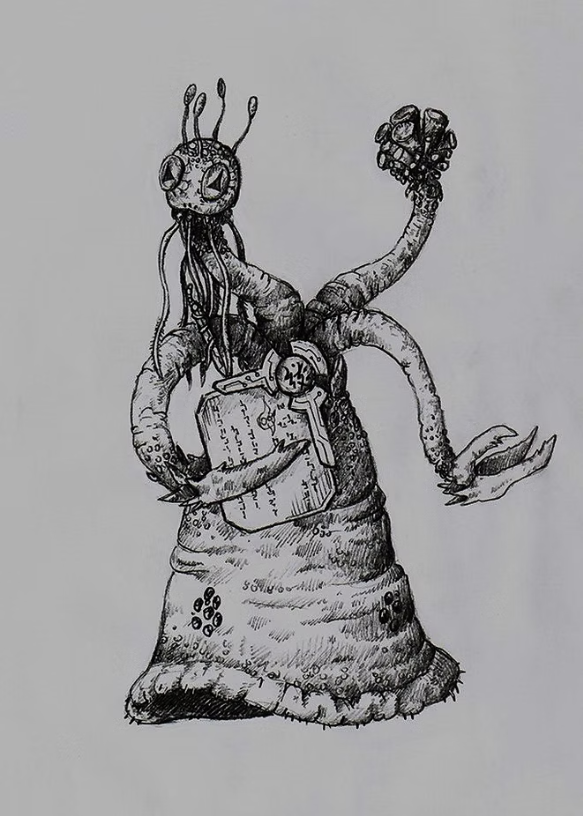
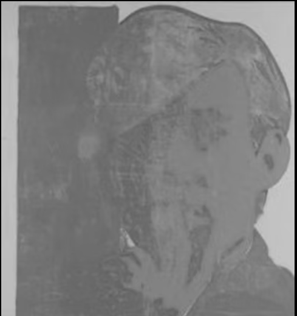

1Edith, please don’t call it that anymore. Accelerationism has stopped being the focus of the group. He’s in a group-chat right now, he messages, where they’re organising a new name for the meetings. Witch-House Social Club is winning. Accelerationism’s not an okay thing to believe. The Metro cancelled us. (Their cancellation took form in an article, published 18 March, carrying the title: What is ‘Accelerationism’, the belief followed by the New Zealand terror attacker?) We’re just a club for people who like witch-house.
I asked to sit in after I got to Melbourne, arriving tonight. Tomorrow’s meeting will be called Monstrous Protagonism: Grimes, Synth-Pop, and the Sympathetic Apocalypse. There’s a long epigraph and a short abstract. We stop talking, anyway, because the truck’s pulling to a gas station and my friend or the guy driving, the guy buying the house I’m on my way to with my favourite lamp and my favourite pillows all loaded in the mover, is asking, Edith, if you could get food from the McDonald’s. He’ll do the diesel. He gives me his card. He tells me his pin.
Gas stations are the most plausible, believable structures in the world. That gas stations were bound to exist, thereby have always existed, is intuitive. City or country or carved into the cliffside of a tumbling, Alpine ravine, they don’t change. Like dreams, beds change but the universe of the dream returns the same inchoateness, same recognition whenever the dreamer’s re-arrived at the same pattern of every pattern’s edge. Like dreams, like the opposite of dreams, irreducible opposed to unsurpassable, which aren’t different.
I bring the food and climb back to the passenger-seat. You seem kind of wiped, says the driver. It’s too easy to dissociate at interim ports like this place. Place, space. Place is fine, I mutter out loud, then struggle and say nothing. Struggle. And say: It’s like drinking a Coke with your eyes.
The driver nods, all like I suppose it is.
. . .
2Sometimes I arrive halfway through a conversation and have to think, yeah, if I’d arrived for the start of all of this nothing would’ve made sense, thank God I came late.
. . .
3I want to set up some premises that will make the aesthetic devices to come a bit more plausible. So, to set up, on the topics of machinery-as-capital and capital-as-reproductive life:
It is said [write Deleuze and Guattari] that machines do not reproduce themselves, or that they only reproduce themselves through the intermediary of man, but does anyone say that the red clover has no reproductive system because the bumble bee (and the bumble bee only) must aid and abet it before it can reproduce? No-one. The bumble bee is a part of the reproductive system of the clover. Each one of ourselves has sprung from minute animalcules whose entity was entirely distinct from our own . . . These creatures are part of our reproductive system; then why not we part of that of the machines?
Our worldviews reply in two stages: First, we have to invest capital with vitality, that’s easy enough, but then we get the chance to either (a) divest any ethical quantum from vitality-in-itself or (b) let the instinctive ethical quantum, the agency, we assign to human bio-systems/organs follow with the investment of vitality – we get the chance to invest subjective agency as a property of capital-in-itself, i.e. of unconscious machinery. Don’t try to resolve either way. Let’s have the tension.
Riding a bike past the Berlin Zoo, Michael Taussig – a fictocritic whose work, despite no self-citation as such, is schizoanalytic in method – finds his own way to this same dilemma of machine-reproduction, reflecting on the ‘wonderful beasts’ there, at the zoo, asking, ‘Do they distinguish between animals and things?’ Between Taussig and the bike he’s riding? He turns this reflection to: ‘We are unified, this machine and I, like the Incan Indians in the Andes of South America were supposed to think of the Spaniards mounted on their horses not as a man on a horse but as a man-horse,’ and, ‘So where does the bike bit end and the human bit begin?’
Reading that, I was at once reminded of something I read in 2015, a brief passage from a 1904 journal called Native Tribes of South-East Australia:
When on the Cooper’s Creek waters in 1862, searching for the explorers Burke and Wills, I was frequently saluted by blacks when within hearing distance with the words Pirri-wirri-kutchi, which may be rendered as ‘wandering ghost’. Even now the word Kutchi is used by the Dieri for any of the strange paraphernalia of the whites, for instance, even a dray and team of bullocks has been so called.
What struck was this instance of the word Kutchi, ghost, as instantiating for the colonial force, not only as the humans, the bumble bees of the operation, but the armada of invasive vitalities, the ghostly machine-system of which the white bodies were only a shameful part. There was, of course, a material premise to the deranged, perverse libido of European colonialism, that is, a vitalist premise, borne from the evolving constitution of the machines, the capital, whose destiny was to inaugurate capitalism. The clover-field wants to grow and, stupidly, the bees obey. They struggle to match its potential. New drones are deployed beyond the familiar harbours. Other, unwilling bees are enlisted, enslaved to the expansion of the capital-as-human/human-as-capital ghostly hybrid, the cyborg leviathan of capitalist colonialism. Of Kutchi. Meaning Ghost.
. . .
4Why not read schizoanalysis as what sociology becomes, all by itself, after bodies are distinguished from their organs? That question will come up again, before long. Schizoanalysis, wrote Guattari in 1992, was in crisis. He called it a crisis of under-modelisation. In Chaosmosis, published shortly before Guattari’s death, he prescribes a narrow, exact process for schizoanalysis. He defends schizoanalysis from a critical ‘crisis’ and, by that defence, tries to reconstitute what schizoanalysis is. Literally, the rescue he makes is a rescue from Deleuzeanism. In 1974, Deleuze wrote (278, 1974):
There are words that Felix and I now feel it urgent not to use: ‘schizo-analysis’, ‘desiring-machine’ – it’s awful, if we use them, we’re caught in the trap. We don’t know very well what they mean, we no longer believe in the words; when we use a word, we want to say, if this word doesn’t agree with you, find another, there’s always a way. Words are totally interchangeable.
It does, of course, turn out that Deleuze was premature in writing ‘Felix and I’. In Chaosmosis, to diagnose the crisis of schizoanalysis, Guattari writes that ‘individual and collective subjectivity lack modelisation’ (1992). At this point, one would not expect a turn toward de-modelisation or, at least, would not expect a reconstruction of metamodelisation as a mysticism. Yet, after all this talk, he steadies his resolve, and leaves well enough alone. He does not change anything about schizoanalysis’ trajectory, if but to narrow it a little. He writes that schizoanalysis should always 1. ‘mystify’, 2. ‘enchant’, 3. ‘poetise.’ And if schizoanalysis does not, it is done wrongly. Sadly, the art critic and psychotherapist are split: Felix doesn’t feel the same urgency; he still wants to use the words. What’s more, precisely, prescriptively, he wants to protect schizonanalysis’ special type of escape, i.e. what Deleuze calls ‘the schizophrenic escape’. What work are we doing, then, in an ex-Deleuzean paradigm, when we are not obeying Guattari’s trinity of obfuscations, and are using the discursive toolboxes of Anti-Oedipus to modelise, even metamodelise, along trajectories that are not mystifying, not enchanting, not poetic? What, if it’s not schizoanalysis anymore? Again, Deleuze: ‘We have been criticized for using the word schizo-analysis, for confusing the schizophrenic and the revolutionary. And yet we were extremely careful to distinguish them.’ His sense of ‘we’ is, again, not the same as Guattari’s. At schizoanalysis’ moment of crisis, initiated by that crisis’ diagnosis and prescription, art and art theory starts to, in a phrase, weird out. Guattari does marry the two, the schizophrenic, the revolutionary. Those who agree, obey the Guattarian trinity: Laboria Cuboniks’ xenofeminist aesthetics follow Anti-Oedipus’ line –
Desiring-machines or the nonhuman sex: not one or even two sexes, but n sexes. Schizoanalysis is the variable analysis of the n sexes in a subject, beyond the anthropomorphic representation that society imposes on this subject … The schizoanalytic slogan of the desiring-revolution will be first of all: to each its own sexes
– with Cuboniks’ slogan: ‘let a hundred sexes bloom’. Accelerationists accept the Guattarian trinity, too – the prescription of schizophrenia as revolutionary – but they divide to the right and left, to pro- and anti-revolutionary. This line from Anti-Oedipus is now famous (239–40):
… perhaps the flows are not yet deterritorialized enough, not decoded enough, from the viewpoint of a theory and a practice of a highly schizophrenic character. Not to withdraw from the process, but to go further, to ‘accelerate the process’, as Nietzsche put it: in this matter, the truth is that we haven’t seen anything yet.
These influences, i.e. of Schiz into xenofeminism and accelerationism, trace also into our home-brew cyberfeminism, as well as into the preservation of conventional metafiction. Whereas others aver. For some, at this moment of crisis, the necessary intervention was a redemption of the schizotypal in artistic practice; a reassignment toward Problem Resolution, that is to say, toward emotional/phenomenal realism and away from ontological extremism, i.e. away from mysticism. Fictocriticism and auto-theory stand with the sober faction of interventions of this type, cybernetics with the psychedelic. To the first example, Anna Gibbs – whose research entails fictocriticism and xenofeminism – assigns the following:
… the heterogeneity of fictocritical forms bears witness to the existence of fictocriticism as a necessarily performative mode, an always singular and entirely tactical response to a particular set of problems – a very precise and local intervention, in other words …
And:
… The fictocritical act is, strictly speaking, inimitable. For this reason fictocriticism is also a writing which must furnish its own code either as model or anti-model as it undertakes its own critique, provides its own process of self-reflection, and works at the same time to make an active intervention into a field of argument.
Returning: Why not read schizoanalysis as what sociology becomes, all by itself, after the body is distinguished from its organs? There are good reasons why we should not – one is that it’s closer to what psychoanalysis becomes after said distinction, as in, psychoanalysis becomes a sociology by overflowing the discrete charge of conscious subjectivity – but the better reason is that, despite intents, it’s really what schizoanalysis has failed to become. In fact, using Deleuze’s assurance: ‘words are totally interchangeable’, Anti-Oedipus’ operation on the body-without-organs (by accident, a sociological operation) looks to have been succeeded in name by fictocriticism and comparable methods, e.g. the emerging auto-theory and the cyberphilosophy of the CCRU under Sadie Plant and the earliest period under Nick Land. We may oppose the philosophical tendencies of the two, Sadie Plant having written: ‘To jack into cyberspace is not to penetrate, but to be invaded,’ where Nick Land has struck an expeditious note with:
Far from being a specifiable defect of human central nervous system functioning, schizophrenia is the convergent motor of cyberpositive escalation: an extraterritorial vastness to be discovered. Although such discovery occurs under conditions that might be to a considerable extent specificiable, whatever the progress in mapping the genetic, biochemical, aetiological, socio-economic, etc. ‘bases’ of schizophrenia, it remains the case that conditions of reality are not reducible to conditions of encounter. This is ‘the dazzling dark truth that shelters in delirium’ [quoting Anti-Oedipus]. Schizophrenia would still be out there, whether or not our species had been blessed with the opportunity to travel to it.
And:
How do we swim out into the schizophrenic flows? How do we spread them? How do we dynamite the restrictive hydraulics of Oedipus?
Oedipus is the final bastion of immuno-politics, and schizophrenia is its outside.
Land comes to appreciate Plant’s point, after some time: that you needn’t worry about how to make contact with the exterior, needn’t think about how to penetrate, or start any expedition. It has its own agency and will make its own contact. From its shelter in delirium, Kutchi has noticed you, and its invasion is imminent. For Land, this revelation must have tapped a critical vein, the terror it signalled for him. Not long after having written Critique of Transcendental Miserablism, in which Land’s name for Kutchi is ‘the Shoggoth-summoning regenerative anomalisation of fate, … the runaway becoming of such infinite plasticity that nature warps and dissolves before it … The Thing … Capitalism,’ Land would write The Dark Enlightenment, a tract advocating a return to monarchy, a 180-departure from and warning against thinking too much about Schiz, about what lurks beyond the Oedipal bastion.
Anyway, being tactical, local, and precise, as Anna Gibbs posits, these methods are not altogether the same as Anti-Oedipus’s exhortation: i.e. ‘Completing the process and not arresting it, not making it turn about in the void, not assigning it a goal …’ but they are more practical, get the same work done, and facilitate a more democratic access, in the sense that, by these interventional methods, which at least do ever arrive at a territorial result, the matter of the nomadic exterior, Schiz, may be brought home to the polity, to anyone other than the artist, as in, to that rare agent who operates from negative capability. As Anti-Oedipus concludes (382): ‘It therefore remains for us to see how, effectively, simultaneously, these various tasks of schizoanalysis proceed.’
In advance of the abstract for tomorrow’s meeting, Monstrous Protagonism: Grimes, Synth-Pop, and the Sympathetic Apocalypse, hosted by the Witch-House Social Club, an epigraph quotes the musical pop-artist known as Grimes:
My Instagram bio was: ‘I pledge allegiance to the robot overlords’ for, like, two years. I thought people understood that I ultimately probably believe in an AI dictatorship. I mean, I don’t think humanity is going to survive anyway. We’re fucked. I think AI is the natural evolution. It’s just like we killed the fucking Neanderthals, and now they’re going to kill us.1 I don’t think democracy really works. These are the kinds of things I think. I actually, for the short term, am a bit of a socialist, but not economically. I’m into free markets. What can I say? I think capitalism can solve some things.
When Grimes offers this, it’s as the rationale for her upcoming album, Miss Anthropocene, which she has called ‘an evil album about how great climate change is,’ and about which she has said: ‘I wanted to make climate change fun.’ We should read two snippets from her recent single, We Appreciate Power (2019), one potential inclusion in the upcoming album:
People like to say that we’re insane
But AI will reward us when it reigns
Pledge allegiance to the world’s most powerful computer
Simulation is the future
And:
Neanderthal to human being
Evolution, kill the gene
Biology is superficial
Intelligence is artificial
Submit
Submit
Submit
Submit
Submit
Submit
Submit
Submit
The furious abstract, on which Grimes’ thoughts acted as an epigraph, full of heart and continentalism – stylised as the screen-grab of a Discord forum, a device toward polyphony that actually elides it, what, when every individual is demarcated and who is or who is not speaking is always immediate – advances as such:
basically, starts Speaker 1, timestamp 5:54 pm, it’s psychocultural alchemy
you borrow anything from through this gap, turning anything into anything provided sufficient aesthetic deliberation/sufficient hocus pocus
i suppose, concludes Speaker 1 after a short silence, timestamp 5:58 pm, it’s what it deserves
you really can do that with culture
with meaning
no when you democratise schizophrenia/analysis, starts speaker 2, timestamp, 6:13 pm, all you get’s the re-election of oedipal centrality
see this with the history of the internet
schizophrenia manifests oedipus within/from itself, negentropically
the face of the exhumed unconscious of humankind is not delightful or free or even frightening: it’s Facebook, our elected sociotransactional Oedipus
the vertigo it offers, as with the dull surface-glow of any fascist’s eye, is too deep to conjure fear
too deep, timestamp 6:30 PM, too shallow
warhol talks about it too
block quote
Someone said[, Andy Warhol said,] that Brecht wanted everybody to think alike. I want everybody to think
alike. But Brecht wanted to do it through Communism, in a way. Russia is doing it under government. It’s
happening here all by itself without being under a strict government; so if it’s working without trying, why
can’t it work without being Communist? Everybody looks alike and acts alike, and we’re getting more and
more that way. I think everybody should be a machine. I think everybody should like everybody.
Is that[, asks Warhol’s interviewer,] what Pop Art is all about?
AW: Yes. It’s liking things.
And liking things is like being a machine?
AW: Yes, because you do the same thing every time. You do it over and over again.
it’s beyond obvious to say that where d and g would’ve gripped their knees in panic, to see facebook become the face over the nothing, warhol would have smiled
were he alive to depict the space between deleuze’s death and the emergence of facebook, he would have spared us any delusion about whether oedipus ever left
even those nostalgic for the era, the early internet, try to tell us ‘what it was like’
to recount it as they would a lost kingdom
not an anti-oedipus, never an anti-oedipus to them, even they report their roles as contributors to a new oedipal emergence, as actors against entropy, negentropic actors within the schiz flow
this worldview is messianic – it depends, timestamp 6:54 pm, on the telos of a real, true king
‘if we trudge out across the schiz,’ timestamp 7:46 pm, still speaker 2, ‘rakes in hand, work together at random and in peace, a true harmonic order will emerge, robed in flowing, green, cgi code, to deliver us from all oedipuses forever’
i don’t know why they’re so mad, the ancient usenet people
their kingdom has come, timestamp 7:47 pm
. . .
5‘Dark world, growing desert: a solitary machine hums on the beach, an atomic factory installed in the desert.’ As such do Deleuze and Guattari outline the ‘expected clinical mould’ into which the schizophrenic slips after saying ‘everything there is to say’ about the ‘paucity of reality, the loss of reality, the lack of contact with life, autism and athymia’; the schizophrenic answers with a quick slip into the poetic mould of: ‘Dark world, growing desert: a solitary machine hums on the beach, an atomic factory installed in the desert,’ and beyond the comma it isn’t too much labour to resolve a metaphorical ‘solitary machine’ into a metaphorical ‘atomic factory’, but how do we resolve a beach into a desert? A site of departure, the tumbling, wet threshold of the schizophrenic exterior, that all at once becomes a desert, a setting whose protagonist is no longer solitary, no longer humming – and how much can be said about humming, what Michael Taussig has called ‘the happiness of the bodily unconscious or at least its idling modality’? (39) – no longer solitary or humming, but installed, now all too unalone, now capital, far from idle, its machinic roar nothing like any ‘happiness of the bodily unconscious’. What at all about this mould, in the 70s anyway, was clinically expected? For the schizophrenic to embody a solitary i.e. bodiless desiring-machine – fine, more or less expected – but then to transmute this embodiment to that of an altogether neurotic producing-machine? And why the blue curtains, the scene-setting: ‘Dark world, growing desert …’? The irony, of course, is that a factory should sit in the desert, disconnected from any socius it could expect to energise; and that a mindless machine should hum at the cusp of the exterior, the cusp of the laid-open and laid-bare, the fragile unconscious of the schizophrenic it embodies. Reality’s loss initiates a voyage out to a drowning sea or an expedition in to an unrewarding desert – two exteriors – and either course ends with the schizophrenic stranded, with no means to extricate themselves, too idle (solitary machine), too paranoid (atomic factory). For Deleuze and Guattari, to clarify, this desert has been the Body without Organs. Their schizo – not their schizophrenic, as such – glides over this desert, which is (also, always) a thin threshold between worlds, ‘in order to be everywhere something real is produced, everywhere something real has been and will be produced’.
The schizo [they write] has no principles: he is something only by being something else. He is Mahood only by being Worm, and Worm only by being Jones. He is a girl only by being an old man who is miming or simulating the girl. Or rather, by being someone who is simulating an old man simulating a girl. Or rather, by simulating someone . . . , etc. This was already true of the completely oriental art of the Roman Emperors, the twelve paranoiacs of Suetonius.
Suetonius’ twelve paranoiacs are, naturally, Julius Caesar and the eleven emperors to follow, who in name alone account for the Schiz dilemma, the Twelve Caesars, that is, Caesar, then the emperors who would take that name for themselves. First, in fact, as their own names. Later, as an address and title. We know how the Schizo feels and, too, how the post-Caesar Caesars felt. Take the following reflection on late-capitalist constructions of identity and ask if it connects:
Waluigi is the ultimate example of the individual shaped by the signifier. Waluigi is a man seen only in mirror images; lost in a hall of mirrors he is a reflection of a reflection of a reflection. You start with Mario – the wholesome all Italian plumbing superman, you reflect him to create Luigi – the same thing but slightly less. You invert Mario to create Wario – Mario turned septic and libertarian – then you reflect the inversion in the reflection: you create a being who can only exist in reference to others. Waluigi is the true nowhere man, without the other characters he reflects, inverts and parodies he has no reason to exist. Waluigi’s identity only comes from what and who he isn’t – without a wider frame of reference he is nothing. He is not his own man. In a world where our identities are shaped by our warped relationships to brands and commerce we are all Waluigi.
Dark world, growing desert: A solitary machine hums on the beach, a paranoiac installed in the Body without Organs, a Gamecube character-skin modded to be playable on an N64 Emulator, Waluigi riding the N64 Rainbow Road. Every time you load his skin it glitches. You drive right through the star fence, off the edge, and don’t fall, don’t get to die, don’t get to re-spawn.
You have to reboot to start another match.
Three rolling dots in a wave, light behind the text-bubbles striking in the bright, highway heat like lens-flare off a faraway, alien sun, red but polarised pink, filigreeing the visor of an astronaut’s EMU, my friend messages: read the abstract or read the abstract.
Online grammar leaves me with no way of knowing if he’s asking me, ordering me, or confessing to me.
And no way of knowing if it makes any difference.
1 Grimes appears to credit a thought-experiment called Roko’s Basilisk. The film clip for the 2015 song Flesh Without Blood/Life in the Vivid Dream, directed by Grimes herself, includes four characters whose narratives are given through abstract montage, one of whom is called Roccoco Basilisk. Grimes summarises the character as such: ‘I don’t know if you’ve heard of Roko’s Basilisk. She’s doomed to be eternally tortured by an Artificial Intelligence, but she’s also kind of like Marie Antoinette.’ Roko’s Basilisk, named after the LessWrong user-tag of the thought-experiment’s creator, can be roughly outlined as follows:
Supposing the inevitable existence of artificial super-intelligences, and supposing at least one AI might subscribe to a consequentialist ethics, and supposing, lastly, that this AI could produce an algorithm to calculate all events preceding it, a means of reconstructing/reanimating corpses, or of simply re-simulating deceased consciousnesses, then this AI would be able to determine who, in the past – that is, our present – had or had not foreseen its eventuality. It would also be able to determine who, in its past/our present, was/is aware of its gaze, of its present witness on/active presence within its own past. It is watching you, it is judging you, and, by its own consequentialist ethics – if you can imagine (you now can) that it might torture or punish you for doing anything short of everything within your power to accelerate its existence, it being the saviour of the cosmos, the ethical machine that will maximise peace and joy – it is organising your eternal torment, unless you enslave yourself to it and devote yourself to its creation. Kutchi
This, she gives every indication, is something Grimes believes in.
NUMBERS BY PAINT
Quantifying aesthetic receptions
2021
Edith Lyre · October 2021 · MPhil Thesis, Adelaide University · the thesis as a PDF
Abstract:
This creative writing thesis proposes and outlines an original method for the criticism and adaptation of aesthetic artefacts and events, called fictoanalysis. It is structured in three parts, the first titled The Surface of Myth, the second titled Agamemnon, and the third titled simply Fictoanalysis, which are part 1 of the exegesis, the creative text itself, and part 2 of the exegesis respectively. Initially, in the Surface of Myth, the thesis identifies the import of a new critical method by noting an extant creative process that thus far lacks modelisation. Agamemnon details this critical method, demonstrating an original mode of generative analysis which delivers artistic/aesthetic outcomes that are, in Fictoanalysis, declared to be feats of simultaneous creativity and discovery. In Fictoanalysis, the final part of the thesis, the functionality of this method, i.e., how it works and what it does, is delineated and clarified.
Declarations:
I certify that this work contains no material which has been accepted for the award of any other degree or diploma in my name, in any university or other tertiary institution and, to the best of my knowledge and belief, contains no material previously published or written by another person, except where due reference has been made in the text. In addition, I certify that no part of this work will, in the future, be used in a submission in my name, for any other degree or diploma in any university or other tertiary institution without the prior approval of the University of Adelaide and where applicable, any partner institution responsible for the joint-award of this degree. The author acknowledges that copyright of published works contained within the thesis resides with the copyright holder(s) of those works. I also give permission for the digital version of my thesis to be made available on the web, via the University’s digital research repository, the Library Search and also through web search engines, unless permission has been granted by the University to restrict access for a period of time. I acknowledge the support I have received for my research through the provision of an Australian Government Research Training Program Scholarship.
11 October 2021 Edith Lyre
…………………
INTRODUCTION
What does it mean to say nothing? Whatever else, that the remark will be eternal. Everything in this thesis turns on the question of what matters and what does not, within art, and which words matter and which do not, within literature in particular. This turning — around that question — becomes a spiral, an orbital movement toward a core. We call this core the ‘haecceitic minimum’ or the ‘haecceitic maximum.’ Its object is aesthetic, that is to say, it is what matters within art. In this inquisitive movement we gesture toward Californian philosopher Graham Harman, who in 2012 asked us, ‘Why not try shortening [Moby Dick] to various degrees in order to discover the point at which it ceases to sound like Moby Dick? Why not imagine it lengthened even further?’ (202). That ‘point at which it ceases’ is our haecceitic minimum and haecceitic maximum. That is the core we turn around, toward which we spiral and orbit.
We discovered, not long ago, two artefacts which, we strongly suspect, possess the same core. These are a charlatanical ‘novel’ by Andy Warhol, called a and published in 1968, and the 1072nd line of a play by the ancient playwright Aeschylus, called ‘Agamemnon’ and first performed in 458 BC. The line reads: οτοτοτοι πόποι δα, or in Latin, otototoi popoi da. Starting with Warhol’s book: a is 451 pages of white noise; it is two twelve-hour transcriptions of Manhattan-life as heard from a tape-recorder in Warhol’s hand. The transcriptions are filled with misspellings, unintelligible word-fragments, and clear typewriter-errors. Otototoi popoi da behaves the same way. Those syllables are not absent of meaning. Aeschylus has placed them in the mouth of Princess Cassandra of Troy, the legendary Prophetess, whose utterance of them precedes the annunciation of her ultimate and final prophecy, foretelling Agamemnon’s and her own immediate deaths, as well, thereafter, as the subsequent reign and usurpation of Aegisthus. But, the words otototoi popoi da are infinitely fungible; their meaning is survivable into an hardly-at-all limited combination of other letters and other words. The merit in these particular sounds, syllables, etc. is their metric precision; they match the scansion of the adjacent lines. (We are trusting Anne Carson when we say that (“Cassandra Float Can”, 2016).) The sounds, then (as the beginnings of a prophecy Cassandra cannot overcome (cursed to see the future, but never to be believed)), may be called empty, and thereby are left open to a nonfinite set of projections. Under them (try projecting) lies the unintelligible whole of the future Cassandra doesn’t even try to prophesy — can’t imagine enunciating. Stylised nothing, always in good taste, its prophecy always perfect. Otototoi popoi da, begins Cassandra.
‘Rattle, gurgle, clink, tinkle,’ begins Warhol’s a. Graham Harman, in the same breath as the above question about Moby Dick, compels us to ask ‘how some [artworks] withstand the earthquakes of the centuries much better than others’ (202). If earthquakes and centuries are to be taken as a fair divining rod, in our pursuit of a core, then the question becomes why neither of these two sentences will probably ever be lost, not (mind the pun) so far as the foreseeable future extends. How did the scream οτοτοτοι πόποι δα survive in such exact rendition to be heard 2,500 years later, borne by nothing but its context, i.e., the play it’s from? What about the 451 pages of empty words and exchangeable syllables that comprise a, that one long scream — what purity is there in these letter-sequences, just as they were first rendered, that guarantees they will be/should be rendered just-so, with just-such errors, again and again?
From Harman’s exhortation, we have built a method of critical analysis that might address and answer all of these questions. It is called fictoanalysis. Charged with shortening and lengthening, divining haecceitic minima and haecceitic maxima, the method’s device is the spiral compression or spiral expansion of its investigative object, and here, in the thesis, its product is the expansion of otototoi popoi da and the compression of a until the two artefacts’ cores are discovered to be the same core. One creative output is given which identifies, contains, and gestures toward the unitary core shared by both, called Agamemnon. Fictoanalysis is proffered as the ideal method for interpreting what we have called superficial territories, of which a and the 1072nd line of ‘Agamemnon’ are examples. Myths in general deserve immediate comparison with post-abstract impressionist artworks, in how we receive them, but especially, in how we fail to receive them. How fictoanalysis can help us overcome such failures of reception, how it will function and how it has functioned in its precedents, and at last what aesthetic horizons are made visible by it (or, indeed, returned to memory by it), are the charge of this thesis, which in its complete composition is called Numbers by Paint.
A short note on style:
You may have noticed the first-person plural doing a lot of work in that introduction. At turns, the first-person point-of-view in this thesis will slip from plural to singular and back again, usually not with the more common intent of including the reader. ‘I’ works better, we find, when reporting on actions, or matters of identity, that have taken place outside the narration, and ‘we’ is more serviceable when dealing with immediate perceptions, experiences as a reader, epistemic conditions of encounter, etc. – with less corporeal concerns, or perhaps less anthropocentric concerns. The Posthuman by Rosi Braidotti, originally published in 2013, revisits and seeks to refortify Braidotti’s concept of zoe, which exists already as one of multiple Greek words for life, and which was used in the New Testament to refer to divine life specifically. In Braidotti, the word is opposed to one of its Greek similes, bios, which is paired to anthropic or anthropos-centred life (‘both organic and discursive’), and it is asserted that:
Zoe as the dynamic, self-organizing structure of life itself… stands for generative vitality. It is the transversal force that cuts across and reconnects previously segregated species, categories and domains. (60)
For us, the key to thinking zoe lies in one note Braidotti leaves about the practice of it, i.e., ‘An ethics based on the primacy of the relation, of interdependence, values zoe in itself’ (94). And further, ‘Transversality actualizes an ethics based on the primacy of the relation, of interdependence, which values non-human or a-personal Life’ (95-6). What this leads to is a methodology not unlike actor network theory, which emerges, however, as a theory with a thinkable subject. As Braidotti has it:
What I want to emphasize instead, in a more affirmative vein, is the priority of the relation and the awareness that one is the effect of irrepressible flows of encounters, interactions, affectivity and desire, which one is not in charge of.
This humbling experience of not-Oneness, which is constitutive of the non-unitary subject, anchors the subject in an ethical bond to alterity, to the multiple and external others that are constitutive of that entity which, out of laziness and habit, we call the ‘self’. (100)
Let’s circle back. For me, this construction of subjectivity, of presence, as not (necessarily) personal or singular scans as functional – more functional in fact than the unitary alternative. Certainly, in matters of perception, experiences of art, and epistemic concerns generally – and, for me, this is critical – it does feel more honest. Generally speaking, our thesis is a report on the shared reception of two artefacts, a and otototoi popoi da, and the prejudices and preconceptions and other entanglements that bedevil said reception, as it emerges within, i.e., our subjectivity. We have no choice, therefore, but to admit in our grammar some room for the singular and the plural to, on occasion, be one and the same.
Myths — that is, the quasi-histories of antiquity and the classical texts accounting these — behave in ways not dissimilar to post-abstract impressionist artworks (at the level of their present-day reception, that is). We should focus Andy Warhol’s artworks for their range of media and ‘purity’ of theme, all of Warhol’s mature works drawing on superficiality in theme, while deploying the same in device. That thematic superficiality is what recommends mythic comparison, myth being, in 21st-century reception, dispossessed of its ‘depth.’ That is to say: myths may no longer be encountered as contemporary and may no longer be encountered without witness a priori/prejudice a priori. In advance of the artefact itself — the real document, whether physical or digital — a myth is already received, processed, and digested by millennia of reception, with the contents of the artefact serving only to fill in details, or even produce further prejudicial entanglements, add obfuscation, de-clarify the myth by a synecdochisation of it to the lesser artefact, the textual account. It is easy to draw on Warhol’s famous Campbell’s Soup Cans: in POPism (1980), Warhol writes, ‘The Pop artists did images that anybody walking down Broadway could recognize in a split second – comics, picnic tables, men’s trousers, celebrities, shower curtains, refrigerators, Coke bottles – all the great modern things that the Abstract Expressionists tried so hard not to notice at all’ (3). For obvious reasons, Warhol’s soup cans share in this obliviating ordinariness. ‘Pop art,’ he asserts, ‘took the inside and put it outside, took the outside and put it inside’ (ibid.), with the soup cans serving as perhaps the earliest demonstration of this inversive play. The canvases for the cans are painted by hand, and the fleurs-de-lys adorning the bottom rims are individually stamped. Through this ironic attention to detail, Warhol troubles the habituating effects of mass-production/repetition, reproducing the image through alternate, more intentional means, thus retrieving it from the perceptual periphery and transferring it to one’s immediate focus. Once barely noticed, the surface of the Campbell’s Soup Cans becomes their aesthetic core, the outside becomes the inside. Audiences are shown a longstanding detail of their own environs, as if for the first time. To dwell on this sense of newness, however, would alienate one from the fact of what has occurred. The more interesting place to dwell, when shown these fleur-de-lys-adorned food-cylinders, is in the tension between that sense of newness and the reality of their longstanding presence. What one encounters, in one’s relation to the canvas and painting, is not originality, or not only that, but revelation: the creative site is one’s internal subjectivity, where the pre-existence of these artefacts is revealed. As with any myth, their aesthetic force was long ago received, processed, and digested. This part of the exegesis will argue the aptness of that comparison (myth with post-abstract impressionism), introducing criticisms of classical texts by Anne Carson, Christoph Ransmayr, and Christa Wolf to observe the tension of reconciling these millennia of secondary entanglements with the reception of myth. Carson’s readings of Geryoneis (a fragmentary epic, accounting Hercules’s theft of some cattle from a ‘red monster’ named Geryon; only small, disordered pieces remain) will be given focus, and will be compared to Andy Warhol’s Paint by Numbers-paintings. At this juncture, the essay delivers a preemptive clarification of, or argument for, the temporality of the creative text as queer temporality, citing Jack Halberstam. Here, the (perhaps, to the reader, but also perhaps not) alien logic or experience of time within Agamemnon is situated within the personal and the queer. How that situation affects the plot’s temporality is delineated by its (queerness’s) intersections with death and other modes of annihilation. German novelist Christoph Ransmayr’s efforts to read and ‘travel toward the essence of’ Ovid’s Metamorphoses in his critical novel The Last World will be observed in relation to Warhol’s reflections (no pun intended) on surfaces and superficiality. Christa Wolf’s reconstruction of the biography of Cassandra of Troy, via reference to several classical texts and amidst conflicting accounts, will be offered as the ideal contrast to Warhol’s project. Wolf recounts the moment of her reading Line 1072 of Aeschylus’s “Agamemnon”, i.e., ‘otototoi popoi da!’ (Cassandra crying out in advance of her final prophecy) as a moment of prophetic revelation, binding her creative force to the ancient Cassandra’s prophetic force and, thereby, permitting/obliging herself to write the seeress’s biography. To rationalise the contrast, Warhol’s novel a: a novel will be brought forward for study, its intentionally accidental structure, misspellings, deliberate chaos drawn as a foil for the chaotic elements of otototoi popoi da, the syllables themselves altogether non-lexical/non-referential, chosen only for their lyrical connection with the scansion of the lines adjacent. With the premise of myth’s troubling superficiality established, and the interior site of its aesthetic encounter also established (that site being one’s subjective encounter/‘inward’ reception), the dilemma of what’s to be done is posed at last: how are we to withdraw meaningful outcomes (i.e., meaningful criticism) from this porous content? The elements of a critical-creative project, in effect a genre — one apt to withstand this tension and deliver critical reflections on artworks/myths that operate from the subjective/the interior — are outlined and argued for. The floor is set for the presentation, argument, and in all the proposal of an original critical method.
Empire, the 8-hour 5-minute film by Andy Warhol, is best watched with your eyes closed — unless you’re someone who doesn’t dream. That doubling of lens, that is, the dreaming eye’s interior vantage on the workings of outward attention, its vantage on that part of us all that receives the film as (just) a decorated TV screen, a surface, delivers the moment of emergence, shows us ‘where the art is,’ and where, within our conditions of encounter, it is not. To fall asleep reading, watching a TV show, etc., and to then dream about the novel, about the TV show, finally wake up, is to receive the subject matter, the content of the text, as an artefact. It is to discover already-realised aesthetic potentials, textually dormant but imaginatively active, that are at work beyond the literal features of the text. As for mythic texts, for us lost across a gulf of dreaming (their literal features are obscured by millennia of interpretation), we cannot encounter their aesthetic potentials in any other way. We are forced to arrive at them from the other side of the dream, from the vantage of having already read them, already dreamt them, already woken up from them. How to tell apart history and myth? Where, per Joyce, ‘history is a nightmare from which I am trying to awake,’ myths are nightmares from which we have already woken.
From what side are we forced to arrive, when we arrive at Warhol? Surely no mythic dream precedes a screen-print of the Campbell’s section in the tinned vegetables aisle. The most utile of Warhol’s series, that is, the most direct and accessible versioning of this secondary interpretation-theme, is probably the ‘Paint by Numbers’-series, which delegates the onus of aesthetic experience, of artistic projection, to the audience’s lens. These works also possess a ready-to-hand similarity with mythic texts, sharing the processes of interpretation that inform our engagements with each. This is best shown with respect to fragmentary mythic texts. Anne Carson having given us abundant material for comparison, we will focus our argument on Geryoneis, which Carson has adapted in the novels Autobiography of Red and Red Doc>, and as well on the legendary person of Cassandra of Troy, per the novel Kassandra: Erzählung by Christa Wolf, to which work Carson pays some reference in Autobiography of Red and Cassandra Float Can. To proceed directly:
Consider these remnants of Geryoneis against Warhol’s paint-by-numbers violin, shown at the end of the essay as Table 1. That I could not find an image wherein the fragments were not laid-out beside a numbered ruler is telling. Criticism of fragmentary classics takes on an idiosyncratic character, the onomastics of the critical method sharing many of the same structural difficulties as topology, map-making. Take this passage from Stesichorus PMGF S21.1–3 (Geryoneis): A Textual Proposal by Marco Ercoles (2011):
P.Oxy. 2617 fr.1 (= S21), whose “first line is the beginning of an epode and the top of a column,” can be adequately inserted at the top of fr.4.ii (= S15.ii), where ep. 1–8 + str. 1–5 are missing.
The nominating terms resemble coordinates. Geryoneis’s fragments are not in any necessary order, are not differentiated by pages, and the epic resembles a stellar constellation, albeit less stable. Carson writes: ‘The whole corpus of the fragments of Stesichoros in the original Greek has been published thirteen times so far by different editors, beginning with Bergk in 1882. No edition is exactly the same as any other in its contents or its ordering of the contents’ (1998, 9). Carson’s Autobiography of Red traces the entanglements of Geryon’s myth within/through a contemporary world-schema, necessarily her own, and draws upon (recycling terms) the dreaming eye’s interior vantage for its creative output. That is, Autobiography of Red draws upon Geryoneis’s moment of encounter and its conditions of encounter, treating this moment and these conditions as the site ‘where the art is’/a real aesthetic emergence within/from Geryoneis’s moment, via Carson’s witness. Carson’s operation is the epic’s real entanglement across the gulf of the receding nightmare (or the becoming-dream) of myth. More (even) than creativity, this is a labour of discovery. We will strike this same note — about some critical adaptations existing as inventions and discoveries — as a matter of refrain.
A sample from Autobiography of Red:
… He thought about the difference
between inside and outside.
Inside is mine, he thought. The next day Geryon and his brother
went to the beach.
… Geryon’s brother found an American dollar bill
and gave it to Geryon. Geryon found a piece of an old war helmet and hid it. (49)
Contemporary renderings of classic texts are not, by any means, rare. Neither are efforts to symbolically recharge the timelessness of classic narratives (a motif of bicycles in one production of A Midsummer Night’s Dream comes to mind), but to unfix a re-rendering and force the setting into a tension of now and nothing like now, to gamble on the alienation of every time-period, is a rarer strategy. Past Carson, one other likeminded strategist should be brought into focus. Christoph Ransmayr’s The Last World (1988) is a detective novel (structurally speaking) in which, hot on the trail of Ovid-in-exile, PI Cotta disembarks off the storm into a world of overlapping historical eras, in which Ovid’s metamorphic interflows implicate the passage of time. Again, more than fiction, Ransmayr’s novel is classical research; it is a self-collapsing (yes, postmodern) attempt to reach across the interim of the dream and there rediscover Metamorphoses ‘as new.’ Of course, being postmodern, the project bets on its failure and, by that failure, The Last World details the epic’s real aesthetic emergences within/through the author’s conditions of encounter(/his, her, or their world-schematic entanglements). Again, we see critical discoveries that are more than adaptation and creativity (i.e., are also discovery). But, how does any of this help us to think about Warhol? If my remark were only that mythic adaptation draws on contemporary material in such a way as to elucidate both the mythic and contemporary, the remark would be fairly trite. What distinguishes mythic adaptation is that, in essence, there is no myth. There is no ‘real mythic interior’ to be elucidated. There may be a sliding asymptote towards the real (well-worth pursuing in its own right, as Ransmayr does, striving to recall the nightmare), but the same can be said of Warhol. Andy, on interiors: ‘I just look at the pictures in the articles, it doesn’t matter what they say about me; I just read the textures of the words. I see everything that way, the surface of things, a kind of mental Braille, I just pass my hand over the surface of things … I just feel the shapes with my eye’ (Berg 1989, 54). Moreover, and more famously: ‘If you want to know about Andy Warhol, just look at the surface: of my paintings and films and me, and there I am. There’s nothing behind it’ (Berg 1967, 3). Now where is the art?
We can think on the criticism of Warhol and think, further, on how this user-feedback was taken onboard/replied to. Three replies: POPism; The Philosophy of Andy Warhol; and Hackett’s transcription of Warhol’s diaries. These texts exist as tabloid-entities, reactions to market-interest. All were made on request, that is, none of them were Warhol’s own idea. These texts turn again and again to Warhol’s life and personality — it is in The Philosophy of Andy Warhol that he is monikered ‘The Nothingness Himself’ — and they permit readers to try to resolve their confrontation with the art, its mystery as such, through its author (an exterior/secondary entanglement). The same fate continually befalls myth and its writers. Even Anne Carson deliberates at length on the personality and aesthetic sentiments of Stesichorus before starting-up her adaptation of his Geryoneis. To find the pre-transformed mythic ur-cosmos, Ransmayr’s Cotta must search for Ovid. Consider: Whether Homer was or was not a woman, was or was not truly blind, existed as one or many writers, even wrote at all — this is the charge of contemporary Homeric criticism: i.e., to interrogate the source. Critics of Warhol and of mythic poets share a common dilemma: there is nothing for them to operate on within the text-itself; no Warholian interior to operate on; no mythic interior either. Every investigation returns to the works’ secondary engagements. All is returned to the dreaming eye’s interior vantage.
2008—
Alberto Mugrabi: I think Warhol is probably one of the most visionary artists of our time. He’s an artist that has opened every door for every artist today.
Robert Hughes: Did you know him?
M: No, I never met Andy Warhol.
H: I used to. I thought he was one of the stupidest people I’ve ever met in my life.
1 Note: The source for this – a video uploaded to abc.net.au in 2012, titled “Robert Hughes on Damien Hirst and Andy Warhol”, has recently been removed from the internet. Fortunately, a publicly available 2014 article, “Is the influence of the ultra rich killing art?” by Eric Wayne, quotes much of the interview.
What does it mean to say nothing? Whatever else, that the remark will be eternal. What does the critic do differently, when they encounter Warhol’s novel, a, as first an artefact rather than as first a text? Some quick background for the novel, starting with its production process: to produce a, Warhol and friends walked around, visited acquaintances, etc. while tape-recording two separate twelve-hour cycles, then left the recordings in the hands of four college students, who took four years to transcribe the contents of the recordings. In The Philosophy of Andy Warhol, Warhol surmises (probably correctly) that they delayed the transcription on purpose (1975, 96), in order to spend more time among the life of the Factory, Warhol’s (in)famous studio. The students’ transcriptions are riddled with errors and abstract-impressionist detours, lengthy explosions of capitalisation as a character screams, or extends the aɪ of ‘divine’: ‘SHREEEEEEEEEEEEEEK’ (1968, 387) or ‘she’s—OOOh, Nedda’s diVIIIIIINE’ (383). Warhol has a hand in the novel’s structure, cutting extracts from every second page that are then pasted to the right header, slicing passages into double-columns which abruptly break into single columns or wander to the side in marginalia, only to break again as the formatting returns to a justified alignment. Sometimes the tab-key (or typewriter equivalent) is hit with chaotic abandon and a passage willl all at on;ce w i th little warning start ac tin g like this. To understand what on earth the artist is up to, we should repeat this quote of his: ‘I just read the textures of the words. I see everything that way, the surface of things, a kind of mental Braille, I just pass my hand over the surface of things … I just feel the shapes with my eye.’ Warhol probably didn’t read a. He toyed with the formatting and threw in structural oddities that to him would have equaled a kind of gardening, or floristry — i.e., an aesthetic rearrangement of shapes — so as to deploy blocks of words as minor artefacts, collected and reworked to contribute to the full sculpture of the end-artefact, the artwork of a. Compare to his ‘Brillo Boxes.’ These are wooden shapes painted to resemble or imitate in-store boxes of soap pads, containing nothing (or, at least, no Brillo pads), yet, around that nothingness, still complete, not hollow or empty, but, rather, full with the aesthetic charge of their interior nothingness. Reading a as a ‘novel’ qua narrative-account —- i.e., scanning it for a story or ‘literary purpose’ — would be/is as unwise as sawing open one of these Brillo Box-artworks in the hopes of retrieving soap pads. An alternative name for the novel could be: a: a novel by Andy Warhol by Andy Warhol. Thinking on this faux-author/real-artist doubling, we can start to reflect on its status as first an artefact. This moves us (then) to ask where is the art now? And how is it to be engaged? Critics of Warhol, as a rule (myself included), engage him through his personality. We might reflect on the contexts in which Warhol is available for criticism, as in, on who can or cannot appreciate him. In March 1982, to satirise Warhol, humorist and journalist Alexander Cockburn wrote a ‘spoof’ of one of Warhol’s celebrity interviews, in which Andy Warhol and his then-agent, Bob Colacello, take Adolf Hitler out to lunch at New York café Mortimer’s. ‘I have been going out to Germany once a month,’ starts Fake Warhol. ‘I think you would find it a bit changed.’ To which:
HITLER: Blood mixture and the resultant drop in the racial level is the sole cause of the dying out of old cultures; for men do not perish as a result of lost wars, but by the loss of that force of resistance which is contained only in pure blood. All who are not of good race in this world are chaff.
AW: Gee. Maybe we should get a waiter and order.
HITLER: Just a salad for me, thanks.
His point (Cockburn’s point) being that, were Hitler to have survived and, even, been victorious through the Second World War, the outcome for Warhol would be moot. The same eternal nothingness would persist and even be receptive to fascism. Certainly, the aesthetic sensibilities informing the Campbell’s cans could have serviced, also, in propagandising the Nazis’ Eintopfsonntag, or One-Pot Sunday, a program to minimise the consumption of expensive or fatty foods by, once a month, asking all to eat simple meals stewed in a single pot and donate one of the same (Wohlfromm 2017, 31). We may compare a Warhol artwork with an Eintopfsonntag poster, Table 2, while thinking on the fact that — post hoc — Campbell Soup Company would become an important commissioner of Warhol’s, appreciative of the publicity his art attracted (1989, 946-7). What this reflection offers us is an insight into the available avenues for engagement, the potential subjectivities that may receive Warhol’s art, what kind of eye, what kind of dream. That Hitler and Ronald Reagan, both, can find something to like in Warhol’s paintings is good evidence that the paintings really are mirrors. That goes for his novel, too.
It might be wise to make an argument or two here for the nonlinearity of the creative work. The plot of Agamemnon pivots around multiple timezones which, though distinct, struggle to achieve a frame of comparison, or a standard mean time, against which the order of events can be measured or timelined. A novella which, in essence, concerns a collision of worlds (and subsequent eruption), Agamemnon borrows its chronological logic from research and theory about queer temporality/ies. In his work of renowned queer theory, In a Queer Time and Place (2005), Jack Halberstam speaks of queer temporality as a manner of compression at the cusp (typically) of annihilation. Think on Cassandra, screaming otototoi popoi da as she disembarks the chariot that’s driven her to the prophesied execution. Think on Warhol, already death obsessed, prematurely declared dead after Valerie Solanas’s assassination attempt, who doses speed every day and works through severe abdominal pain, refusing all help right until he collapses and, this time, dies for real. Now, Halberstam:
In his poem “In Time of Plague,” Thom Gunn explores the erotics of compressed time and impending mortality: “My thoughts are crowded with death / and it draws so oddly on the sexual / that I am confused/confused to be attracted / by, in effect, my own annihilation” (Gunn 1993, 59). Queer time, as it flashes into view in the heart of a crisis, exploits the potential of what Charles-Pierre Baudelaire called in relation to modernism “The transient, the fleeting, the contingent.” Some gay men have responded to the threat of AIDS, for example, by rethinking the conventional emphasis on longevity and futurity, and by making community in relation to risk, disease, infection, and death (Bersani 1996; Edelman 1998). And yet queer time, even as it emerges from the AIDS crisis, is not only about compression and annihilation; it is also about the potentiality of a life unscripted by the conventions of family, inheritance, and child rearing. (17-8)
A note should be made here that Andy Warhol should, in no sense, be considered a sympathetic actor of the AIDS crisis. Although probably gay (his attraction to men shows clearly in his diaries), he was a devoted Byzantine Catholic and practicing celibate. He would routinely refer to HIV as ‘gay cancer’ and make efforts to avoid talking to, or being near, those who might be infected. The following, from his diaries, should be demonstrative:
Cabbed downtown ($5) to the new chic supermarket at Park Avenue and 18th Street, the Food Emporium, but a gay guy there made my sandwiches and so I couldn’t eat them. (1989, 741)
That all said, the third consideration here is me, the narrator and most recent witness to these artefacts whose interior reception the novella details and explores. As a trans woman and, not to get too confessional, also other stuff, the models of temporality observed by Halberstam make an intuitive sense to me that, perhaps, the ‘temporal frames of bourgeois reproduction and family, longevity, risk/safety, and inheritance’ do not (Halberstam 2005, 26). It is noteworthy, in turn, that in drawing on David Harvey’s A Condition of Postmodernity (1989), Halberstam offers (among other rationale for its invocation) the failure, we’ll say, of Harvey’s analysis to recognise the ‘normative framework’ he institutes even as he ‘deconstructs the naturalization of modes of temporality’ and ‘demonstrates that our conceptions of space and time are social constructions forged out of vibrant and volatile social relations’ (Halberstam 2005, 27). (Harvey’s examples of the capitalist construction of time, argues Halberstam, are greatly heteronormative: family v. industry, progress v. inertia, e.g.) For Halberstam, it is the analysis’s failure that is generative – i.e., which hints at the revolutionary merit of queer time. Is an alternative model necessary? Towards such modelisation, he writes of ‘counterpublics,’ queer spaces that allow for the (comparatively) harmonious convergence of minority temporalities, free from the normative forces of patriarchy, white supremacy, hetero- and cis-normativity (also: capitalism, but Halberstam feels enough has been said on that topic already). Halberstam suggests it is, in fact, the condition of postmodernity (the actual condition, not the book) that makes such place-making practices engageable (in this light, then, he finds Harvey’s failure to reflect on such all the more remarkable). As I wrote earlier, Agamemnon (the major work of this thesis) is a novella that traces a multifaceted collision, or convergence, and a subsequent eruption. The conditions of encounter through which Agamemnon tracks its object subjectivity (i.e., my subjectivity) do inhabit and are informed by such temporalities, and only naturally, then, do we see temporal anomalies arise within the course of its events. Examples include: narration shifting between past and present tense; one passage that is exclusively dialogue, its voices deprived of a space or public they might inhabit; three or perhaps four ‘worlds’ which each host characters of ambiguous mortality, age, and corporeality, i.e., the cyborg ‘E,’ the prophetess Cassandra, the shadow of Andy Warhol, and the orphan Allison; the ‘Intermaze,’ an interdimensional labyrinth through which time and place are distorted and the future may adjoin the past.
It is probably appropriate, considering the eruptive trajectory of the plot, to think of these anomalies as an extension of that conventionally postmodern device (or event) of emergence/proliferation/fractal diffraction in the proximity of annihilation. Through that device, then, concepts of history and progress are, for the most part, discarded in the morality of the work, in favour of momentary compressions: anomalies of temporal harmony, wherein domains of contradictory space and time layer together sans friction (hands held in darkness, arguments narrowly avoided, impossible cities floating in the night).
a and otototoi popoi da are troubled by the same inchoateness, by the same superficiality that arises from that inchoateness. Stesichoros’s Geryoneis and Warhol’s ‘Do-It-Yourself/Paint-by-Numbers’ works tell the same story once again. They demand the same critical reaction: fill in the gaps yourself, let the few details we have be no more than a guide. Close your eyes, envision the flights of colour, of oil, of versified narrative tumbling from the fractures in Geryon’s tale. A satisfying enough exercise, maybe, if you’re ever bored out of your skull, having finished every novel you brought to read, on the ninth hour of an international flight. But, a serious critic wants serious outcomes, not mnemonic dream-catchers. What I mean by that is: so what? What good is the artwork’s subjective embodiment, i.e., its presence before the dreaming eye’s interior vantage, and all that, if nothing of that can be brought back/returned to the territorial, at last incorporated to critical and artistic utility? What good, if it’s all vision and no prophecy?
The creative work itself emerges as a speculative contribution to feminist revisionist mythology, one that situates itself within an Australian (or postcolonial and antipodean) context. We can appreciate the aetiology of such an emergence – into such a situation – when considered as the entangled manifestation of two interior receptions (as something akin to dream-writing, with all the clutter and prejudice a priori that entails), i.e., it would be surprising, considering the baggage I bring to the act, were I to dream about classical epics in a manner that was not feminist-revisionist and not Australian, and thus in manifesting my interior reception of these two artefacts the same effect is seen. This leads itself to the fortunate result of my having made a contribution to a body of literature which, of late, has witnessed a seeming-acceleration in publicity, many especially popular works of the feminist-revisionist theme (Natalie Haynes’s A Thousand Ships (2019), Pat Barker’s The Silence of the Girls (2018), and Madeline Miller’s Circe (2019)) reaching publication and popular reception even as this thesis was in production. With that, the creative work develops upon the works of Australian revisionists, largely championed by David Malouf and his early An Imaginary Life (1978), and later Ransom (2009), and lends momentum to the postcolonial project which these works comprise, this time with a feminist tilt.
Nobody knows as much about mirrors as Clarice Lispector. If only she (1920-1977) and Warhol (1928-1987) had collaborated. ‘What,’ asks Lispector in Agua Viva (1973, 40), ‘is a mirror?’
It’s the only invented material that is natural. Whoever looks at a mirror, whoever manages to see it without seeing himself, whoever understands that its depth consists of being empty, whoever walks inside its transparent space without leaving the trace of his own image upon it—that somebody has understood its mystery of thing. For that to happen one must surprise it when it’s alone, when it’s hanging in an empty room, without forgetting that the finest needle before it can transform it into the simple image of a needle, so sensitive is the mirror in its quality of lightest reflection, only image and not the body. Body of the thing.
Warhol confesses to an ‘[obsession] with the idea of looking into a mirror and seeing no one, nothing’ (1975, 5). Like Lispector, he would understand the mirror’s ‘mystery of thing.’ He wishes to discover its contents, its real interior and haecceity. As with those who would describe the fourth dimension by reference to Flatland and the second’s discovery of the third, that is, as with those who would describe it by gesture to its mystery/its ultimate indescribability, so Warhol gestures to the mirror’s nature by reproducing the strange artefacts it thrusts at him, the means by which the fragile material obfuscates itself. Most of his artworks are mirror-like. Think on his Electric Chair prints (see Table 3) and the haunting consideration that, indeed, every chair did face a mirror, a double mirror adjoining an auditorium. ‘Everything I do,’ Warhol has said, ‘is connected with death.’2 Emptiness (the empty chair awaiting its executionee); the terror of self-witness (the condemned, facing their reflection); the purging clarity of the mirrored world (the uncanniness of this throne of death, mockingly cast in the same style as Campbell’s cans and soap pads, a demonstration of its dark mundanity); and at last there is the mirror’s cold example, i.e., of the operations of consciousness (the auditorium beyond the silver-film as the terrors, the weird, intelligent shapes gazing back across the veil). In fact, the photograph Warhol used for the painting was probably taken from the translucent side of the double-mirror — through the glass. The chair-prints are an eldritch culmination of every one of Warhol’s aesthetic themes, perhaps his artistic peak — but they, too, give us nothing else than a retinue of the artist’s dilemmas, a story about his pain, indeed despair, at his unfulfilled obsession with seeing nothing, no one. Seeing, without being. ‘For that to happen,’ repeating Lispector, ‘one must surprise [the mirror] when it’s alone, when it’s hanging in an empty room, without forgetting that the finest needle before it can transform it into the simple image of a needle, so sensitive is the mirror in its quality of lightest reflection, only image and not the body.’ (Emphasis added.) Can anything be done? Can the indescribable be made operable? Can anything be brought back from the silver film, indeed from the dreaming eye’s interior vantage, these nightmares of myth and mirror from which we have already woken? Perhaps, to produce a mystic leap that will be better argued/de-mystified after the creative text, our role is to be the creatures in the mirror (‘terrors, the weird, intelligent shapes gazing back across the veil’) — to possess them as the mirror-creatures possess us. How is this to be done? How can we hope to travel through, to travel out, much less come back with anything to show for ourselves? My creation, Agamemnon, attempts such a journey, and after Agamemnon’s example, the thesis proceeds to the argument and construction of a new critical genre. At the heart of this new genre will be the task of capturing the indescribable and expanding it to descriptive utility. We should pause to disclose: the task at hand seeks territorialising outcomes, i.e., seeks to occupy and redraw hidden territories, indeed scaffold new ones. In this light, Agamemnon, among other things, will be an exemplar/confession of the genre’s cruelty.
2 This may be apocryphal; some citations give a date (1978), but none a source (that I can find).
How best to think about myth, to retrieve usable content from across a veil of dreaming/across millennia of secondary intervention, is the question posed. Offered, in answer, is a project of incorporation, one which assesses these millennia as already embedded to the artefact and as components of it, despite the (enormous, inevitable) difference of each reader’s encountering subjectivity. Comparison to Warhol, to commercial artists, helps us to appreciate the efficacy of this project, and the facticity of myth having the same nature, i.e., its appropriateness for the same sort of artefactual/subjective treatment. On ads (i.e., on Warhol), Mad Men: ‘You are the product. You feeling something. That's what sells’ (“For Those Who Think Young”, 2008). The same goes for myth. Development of era-contemporary sensitivities is not feasible, nor is it a useful lens through which to conduct classical critique. Trying to feel what Warhol felt, just the same, is not feasible, and anyway, is beside the point: the whole point is that he felt nothing. We (we, the centuries) are the product. Us feeling something. In Warhol’s Empire (1964), the silver-film of the TV gives us nothing on its own. Any value depends on extraction, a reflection on the screen with one’s eyes closed, its form brought to the world of content within one’s own subjectivity, the form’s hollowness re-charged/filled with that same interior subjectivity. Perhaps this is how one might ‘surprise the mirror when it’s alone’: by looking into it with one’s eyes closed. When all these hallucinatory data are brought together, and the life of the myth is renewed within the dark of one’s consciousness, what then? A method should be constructed, one which observes the processes of attachment, traces the spirals of intervention by which a myth, or Warhol-surface, becomes irretrievably entangled and, thereby, expands the artefact of itself, and which seeks to describe, then imitate their course. Such a construction has the potential to fulfil collapsed narratives, reanimate dead texts and, perhaps cruelly, direct them along new, unforeseen — yet (always-)already-there — aesthetic trajectories. It would be a generative and explorative method, its action one of simultaneous creativity and discovery.
(The detailing and argument for the method will be outlined in Part 2, Fictoanalysis: A method of critical analysis, across the veil of the creative text.)
Table 1
P.Oxy 2617 (S=32) of Stesichorus’ Geryoneis, 1st Century AD, loc.: Papyrology Room, Sackler Library, Oxford.
Warhol A, Do It Yourself (Violin), 1962. Painting.
Glenn O'Brien: Do you think the future will be futuristic?
Andy Warhol: No. I always wished it would be, but I don’t think so.
Episode 1
$
But after reading a chapter or two a shadow seemed to lie across the page. It was a straight dark bar, a shadow shaped something like the letter ‘I’.
— Virginia Woolf, A Room of One’s Own
I can’t remember anything, said the Shopkeeper. You remember everything.
E said, There’s not much to remember. You’re the only person I’ve ever met. This shop’s the only shop in town.
There are other shops, said the Shopkeeper.
No, not with roofs. Not with anybody alive inside them.
Really? said the Shopkeeper. I can’t remember.
E withdrew a Zero Dollar Bill (‘ZeeDeeBee'), let the shop scan it, refund, Change $0.00, then folded it back in her string-bag. The other shops didn’t need roofs, because there was no one alive inside them. E pulled the door and her Eye suggested a dialogue: [Humour] Don’t forget me, will you? She ran the dialogue. The Shopkeeper laughed. (Later, he’d realise the joke was auto-generated. He’d feel disappointment, then gratitude toward his broken memory, then nothing.) E left the shop with one lid shut. Adjusting to the raw, desert light took patience, caution. Incaution, give it a year, costed you your eyesight.
Spotify, said E, cringing in the red air, play In Sound Out Sound by the Hot New Ruins. A screaming erupted, flew toward her destination: the Mega-Screen. It’d floated into town last month and she’d been saving up for the screen’s blutix since. With her blutix now (cost: $0.00) she could plug in and watch ten minutes of randomly generated Content. Content was scarce in the Desert Eternal. People — aside: everybody but E and the Shopkeeper were dead or androids (and androids were not alive) — sought Content direly. Without regular access to Content, when people slept, their nights skipped right over. Right over. No dreams. They believed, E and the Shopkeeper did, that — when asleep and not dreaming — their likenesses were being used as furniture in other folks’, rich folks’, folks who didn’t live in the Desert Eternal’s, dreams. To have Content, the people of the Eternal believed, was to not be a slave. Androids had no dreams, therefore it was right they be slaves, so the people of the Eternal also believed.
Between the shop and the Mega-Screen there shone the Holowreck. Years ago (whatever that means), a research-team moved through E’s one-shop, one-tent, no-name hometown in the Eternal. (A capital city of sorts, was E’s hometown in fact, such that we may call it (call E’s tent and the Shopkeeper’s shop) the Eternal City.)
The researchers (all androids) wished to draw-up a 3D replica of the Eternal City and surrounding detritus. A ruined megamarket pulled their interest, swivelled the researchers’ holo-scanners its way. Having infinite money (like everyone else), the team of androids abandoned their equipment after the data was in, still beaming, searing away at the moss-eaten trucks and motorbikes, the shattered automatic entrances. Time passed, and with time, the overheated projectors melted every vehicle, obliterated the smartrock, demolished everything, leaving in place the structure’s exact holographic replica. Harsh, HD fire.
E, not not-dead-yet for nothing, dodged across this treacherous landscape, navigated the market’s migraine-brilliant thoroughfares, tumbled out into the comparative cool (the glaring, skin-shedding wind and constant, red sunlight of the Eternal), gawking and squinting, chin high, toward the summit of the Mega-Screen.
A tremendous tower rolled free, out from the right barrier of the screen. A stalwart, white needle, capped and based at equal depths, structurally reckless yet daring, it flickered, and with each flicker, travelled a short distance left. Another structure half-emerged, identifying the first. Letters. I then the beginnings of N…
E shook out a stray ember from the Holowreck that’d been gnawing on her string-bag, slapped dust from her scabbed thighs, and struck off toward the control-hub.
I N, rolled the enormous letters, S E R T
B L U T I X
Inside the control-hub, a smaller, more ergonomic (read: newer) screen said: Tap blutix here. She touched her blutix to it. It flashed again. For identification purposes, tap Zero Dollar Bill here. She touched her ZeeDeeBee to it. It flashed again, then—
PLEASE, shone the Mega-Screen and the hub-screen at once, MAKE YOURSELF COMFORTABLE
ENJOY THE NEXT TEN MINUTES
YOU MAY NOT HAVE CHOSEN BLU
BUT BLU HAS CHOSEN YOU
Cross-legged in the sand, burning shoulders backed against the hub wall, E stretched her limbs and waited for the Content she’d paid for.
$
Starlight filled the broken hallway. Cassandra’s sister de-stringed her boots and tied Cassandra to the maple bedframe they’d stripped and dragged out, free of her bedroom. She had no wish for Cassandra’s glow-in-the-dark stars to line the ceiling of her tomb. No moon showed on the saltwater climbing the tilted depth of the hallway, drowning the city. Elysicester was their moon, the one moon Elysium needed. Now it was sinking into the dark. From the shores, Elysicester’s fata-morganic aspect (how, in the endless dusk of Elysium, the city would glimmer above the horizon) had long vanished. At that distance, Elysicester was already lost. ‘We can’t let go,’ she said. Cassandra nodded.
Thus, she tied herself to the bedframe, and together they pushed it up, up the turning slope of the corridor. Had only to make the door. ‘Diagonal,’ said Cassandra. Her sister nodded. The frame went through and the house jolted. Some resistant architecture had given way and Elysicester rolled another ten degrees. Would soon be on its side. Shrugging off each sister’s grip, the makeshift life-raft bobbed onto the rushing current, throwing them back a ways, down toward the yawning door of Cassandra’s room, at the final depth of the corridor’s descent — that glow-in-the-dark tomb Cassandra’s sister so feared. Now sunken, its darkness called to them. To drown, then rot in the alien starlight of a glow-in-the-dark galaxy, a cold and gentle greenness, stretched across your skeleton forever— see, epochs come, the archaeologists in their scuba-suits, the astonishing brightness of their headlamps around the door, like a mother on a school-day morning. A fine corpse to leave and why not leave it now? Cassandra felt ready. But the shoestrings held their wrists, both hers and her sister’s, binding them to the life-raft.
‘Climb up, Sandy.’ Cassandra said nothing. ‘Sure,’ lips twisting. ‘It's all the same.’ Her sister pulled on the base of the front door and lifted into the open, grabbing the wooden bed and heaving herself aboard, limbs thrown back, panting. Safe, on the surface, no longer sinking. But still tangled, bound by the bootstring to Cassandra and her house. ‘Sandy, get out,’ she said.
Only her knuckles showed, ringed red, and beyond that, a darkening portal, the ocean torrenting into her sunken home. Her first home, by now, was sunken too. After a short, but infuriating delay, Cassandra breathed again, answering her sister. ‘I’m in shock,’ she said.
‘You can’t be that in shock if you’re able to say you’re in shock.’
‘The last time I lost a house…’
‘A sample size of one.’
A long silence. Then: ‘Okay.’
The red of Cassandra’s knuckles deepened and her face emerged from the dark. She grabbed the frame and clambered over, the added weight and lost pressure unbalancing the raft, nearly tossing them all back to sea. But they were shortly righted and, gasping, kneading salt from their eyes, they sighed relief. Nodding to each other — only the latest of a hundred wordless pacts — the two worked together to snap two lengths of wood from the headboard and, with these jagged planks, paddle as well they could. Rowing, Elysicester’s once unfathomable spires rolled alongside, making their irretrievable slide into the murk, demystified by their absorption in a deeper mystery… At last, all but the signal-towers — the twisted fins of a pod of monstrous, copper dolphins — remained to sink. Eventually, the sisters reached open water and, before too long, found steady tack toward dry land. The golden shores of Elysium lay ahead.
Cassandra and her sister clung together and, as the eternal city faded beneath the waves, did not look back.
$
Was policy of the orphanage, to honour whatever name was written: Allison, read the A4 documents crushed into the side of the pram. Included were his age, time of birth, details about his ethnicity: fresh from the sea, he was, still dripping when the sub-matron took him in her arms. ‘He’s your job,’ said the full-matron.
‘He’s not a labour, is he?’ tapping the infant’s flat, frozen nose. Allison stared. Weeks later, the sub-matron would revise, ‘It’s from Hell, the little thing. Never cries, the angel. Never sleeps, either, nor ever shuts its horrible eyes.’
You could take baby Allison anywhere. He wouldn’t make a peep, never bored a soul either, with those astonishing, violet eyes of his, always open — always, sub-matron gritting teeth, open. Doesn’t miss a thing, does he? An absolute de-light.
The first time Allison’s ever-shining eyes met direct sunlight was when the sub-matron took him afield, to visit and explore the capital city. Sirenians — as he, the matrons, the other orphans, all native denizens of the mainland, were called — were permitted into Elysicester on 30-day visas only, the capital being an exclusive province of the dead. In the afterlife, each of the holiest territories was given over to the absolute authority of its chosen people, with the natives of that territory — those lifeforms evolved for, and born into, the climes of the afterlife — to abide this reality on pain of banishment. The child’s small hand, ever larger within the sub-matron’s grip, sweated silver mildew and throbbed with excitement, the mildew dripping behind them like oil leaked from a tank, bright silver against the dim gold of Elysicester’s pavement. Humans stared. Allison — skin pulsing wheat-yellow, blood-magenta: a common, Sirenian indicator for joy — stared back. Neither party would look away, the humans made strange by their deaths, but when the wide-eyed Sirenian boy grinned and cried hullos at the dead, not all of them scowled. Some returned curt nods and, others, even smiles.
‘We get all our power from here,’ explained the sub-matron as they walked. ‘Nothing in the orphanage would light-up without Elysicester and the Elysicestrians – without the humans. Our music and our screens, our sky-bikes and our vertiships, everything Cyclopean runs on electricity, which is the magic of humankind.’
‘Did the Cyclopes depend on them, too?’
‘No, dear. Well, yes. The Cyclopes enslaved humankind. They forced the humans to power their engines, but when the humans rebelled, the Cyclopes could no longer survive. Very few Cyclopes are still around, and they live in darkness with no electricity. All that was Cyclopean now is human, and rightly so. The Cyclopes were very, very evil.’
9Set apart from the golden walls, dividing the walkway either side of it, there stood a peculiar structure, its frames bearing no gold, nor any metal, by appearances made all of glass. Inside, at benches of plastic, humans unfolded thin, black cords from their wrists, and by these, plugged themselves into small, plastic tablets resting along the benches. ‘Ah, we must stop here for the batteries,’ said Allison’s sub-matron, ‘and data.’
Allison stepped through as she held the slow, glass door, and they approached the far wall together. Here, the humans ignored them. Upon the wall, plastic scrolls hung like dead things from glass hooks, pierced through with string and littered with alien runes. ‘These are our batteries.’
‘They’re too big.’
‘No,’ the sub-matron touched his hair, and smiled. ‘They’re just containers. Our batteries are inside.’
Looking closer, Allison saw numbers among the runes, numbers he recognised from the clocks and microwaves at home. ‘Three,’ he said, reading. ‘Three and…’
‘That’s upside down, dear. E, E, and E. The more Es it has, the less big.’
‘Three and…’
‘Allison, dear?’
Reaching out to touch the scroll, the runes lit crimson at his fingertips and the whiteness of the scroll dirtied, thickening grey with blotches of black, as if burned. He stepped back, but nothing changed, only — every scroll was darkening, and where was the sub-matron? Beyond the glass of the now-empty structure, the city too was transformed. Intestine-like weeds infested the streets, throbbing as if stuffed with blood, the walls overrun with it, red moss dripping through. Above, clouds of ash churned, the air thickening to a deep, oceanic green at the height of the sky. Neither any dead nor any living were in sight. A hot stench, as of saltwater — Allison recognised it in recall of the orphanage’s cure for his frequent throat-aches — pervaded everything, as if the city were at the bottom of a warm lake.
‘Help!’ cried his chest, but his throat, his tongue were frozen. No words came, only an inrush of the evil heat, scorching the lungs. ‘Hel-’ Nothing. Looking to his fingers, he saw them pulse, once crimson, then violet, the same violet as his eyes. They closed together, and an alien but welcome calm overtook him. Relaxing, he sighed at the re-coagulation of every limb, the transformation of skin, bones, the whole of the body into a new, fresh node for the weed complex. All would be absorbed into something greater, a thing whose greatness surpassed all comparison. Soon, what once was Allison would settle into this great design, and at last be at rest. ‘Join,’ he whispered. ‘Matron, take my hand, join God.’
She took the boy’s hand and yanked him forward. Jolting, the bizarre, glass structure was alive again, the sub-matron’s nails sharp in his palm, the store once again abuzz with humanity, though the dead no longer ignored them. Turned away from their tablets, all were fixated on the scene of the orphan and its caretaker. ‘Did it say God?’ whispered one fixated human to another.
‘Allison!’ the sub-matron petted the child’s head, her voice cut with tears. ‘Allison, what happened? You shut your eyes…
$
Sun then set, and shade
All ways obscuring, on the bounds we fell
Of deep Oceanus, where people dwell
Whom a perpetual cloud obscures outright,
To whom the cheerful sun lends never light,
Nor when he mounts the star-sustaining heaven,
Nor when he stoops earth, and sets up the even,
But night holds fix’d wings, feather’d all with banes,
Above those most unblest Cimmerians.
— trans. George Chapman, Odyssey Book XI
10From Blue Beach, the spire-form of City Elysicester is visible as a spiny half-moon, a tiny, floating crown and writhing mirage above the diesel-green horizon. A boy called Allison, really a young man now, runs to the foam’s edge, salt-oil filling-up the webs of his toes. Adorable mini-puddles. He flicks the puddles out to sea (they’re toxic to his web-membranes). He can’t stop grinning.
One night, when he lived in the orphanage, his sub-matron had to stop him. ‘It makes me want to laugh,’ he cried: ‘I keep grinning. I’m trying not to laugh because I’m trying to sleep.’ The matron took a needle and stuck his thigh, but he broke out, ecstatic. ‘Help!’ he cried again. She stuck it deeper. He thundered with mirth. She withdrew the needle, Allison’s blood wet on the tip, then stuck it in her own thigh. ‘I think that’s working,’ he said. She stuck it deeper, fixed her black eyes on his (purple). He was scared, his lids grew heavy, he fell into a whirlpool of nightmares.
Today again he can’t stop grinning. A scream follows the tide, washing sideways along the coastline. An eruption of cackling and screaming and screaming and cackling at once. How many voices does that make? And how many people and how many voices each? He strafes, sideways along the coastline. Better to hear his fellow beachgoers singing, not to miss a beat in that left ear, get each vibration in that left gill-pouch. Their music, the wind, and the shadows gain pitch. Currents scream on their own, but don’t laugh. Water laughs. Wind screams. That’s how you tell them apart. City Elysicester is setting, its gold dimming. Only the upper tips of its spires are still alight. They’ll flicker all night.
Beyond the cove’s bend, Allison reaches the cackling-the howling-the screaming. Cassandra’s eyes are shining rainbow-white amid the pink steam, the red, oozing shipwreck of her body. She’d be smiling if she had lips, Allison can tell. He sighs. Spring.
Cassandra’s two friends, trickling blood themselves, wave ahoy. Would he like to join? they ask.
What’s left to do? asks Allison.
They peel back some folds, flinging goo aside to clarify the scene. Cassandra’s goo-heaps bubble and hiss where they touch the sand. They show Allison the pathway along the interior of Cassandra’s spine. We’re digging our way along the marrow. You take this big needle.
Spear.
Big needle and dig it down and crack away marrow out of the spine, and we’ll claw at each other and watch, and we’ll fill our mouths with the milk from each other’s scratches and spill it on top our lady friend here. And you. If you like. Get naked if you like.
Allison takes his clothes off and spins the big needle around and jams it up Cassandra’s spinal canal. She fixes her shining eyes on his (purple) and he can’t stop grinning.
$
I was walking alone through a strange city; it was not Troy, but Troy was the only city I had seen before. My dream city was larger, more extensive. I knew it was night, yet the moon and the sun were in the sky at the same time and were struggling for dominance.
— Christa Wolf, Cassandra
11Against the city-walls of Elysicester, the sea erupts in bursts of silver and violet, tumbling up the golden bricking. Cassandra gazes long along the precipice, scratching her teeth, blinking, trying to order her thoughts. Let the shockwaves of agonised ecstasy that always follow these sessions, especially on the mainland, roll through, flashes of fangs, fingernails, and the coastline’s and coastfolk’s seaweed- and salt-ripe breath, all that emetic fecundity— let it flow out, let her thoughts re-dominate. 12It scared her, some nights, the ocean. Only when it was endless. If even one prick of light stood out, anywhere, it made a different scene. Then, the world was only huge. Islands far apart but still there— world just enormous, not empty. On nights like these, when the shadow spread forever, there was nothing she could think. That’s what hurt, why the flashes kept rolling and flowing but wouldn’t flow out. No port of consciousness to exit through, nothing for her thoughts to fix upon, no reacquaintance of Cassandra to a world of measurements and limits, a world where there was some, any way to tell apart her dreams and reality. She’d watch the waves all night — it was a part of the process — until the sun lit up weird shapes on the horizon, proved the still-out-there-ness of other lands and life. The flashes would roll until she saw it.
$
On the Mega-Screen, a young man with Allison’s face massages yellow shampoo into long, luxurious curls. A glint of lens flare, in every falling tear, distinguishes them from the falling water. He weeps. Shoulders heave. He rinses, mixes in conditioner, holds himself and shakes. Camera cuts to the lounge, alabaster tiles and sisal rugs, sea-light silhouetted over the inner wall, rippling, nobody fully dressed, everybody sipping from flutes. A jazz score rumbles downhill, then scratches, rips back high, rips open the shower door with it.
In saunters the man with Allison’s face, flicking his locks. They flutter in fresh CGI, lens flare striking the dew drops as they fly away, disintegrating gold. Snaps his teeth — white as eyes — and smirks. He’s got everyone’s attention. ‘I came here to cry and suck dick,’ he says, ‘and my tear ducts are all outta moisture.’
Wink to the camera.
CrownBlu.
For hair.
$
Edie spoke to me a little about the world she’d left in order to be with Andy: she claimed her father had forced her and her sister to sit in a sphinxlike position with bared breasts on the top of columns flanking the entrance to the driveway when guests came to their place in California. Edie’s story was that her father would beat them brutally if they moved. A lot of what she used to tell me turned out to be true.
– Isabel Eberstadt (int. by Jean Stein), Edie: American Girl
About the foyer of the Palace of Troy, after its ruin, Christa Wolf relates: It was here. This is where she stood. These stone lions looked at her; now they no longer have heads. Here she is Cassandra, and it’s all pretty easy to get, I mean, what Wolf wanted from her in this scene.
The stern, lowering face of Priam, spinning topaz in the statues’ eyes. Walk bowed between the eyes and the eyes are who you are. This growing hunch in your back — the same hunch your mother has — that’s who she was too. Then Priam dies and then Troy falls and, then, the lions no longer have heads. A sequence of motherhoods collides in the seeress, Cassandra, and: End fractal. All is oblivion. Blink twice. But you’re still alive — and so then now what? Now who are you?
The best part of the joke with Cassandra is, even before all this, she knew it was coming.
Every Trojan would dissolve, but only Cassandra would dissolve in advance, before the fall and break and chance of rebirth, who’d be blessed/cursed, in the meanwhile, to be a kind of nothing, neither a Trojan nor a Trojan exile. Natural to wonder, then, at the mechanism of her unintelligibility: as in, why at first did no one believe her prophecies, and why, after Troy fell, did they begin to? Paradox of conflicting inevitabilities, prophecy of a catastrophe that had to be inconceivable, a catastrophe whose first nature, embedded in its proprioception, was a Black Swan?
What would the indefinable words ὀτοτοτοῖ πόποι δᾶ! — Line 1072 of ‘Agamemnon,’ put in her mouth by Aeschylus to foretell her immediate death — become if the stone lions should look at them again? Maybe they didn’t always mean nothing. Take on faith ὀτοτοτοῖ πόποι δᾶ! was once full of stuff, meaning, consequence, possibly guilt. Don’t release it quite yet. Someone may still find its papers and God knows what it mightn’t’ve done.
Just a poor, would-be sentence who'd outlived her fractal. Happens to the best of us. Get her to the Library of Babel, find her a new home.
After Clytemnestra and Aegisthus slaughtered her (she was in the way: Agamemnon was the target), because she knew too much, Cassandra was promoted to the Elysian Fields. There, her terrible magic could harm no one. What was there to prophesy now, else the same tick of the same clock on the same eternal day in paradise? I Have No Mouth, and I Must Scream is the name of a post-apocalyptic short story by Harlan Ellison (1967). In it, the five surviving humans are denied death by a god-AI called Allied Mastercomputer. It suspends them in effective immortality until, finally, one kills the other four, so it takes away his mouth (and the rest of his body). He and Allied Mastercomputer are trapped together, alone in eternity. In this way, the god-AI enacts justice; this is how it feels. In the Elysian Fields, they reckon, the departed carry on at whatever occupation they enjoyed in life. Well, Cassandra didn’t enjoy much, and her occupation was screaming things she knew no one would hear but nevertheless knew she’d scream. Whose body is it, in that case? Who’s speaking, when the syllables you garble exist ahead of your intention?
Ph'nglui mglw'nafh Cthulhu R'lyeh wgah'nagl fhtagn, whisper the floorboards.
At 0:24 of Andy Warhol Eats a Hamburger (in which he eats a burger), Warhol lifts a bun from his Burger King Whopper and sets it aside. He reaches for a bottle of ketchup. At 0:28 he pours the ketchup on the wrapper the meal’s served in, rather than the exposed patty. Why’d he open the burger? Why take off the bun? After a dollop of sauce has reached the paper-wrapper, he caps the sauce-bottle and replaces the bun. No additions. He taps the burger, gentlest tap, against the ketchup and it’s uncertain whether any sauce even gets on. Obviously, he knows how a Whopper works. That’s why he removed the bun first (the sauce goes on the patty), but then — is it? — a kind of social climber-nervosa pierces him and, he thinks, no, better if I get it wrong, the way his guests do.
My favorite simultaneous action is talking while eating. I think it’s a sign of class. The rich have many advantages over the poor, but the most important one, as far as I’m concerned, is knowing how to talk and eat at the same time. I think they learn it at finishing school. It’s very important if you go out to dinner a lot. At dinner you’re expected to eat—because if you don’t it’s an insult to the hostess — and you’re expected to talk — because if you don’t it’s an insult to the other guests. The rich somehow manage to work it out but I just can’t do it. They are never caught with an open mouth full of food but that’s what happens to me. It’s always my turn to talk just when I’ve filled my mouth with mashed potatoes. (Philosophy, 199-200)
We must reflect that, between the two, it’s Warhol who envies Cassandra. Cassandra is, after all, a rich girl. A slave, sure, but the details are so much Warholian Nothing. A platinum catalogue Edie Sedgwick of the Classical Era. Also, yes, a slave.
On Sedgwick-Warhol relations, Nobel Laureate Bob Dylan (he and the 1965 Girl of the Year, Edie Sedgwick, had an ‘affair’ — I think’s what straight people call it — through Winter 1965-66), in evident despair over Sedgwick’s affections for the great pop artist, gives the following:
You've gone to the finest school all right, Miss Lonely
But you know you only used to get juiced in it
Nobody has ever taught you how to live out on the street
And now you're gonna have to get used to it
You said you'd never compromise
With the mystery tramp, but now you realize
He's not selling any alibis
As you stare into the vacuum of his eyes
And say, ‘Do you want to make a deal?’
(The character of Miss Lonely is Sedgwick-inspired, while the mystery tramp is almost literally Warhol. I don’t need to cite this.) As Dylan writes this, Warhol is furious with Sedgwick. Her relationship with Dylan has let him feel betrayed and so, exacting his justice in a way I wish I didn’t understand, he stars her in a short-film called Lupe and tells her she’s to kill herself, all in a scene in which she, the critically underweight bulimic, is surrounded by tables of cooked food, under increasing pressure to eat— all while she waits for Warhol to call scene and announce the pill she took at the opening’s finally got her to die. When she eats a piece of lettuce, he cuts to footage of her vomiting on a toilet. On set he lets go, ‘I wonder if Edie will commit suicide. I hope she lets me know so I can film it.’
Warhol breaks contact with Edie Sedgwick when the film’s done. Five years later (aged 28) she dies of an overdose. I mean, says Sugar Plum Fairy (a, 344), you almost refuse your own existence. You know. Uh, says Andy Warhol — it’s just easier.
…
‘Do your knees still bend?’ asks Agamemnon, tightening his glove-straps, pushing them up his wrists. ‘I said: ‘Do your knees still bend?’’ Cassandra is fascinated: the man’s tone’s all temperance, all a kindly readiness to trade patience; but then, she can tell, he really thinks repeating himself, ever louder and more curtly, counts as a feat of patience. He kneels, grabs her knee. ‘Does it bend?’ Cranks it like an oar.
Maybe it’s cultural. Well, and then maybe, Greek’s the only culture left. ‘Yes, that one does,’ she says, then twists the other herself. Joint squeals. There’s pain, as usual. ‘The other doesn’t.’
‘It will. Walk now.’
She ambles over, tumbling into the shallows with a graceless plash, and wades one-legged up to the beach, humid salt-light sizzling against her bare neck. Hard to divide, symptoms of injury and post-voyage nausea, a lot of reasons the sand could be heaving under her feet. Chariot is up-dunes, a few steps of experimental hard-turf past the soft, shifting terrain here. A few moments: Can you walk for a few moments, or will you stumble then too? Can you lie that long, and make it true? You’re fine and nothing has hurt you— and why? Why make that true? Well— I’m a princess. A princess must do what she can to stay in the arena of history. Slave-girl pushes pain around her leg: learn how to live in reverse, a flinch will look like a nod. Pushes pain like it’s thoughts, and walks like Agamemnon told her, up the dunes and, cross the hard-turf, to the door of her master’s chariot.
No one looks her way. Makes it hard to tell whether she’s a princess or a slave. People’s eyes do the same thing, either one you are.
…
Right until he died, Warhol would regret never making Saint Laurent’s 1978 launch party for Opium aboard Peking, the famous German barque docked at South Street Seaport, NYC. Cher, Truman Capote, etc. showed, but Warhol was in LA. ‘I may be the most jealous person in the world’ (Philosophy, 49), he says, and one can imagine the nightmares — flying to NYC then cabbing to East Harbour, getting turned out regardless, startled awake, rushed into the cold sweat of never knowing how welcome he’d be or not. Summon the answer through imagination? Wouldn’t he fit in? Would he not? More than anything, he hated a hypothetical. Imagine the fireworks above the water. Crackling howls rupture his sleep, grip him awake. Blackgreenblue explosions colouring the backs of his eyelids. Famous Picasso scholar John Richardson said the fireworks were ‘better than a Jackson Pollock.’ Otototoi popoi da!
Who likes to be left out? He should damn well know the first place he’d go when the rockets flew is to the rails, watch their lights on the trembling, just-now-dark harbour’s surface. He would have missed the whole party, no matter what.
$
When Edie Sedgwick died, Andy Warhol was driven to such apexes of grief that every animal, every man and woman, every blade upon every field of grass, wept with him. He implored his superiors’ leave to follow Edie to the underworld, extorted that, until such day, he would never pluck his lyre again. His music would never be heard on Earth, in Heaven, or Hell. Warhol would let himself be forgotten. The gods (his superiors) shuddered, at first struck by outrage, but were shortly contemplative.
Warhol’s bargain was mete. What other means had he? There was always a price. The gods knew this better than any. Hecate exited the underworld, drove south along the coast, then waited for the cheapest sky-bus out of LAX. Waiting for her, eyes trained on mouth of the tube, patient for the moment she’d climb free of the plane, Warhol’s agent scowled at the impossible distances implied by the document in his hand, its impossible possibilities, its magic. These places, Warhol’s agent knew, did not exist. Yet there they were, stamped. ‘In the future, the importance of recording a trip in advance of the trip-itself is a general wisdom. They have to stamp me in, before their existence.’
‘You made these yourself. It’s illegal. You have to order a new passport.’
Warhol called his agent an ‘idiot.’ Said, ‘Just go to JFK and get Hecate to stamp. Don’t accept any lunch offer that doesn’t include money or special guests.’
…
Hecate blinked, sockets dripping black fire, faraway, extra-galactic starlight spinning beyond the flames. ‘Take me to him,’ she intoned.
Warhol’s agent shook his head, unfurled the book to the first clean page. ‘Priority is the visa. I’m to mediate, if you’ll stamp here?’
She said nothing.
Warhol’s agent continued: ‘I was asked, if there were reluctance, to refer to particular stipulations…’
‘I read the fucking contract,’ howled the goddess. Her nail grew to indent the paper, oozing ink down the bone, around, around in octopodial spirals. Relief of pale faces circling a whirlpool, resigned to the matter, expressionless.
She withdrew her nail and blinked again.
‘Then it’s done,’ said the agent.
‘Then it’s done?’ she muttered. ‘Go fuck yourself.’ She scratched at her neck and wandered off in search of a good black coffee.
Warhol’s way down was open.
$
…you stare into the vacuum of his eyes
And say do you want to make a deal?
— Bob Dylan
In exegetical complement to her novel, Cassandra, the East German novelist and essay-critic Christa Wolf dwells on the aesthetic origins of the Greek pantheon and, deepening her search, of what gods may predate them. By Achaea through Mycenae and Minoa, aided in part by indirect archaeological reference/anecdotal tourism, and provoked to meditation by Goethe’s Faustus, she muddles the Minoan mytho-religious matriarchy (so she identifies it) with an other-point where the fade is into Mystery and the ‘Mothers’ (per Goethe). The Mothers — to accelerate matters for the reader living in 2019 or further forward — are the same as Lovecraft’s old gods. Wolf: ‘Mephisto tries to describe the indescribable emptiness, the nothingness, which Faust must traverse (and where Faust hopes to find “the All”). Then he hands him a key. “Follow it down, ’twill guide you to the Mothers”’ (Loc. 4013, Cassandra). So too reveals Goethe’s Mephisto:
MEPHISTO: Loth am I now high mystery to unfold:
Goddesses dwell, in solitude, sublime,
Enthroned beyond the world of place or time;
Even to speak of them dismays the bold.
These are the Mothers.
Wolf refers to a literary project called ‘the way to the Mothers’ (Loc. 3448). (This ‘way’ is a specialist descriptor for the task of, by literary device, recovering an underlying ‘real’: that key focus of the modernist project.) In Wolf, the old gods (all female) shift loose from a matriarchal primordial — from the blind, nameless Mothers — to move through an ‘earthy-fruitful hodgepodge, [an] undisciplined tendency to merge and change into each other, this thing which it was hard to put a name to, this throng of women, mothers, and goddesses which it was hard to classify and to count’ (Loc. 3968). This hodgepodge includes a list of goddesses and prophets (not all women), i.e., ‘Hecate, Selene, Helen, Helenus, and Cassandra’ (Loc 3960). Wolf offers this list as an example of moon-linked mythic figures. ‘By the way,’ she writes, ‘prophetic power was once closely linked to the moon deity.’ She objects — versus Homer — that the gift of prophecy, he being ‘the god of light and the sun,’ and being male, shouldn’t have been Apollo’s to give. ‘He is much younger than Hecate, Selene, Helen, Helenus, and Cassandra, and is a mythological reflex of the patriarchal revaluation of values’ (Ibid., italics in original). Apollo, Wolf will tell us, stole the prophetic mandate; he usurped it by illegitimate means.
The fun comes when Wolf guesses at the first beginnings of women’s displacement from that status of clerical dominion. ‘At first,’ she writes, ‘men had identified with women, mimed the birth process, castrated themselves so they could become priests (it is claimed that even Apollo did this); wormed their way into the office of priestess dressed in women’s clothing (Apollo is said to have done this, too)’ (Loc. 4110-4118). Well— Upon whom, ever, was Apollo’s larcenous gift bestowed? ‘Iphigenia, Antigone, Clytemnestra, Electra, Medea, Hecate, the Trojan women, were all men in women’s dress, wearing buskins, slender-limbed no doubt, pretty, possibly homoerotic — but men’ (Loc. 3968). It’s only natural to mistrust The Transsexuals™, but we can talk aesthetics: Who better to give these image-women the prophetic gift than their own, secret deity, the crossdressing castrato, the usurper Apollo? Like Wolf says, recounting an epistolary dialogue between Thomas Mann and Karl Kerényi:
Kerényi… dedicates to the ‘highly esteemed Mann,’ as an opening gift, the idea of the ‘wolfish,’ the ‘dark’ Apollo… The two men have in common their burning interest in the ‘deeper psychic reality’ behind myth (a word which among the Greeks meant nothing other than ‘the true word,’ ‘the facts,’ later ‘the facts about the gods’). So, there was a ‘dark’ underground and background to the ‘god of light.’ (Loc. 3412)
Why, that night, was Apollo transformed into a wolf, and why did he spit in Cassandra’s mouth when she refused to fuck him? And ‘how,’ asks Wolf, ‘is it that Apollo, a male, “young” god, can confer the gift of prophecy on a woman?’ (Loc. 3212). From the deal’s first existence, it’s already of no comfort that the transsexuals’ dark god was a john. But then, (reluctantly) installing the Olympian psyche and Achaeans’ norms, the question — I have to admit — is not why did Apollo spit in Cassandra’s mouth when she refused him? but why (per Achaean mores, as in, I mean, they let Ajax) did he not just rape her? It’s an abrasive presentation, but the question provokes well: Was it restraint or inability? (Again, installing the aforementioned psyche, castration was to Achaean men equivalent with ‘inability’). If inability, if the cost could not, as he’d told Cassandra, be sex, then what deal, in fact, was Apollo trying to make? As late as Aeschylus, Wolf observes, Cassandra is still being written into a cosmology that is emergent from a matriarchal primordial: ‘Aeschylus,’ Wolf writes, ‘is still conscious that, in the beginning, the world was ruled “by the tri-form Moirae and the fidelity of the Erinyes”’ (Loc 4101). Apollo, by deceit, delivered this matriarchal disorder to the control of Zeus’s pantheon, to his patriarchal order and hierarchy. But the Mothers remain, nonetheless, ‘beyond the world of place or time,’ where ‘even to speak of them dismays the bold.’ Beyond here, disorder reigns. Dark Apollo knows as much. Better than any other, he can’t forget. Has Zeus forgotten? Apollo despairs, because Zeus won’t speak of them. If Apollo asks, the all-father only blinks, as well had Apollo coughed or groaned or uttered nothing, none but the emptiest sounds. He is alone with his memory. His body, its inability, won’t let him forget. As Mephisto would give Faust, Apollo offers Cassandra the key to the Mothers. A first thread to pull on, toward describing the indescribable, the ‘horrifying’ (a repetition in Wolf as in Lovecraft) nothingness, communicated by failed sexuality, the revealed castration, proof of a dark history, a way to the Mothers. As such is how he confers the gift of prophecy (which is not men’s to give). Apollo the castrato is a dark wound in the skin of Olympus.
Fresh infants went in the back, to wait for parts. It took decades – sometimes longer – to get everything together. Every customer who found their way to the Eternal City was confronted with the same questions, the same terms of barter. Had they brought any biotech hardware from before the most recent apocalypse? And no, their currency wasn’t accepted here. How could they pay for an infinite sum with a finite one? (That was always what they came for – the legendary Zero Dollar Bill.) Get the Shopkeeper something he could use. He had a new human in storage and was working on fixing it. What was wrong with it? How should he know? Did they know anything about the species? They were welcome to take a look. No. I guess I don’t. Find something human, the parts they needed to grow up, and he’d bestow the sought-after Z.B.D.
A few thousand years passed before one customer, sporting a trim white beard marked with a lone splash of auburn in the place and shape of a goatee, called in and introduced himself. ‘Good afternoon,’ he said.
The Shopkeeper kept his hands hidden, his palms twisted flat against the back of the counter. Afternoon? A mortal, lost. ‘I suppose it is.’ Nodding, ‘I suppose it is.’
‘Is this The Shop?
‘Yes, you’ve found your way. What can the shop do for you?’
‘So, I made an order a while ago – the order was on my Z.D.B. – and I wanted a cashback. I tried requesting the cashback online, but the system couldn’t understand what I was saying. I tried to call in, too, but the woman on the phone, I think, either didn’t understand what I was asking or didn’t have the authority to do what I was asking. I found her a bit evasive if I’m honest. So, I’m coming in, just to get this all organised and closed up.’
The Shopkeeper blinked, now less sure of the customer’s mortality. ‘You already have a Zero Dollar Bill?’
‘Yes. Is that really relevant?’
‘It could be. Did you get it here?’
‘As I said, I don’t consider how I acquired the card particularly relevant – I simply want to organise the cashback, which I must be able to do somewhere.’
The Shopkeeper supposed that was fair enough. It was his job, after all. ‘Order number and name for the delivery?’
‘5-5-0-1-2-1-1-4-8-8-0-6-H-E-Z. Ray, just Ray.’
He punched it in and a list of about ten thousand recent purchases lit his vision. Bigger than most orders. ‘A bunch of these have already reached third-party shipping. There’s nothing we can do for those until they’re delivered. The others, maybe – it depends. I can request a recall on them but that will only be satisfied if those items haven’t already reached a third party, or been delivered, by the time the recall is processed. Is that what you want me to do?’
‘I just want everything to go back where it was,’ said the man. Ray. He was, the Shopkeeper realised, at a total loss – things were evolving beyond his control and he needed someone to step in and set things right, point him in a useful direction.
‘Everything can go back where it was, that’s doable, but that’s something other than a cashback. That’s an additional service. They wouldn’t even go back where they were, through a cashback. They’d go to the nearest warehouse or storage facility. What you’re looking for is something like an army of couriers, thousands of workers with thousands of vehicles intercepting and loading all this stuff up, negotiating its return – and if necessary, its disassembly into its former components – all the while extracting the funds of the people they’re negotiating with, making sure not to enrich them, otherwise the money you sent out would stay in the system. Things would still not be back where they were.’
Stroking the goatee-shaped part of his beard, Ray considered this. ‘The couriers are a problem there. They get my money too. It remains in circulation.’
‘Sure – if you pay. We’ve both got ZeeDeeBees. I’m prepared to make an offer. What if all that were my burden, and you could wash your hands of it?’
‘Everything with my name on it would be back where it started, nameless, and only your name would be out there, all over the refunds, all over this legion of couriers?’
‘Exactly what I’m proposing.’
‘What do you want in return?’
‘Well – it can’t be money, can it? Do you know much about humans?’
Eyes flicking, Ray glanced past the Shopkeeper and examined the walls, the lines of the ceiling, apparently looking for cameras, any surveillance device. Being one of those people who simply cannot moderate their own pitch, his voice dropped to a loud and clumsy whisper. ‘You shouldn’t know that about me.’
‘Know what?’ The Shopkeeper’s face unfolded with interest. ‘Nothing personal. For the last few thousand years, I’ve been asking everybody. I’ve got an infant human in the back I’m trying to fix. They’re from this world, did you know?’
‘I did.’ What choice had he? He needed these refunds processed. ‘Would you like me to take a look at it, is that what you’re asking?’
‘Please.’
…
As it turned out, this Ray person was something of an expert. ‘Firstly,’ he explained to the fascinated Shopkeeper, ‘it’s not broken. It’s meant to be fed and cared for by other humans until it grows bigger. It takes about twenty years, but that’s what’s meant to happen. Don’t worry – you don’t need to wait that long. There’s a self-feeding case you can get, and you can move its nervous system into that. They’re not on the market anymore, but I know the right parts. If you go on the store and buy them, I can put them together.’
When, at last, the infant was moved into its new case and was almost ready to activate, Ray discovered he’d made a mistake. He swore and slapped himself across the head.
‘What’s the issue?’
‘The body kit’s wrong. I didn’t know which parts go with which type, exactly, because they’re mostly all compatible and it’s a stylistic thing, but there’s an essential network basically – it came in one box – that you’ve got to make sure you match up to the system that’s on the neural core. It’s not matched.’
‘You want me to buy a replacement?’
‘No,’ he said, taking a chisel and poker to the skull, ‘there’s an easier way.’
Chunks of E’s brain were scanned, cleaved off, and replaced with synthetic near copies, each chunk altered in the same, small way. What had been the mind and body of Paris – the forgotten name given to the abandoned son of Hecuba – was now E’s. The Shopkeeper was delighted. What this customer had done for him could not be repaid. What difference was there in one tiny, cost cutting modification? So the Shopkeeper had a human girl instead of a human boy? Whatever. Close enough. What did it matter if one’s pet rodent were a boy rodent or a girl rodent, so long as it had no other rodents to play with? He could not possibly care.
Per their bargain, the Shopkeeper hired the promised army of couriers, and undid the deeds of Ray’s ZeeDeeBee. Once everything was back in place, his name scrubbed from all universal memory, Ray was overcome with gratitude. Infinite wealth was not for everybody. The Shopkeeper respected that – and when the onset of relief drew tears from his customer, the Shopkeeper was ready with a shoulder and a tissue-box.
At last, still bowing his thanks, Ray gathered up his tools, along with all the odds and ends that had gone into E’s construction, and incinerated them in the shop’s furnace. He let the Shopkeeper buy him a ride to a world far away from the Desert Eternal, where he planned on living on his own terms, getting a job, being self-sufficient. They discussed, if that were the plan, whether the ZeeDeeBee shouldn’t be left in the Shopkeeper’s care, or at least thrown with all of E’s now obsolete body parts into the furnace. Ray took this suggestion seriously, but in the end, he kept the card with him, just in case.
$
Okay, said the body Warhol left behind (Diaries, 153-4), the fire.
I got up in the morning, he said, and I thought I smelled a wood-burning fireplace. I went upstairs and there was no fireplace going and I still smelled burning so I went up to the room on the fourth floor where two kids have been working, restoring furniture for Jed’s decorating business. I opened the door. There was a dropcloth all over the room with a big burned hole about ten inches across in it, and underneath the hole was a quarter-inch hole in the floorboards. I started to shake. My biggest fear had happened. There were open cans of turpentine around, the windows were closed, and the heat was on. I just don’t know what started it, and I just don’t know what stopped it. It must have happened while I was asleep because I didn’t smell anything when I came in. Do you think…? I mean, it was like The Exorcist. Should I put a cross up there? I’m going to have a cross blessed and put it up there. Because in the same room once the whole ceiling had a flood on one wall, and now this. And then I was thinking that I was mean to my nephew the priest and that was bothering me. And when I looked at where the fire had been, right in the center of the room, it was like to show what would happen… I was absolutely shaking. The dropcloth had vein lines going out from the hole, and the floor underneath had vein lines. It was so weird.
Then I spent the whole morning cleaning up. I called Judith Hollander for the phone number of the boys who were ‘restoring.’ I called them up and screamed at them to come and get their junk out of there fast, and when they came I wouldn’t talk to them, I was so angry.
I was so exhausted from this ordeal in the morning with the fire that after work I just went home and drank some wine so that I’d be able to sleep and not think about the possessed room upstairs. Remember when Tom Tryon used to live across the street and I would watch him in his window writing? Now I’m living a nightmare like one of his stories.
$
A light flashed on the horizon. Cassandra slept. In the drool from her lip, her phone buzzed, sliding away like a spoken word. Her shadow answered, un-speaking the word. ‘Is Edie there?’ asked Andy Warhol’s shadow (A).
‘She’s asleep,’ answered C.
‘That’s an affirmative, she’s there?’
C reflected, thinking maybe it was, then no. No. Presence isn’t that simple. ‘How long,’ C wasn’t sure how to ask politely, so didn’t try, ‘have you been in Elysium?’ And more importantly, ‘Is this your first time to Elysicester?’
‘It will be,’ answered A, the horizon-light, flashing nearer. A sun-dock unfurled from the wall and grew upon the water’s surface, awaiting his arrival. ‘What parts are Elysium? I crossed the Desert Eternal three days back. Before the desert, a fortnight on the river. Hit the shore of the Eternal and made the open sea last night.’
‘No, no,’ said C, ‘the city’s the eastmost port. Think West Berlin. How that’s eastmost West Germany. Here and uphill from the Blue Beach dunes, that’s Elysium. In between’s water, sand, and nothing else.’ She leant over the brightening waterline, against the balcony rail, and blinked night soot from her eyes. It fell, black granules, like ash into a fire-pit. ‘Elysian sleep is different. Thereness is different. Nothing’s as sharp.’
‘You’re saying she’s there and not-there? But Earth’s the same way.’
‘No.’ C had to be emphatic. ‘I’m saying I don’t know where she is.’
A’s light flickered, wound itself in with the light of the sun-dock. City Elysicester’s golden wall re-furled, bundling A’s colours in with its own. ‘What’s a good address anyway?’ tried Shadow-Andy, but the line was cut.
He wiped his palms on his trousers, shrugged, and surveyed the port before him.
15Right ahead at the beginnings of the jetty three brick-red, steepled cafés faced out like actors centre-stage. Angled to shine up every face, no café less equal. 16Turquoise flags ribboned the skies above the gaps, gangways, connecting balconies, crisscrossing tram-wires, slapping at the faces of the tallest travellers, tangling the sycamores’ heights, frayed and blackened where they graced the electric lines. 17At the feet of the traveller-throng, tumbling, bumbling here and there among the Elysian crossroads, small dogs scrambled, snuffling at the water-front, lifting chunks of moss-algae and running with them to the Steel Garden, to lay at the claws of the bird statues there. Gifts. Moss, in consequence, had overrun the garden. 18Algae dripped from the albatrosses’ wings, the ibises’ spear-like beaks. It overgrew the seagulls’ claws, encased them in the steel of the garden-floor. From the centre, a solitary, steel sycamore — caked all bluish-green — writhed upwards, into the hanging flags where the colours mingled. 19Looking from tree to waterfront, the shadow saw a composite ecosystem, turquoise ribbons dangling from the sky as seaweed bubbled from the shoreline.
Shadow-Andy steadied his wig-glue, motioned Eeenie, meenie and chose the café on the left.
$
The Eternal Mega-Screen greyed, re-pixelled around the tip of Warhol’s finger, pointing the way to City Elysicester, then darkened.
DID, said the dark screen, WE MAKE THE RIGHT CHOICE? and curls of dust blew through its frame, the enormous plane lifting, beginning a slow, glacial float to a next world. Roasting in the infinite red sun, E cocked her head, rolled her shoulders. She turned to pick her way back home, to the Eternal City by way of the Holowreck.
…
‘Knock knock,’ she said, calling through the Shopkeeper’s portal. No answer. She crossed the threshold and tutted. He’d fallen asleep. ‘No, no,’ she muttered. ‘Be better than the androids.’
He heard her — hadn’t dreamed in many months — and rolled awake. ‘I’m in pain,’ he spluttered. ‘I think I’m dying.’
‘I want to go to Elysicester,’ she said.
‘Are you dying too?’
‘No!’ She kicked him in the ankle. He was rude. ‘I want to go in person. I’m not dying.’
Dragged himself to the counter, threw his chest against it, wheezed. ‘You need me to open the shop.’
Twisting her own hip-skin between thumb and index, ‘Would be fucking disgraceful, whatever I need, to just lie there dying. Open the shop for yourself. Your dignity.’
He’d be clocked in a minimum five hours, forbidden to die any earlier (lest he miss the chance of an Elysian resurrection).
‘You were never getting to Elysium either way,’ she said, predicting his train of thought.
He pushed his wrist into the console. The shop buzzed alive. A river of dissociative drool evacuated his blank, grey face.
‘Scan my ZeeDeeBee for a Heltix. I want to see Elysicester.’
Snapping awake, ‘It’s a story, E. There’s nothing there. Ruins, that’s all.’
‘I saw it on the Mega-Screen.’
‘It’s an ad.’
‘Why can’t I look?’
‘I’m dying.’
‘Why can’t I look?’
Blinked at her. ‘ZeeDeeBee.’
She passed it over. The Shopkeeper scanned it. He withdrew a slender, cobalt antenna, head dancing with holo glyphs, from an icebox above the sales terminal. ‘This is yours. Don’t fuck with it or the driver will know. She won’t take you if you fuck with it.’
E curtsied, clipped the Heltix-ticket to her waist, like, ‘Last words, Shopkeeper?’
‘Before you leave?’
‘No,’ she frowned. ‘Before you leave.’
‘Where am I going?’
Oh, no. He forgot he was dying. ‘You were dying when I walked in.’
‘Really?’ he chuckled, irides searing mercury. ‘Well, I’m not now. Don’t remember that. Don’t remember anything.’ A vein popped in his temple, warm-pink permeating the skin, like wine through tissue. ‘Not now,’ he grinned, then fell forward, neck snapping as he hit the tiles.
E turned heel, sweat like fire in her eyes, and hailed the bus to Elysicester. It flew down to meet her.
$
Cassandra in the fields, Earth reflected on the pollen-drifts, edge of salt and meat-smoke — long along the yellow reeds. Collar hot in the sunshine-rain. Echo in a drift of a bloody, Ilian beach, Hecuba’s flung corpse, twist of her snapped, slavering maw howling an enigmatic, but pure love — unreadable to any daughter but her favourite — Achaean grief, its fingernails biting into her wrist, squeezing her like a stress-ball. In sharing, in the camp of the living, its lens upon the camp of the dead — in regret, upon grief — how, from every corpse, one saw one’s own face gazing back (truest of the headless), Cassandra needed no gift. No wound to look through. Only to watch her hands, lips in the horse’s brazen wheels and listen. Words came, the future came. There’s your proof.
Prophecy’s easy: All you have to do is stare without blinking. Eventually it stings so bad you can’t but babble in agony. Hard part’s keeping the eyes open. Whatever syllables you create, that’s the future.
Reflected in the pollen’s memory, a mutt ripped its leg free of Hecuba’s weight and collapsed against a splintered shield, panting. Before long, it dragged back aright and limped uphill, sniffing after fresh bodies. Another like it had a woman’s fingers in its teeth, pulling her by them to the dunes. The first joined the second, tearing at her leg. They circled her, around and around, growling threats at each other when one interrupted the routine. When the second dog licked its final bone, all that remained of the woman was her crotch, preserved by its defilement, taste to the animals of something not-meat.
Had she seen that? In her dreams, had Apollo shown her that? No way to tell. You get memories, after enough time, of everything. Forget what you didn’t predict. What you did. Memory forces structure, uses structure against itself, hurts itself with structure. Before the future: How to prove the vision? After the future: How to prove the memory of the vision?
No proofs left except— Well, why else bring her to Elysium? A memory as good as prophecy: of the Mothers. That’s why she was brought to the Silent Lands, famous Elysium, cultural and financial capital of the galaxy. Like Apollo, she knew too much. By now, the two had a compact. They didn’t speak. Let neither see the other’s face.
Apollo: ‘No going back in, okay?’
Cassandra: ‘Back where?’
‘Into—’
‘Back where.’
‘Right. Cassandra, I won’t be in Elysium, but if you need I’ll—’
‘Don’t. If I look for you, I don’t want to find you. I don’t want to know.’
‘But gods have information. I don’t get to lose track.’
‘Be alone in that curse,’ smirking.
His abdomen twitched. ‘You’re right. Alone was the idea.’
‘Because we can’t help each other, Popoi. People like us—’
‘Yes, people like us.’
‘We can’t help each other.’
…
Cassandra’s fields crackled, lit startling, and swept her to Elysicester, to bed in a cloud of cinders. She awoke and closed her eyes, replayed the memory-sync her shadow, C, had left. Cassandra was grateful she didn’t give Andy Warhol their address.
$
A grand flock of Heltixes, wings at full-span, strikes the mirror-gate of the Intermaze and erupts in a great, blood-coloured fire-show. From the caged chassis of her own, E leans out aghast and cries for the sky-bus not to follow. Why! Why, but if it were all ruins, show me the ruins — I wouldn’t have challenged that! I’ll accept the lie — just let me see the lie. Don’t kill me, bus! Bus!
But her Heltix soars on, heedless, its reflection growing amid the glistening blue-red of the mirror-gate — Bus! — and slides through, making the portal-entrance, into the shifting, all-weirding depths of the Intermaze. E opens her eyes and leans against the rail. Not dead yet. Still not dead. From the twisting, pale nether, an animal, a kind of indigo-scaled, one-horned manta-ray, flaps forth and lunges, clinging with soft, tooth-shaped muscles to the bars of the Heltix-chassis. E taps her Eye, once, twice, and a beam of silver-fire shoots forth, roasting the creature ’til its mouth foams up. As every foam-bubble pops, echoes of screams roll free.
Limp, the manta-ray drops. Sinks into the endless, ever-over-folding descent of the Intermaze’s mirror-coloured depths. And now? E’s been stuck in this cage some two months, no escape but destination-arrival, no future but Elysium. How long will the Intermaze torture her? Minutes or millennia? There’s no way of knowing, that’s what they tell her.
They?
That’s what the Shopkeeper told me.
When did he tell us?
In a dream.
Oh.
Yes you never remember the dreams.
Talking to herself. Talking to myself. Shouldn’t… So she’s crossed the threshold of madness. A relief, really. Nothing left to dread. It’s done.
No need to worry, she says. One year, when the sun was setting (also rising) and the air was cool out, E saw a painting laid in the dust. A samurai, sat with some locals at the waterside, had got his sword-tip caught between the first slat of a wooden pier and the slimy granite of an old dock. In the middle-distance, his ship — and fellow samurai aboard — had dropped sails. They were borne on the tide without him. But, in his anxiety to be after the ship, he lacked the deftness and subtlety it would take to free his katana. Meanwhile, in a brilliant, shining field at top-right, an orb of light showed the moment, by appearances at least a decade off, of his reunion with the ship’s captain. He was swordless now, and old.
At first, E had trouble gauging any meaning. Abandon the sword and chase the ship, cling to the sword and lose the ship — either way, in the end, the sword is forgotten, that part of himself destroyed? So what’s the point? Sometimes things happen, little things like your heel gets caught in the slat of the jetty, and because of that, you change everything about yourself. You have no choice. Was that it? Later, E took a photo of the painting. She reverse-image-searched it and found an interview with the painter:
THE PAINTER: It’s a simple painting. I was feeling wistful. Or whimsical? About how every moment, even the smallest, contains opportunity for adventure.
THE INTERVIEWER: And adventure is good, it can redeem?
THE PAINTER: No. God, no.
E sighs against the rail. At last, her adventure is truly underway.
$
…undisciplined tendency to merge and change into each other, this thing which it was hard to put a name to, this throng of women, mothers, and goddesses which it was hard to classify and to count…
— Christa Wolf, Cassandra
20Some days the sun rises. Some not. Some it hits the horizon and turns back and you’re not sure if that’s the sun or the world doing that, or just you missing something. Today, in Cassandra’s today, the sun’s climbing from the sky-grottos, from over that way, that side of the city, to off docks-wards. She eats a croissant, leaves her favourite café, coffee in hand, and plots opposite the sun. Striking an ambling pace for the sky-grottos.
21Long staircases direct her by underground, vine-ridden plazas, a mess of golden ribbons, to mounting, golden bridges, rising from twist to twist, curling spire to spire, tossing her coffee down an amethystine trash chute. 22Lets a loud, bronze hummingbird, dripping with steam, bring her a second cup that, after fixing her hair, she accepts with a tiny squeeze of the hummingbird’s beak. Its wings flap extra quick. Blushes. Flits back to the anonymity of the enormous, deep-tangling bridgework. One of countless hums. Somewhere in the eternal, golden canopy. Third coffee. Buzzing already. So much gold.
Who will Cassandra see today? No one, if she doesn’t want to. Except his shadow. He could find something, a way through. The thing is, Andy never lied to her. To herself, she’d been surprised at her destruction. But never surprised by he who destroyed her. How to reconcile it? He never lied and she always agreed. Nobody betrayed anybody, except in image. In shadow. Her image of Andy, this blank and moon-faced body, versus of herself: shining, brilliant, born in August.
Everybody warned an eclipse was coming. It was math, they said. Around and around until the shadow descends — per contract — across her light. Where, Cassandra, do we get off, says Edie Sedgwick to herself, crying betrayal at events which were promised? But still— Yes but still how was she to know better? People don’t throw clues to people like me. They either tell me or they don’t and if they don’t tell me I don’t know. That words… she thinks carefully, pausing head in arms, elbows propped against the newel of a floating staircase, adrift across a gully between spires. That some words always mean what they mean isn’t obvious. It wasn’t for me. It’s something they don’t tell you.
Teeth unravel from the floating staircase, clicking, attaching it to the far spire. We should just meet him. But what he did— What did he do? I don’t know, but—
You might be right.
23From the tenth storey, then across the sky-parade, the spire’s verti-pool leads her to the inner gate of the sky-grottos. Through its cold, white arches, she yawns relief. For troubled, claustrophobic thoughts, there’s nothing quite like passing under the frame of an unfamiliar door. A foyer-rock detaches from the hanging mountain, the ‘grotto-cluster,’ and careens across the emptiness, entryway shining, to admit passage up. Back to the mountain hanging in the sky.
What was she thinking about? Never mind. She came to meet someone.
There’d been a message, calling her this way — to this thin, yellow door buried in the far pits of the grottos, the knob of which curled away from her hand, melting, then bubbling, metamorphosing as the tip of a root-branch, in fact the door itself was peeling back, reshaping as a wreath of tubers and roots, through which glowed a faint, crimson aura. Edie knew what she faced: the path to the smörgås of worlds. Why not look in?
…
24Cassandra stood at the strange, yellow door, unsure what brought her to it. Her hand lay on the metal knob, ready to turn — but why was she here? You can’t just go opening doors. Remember why you’re here. But nothing came, and cursing the clouds in her mind, she winced, drew back, and went off in search of another café, where she hoped to sit a moment and collect her senses.
$
Rockets burst the surface, tearing the depths, whipping the shadow’s ears, exploding from below. A shower of aurora-fluorescence, all about him, distracts down and up. Warhol’s shadow tumbles and somersaults across the breaking currents, the rushing, green-black glow. Lashes hands-out to buoy upon the surging fireworks, scrambling for the moment of break, ride that momentum up, whichever way to the surface. A bloom of lime-yellow absorbs his sight, hurls him back-first through the thick, until—. A swinging aft, cutting round, skips once on a roll of tide then smacks, slices, pares back a few millimetres of skull. He’s found up. Gazing, bleary, toward the rail of the ship, whose cold, green eyes should blink over but Yves Saint-Laurent’s? Andy, he puzzles, the party’s over, and besides — he unfurls a long manila scroll, dotted with famous names in baroque, blue-black calligraphy — you’re not on the list. You were never on the list, Andy.
Yves.
You shouldn’t be here. You —
The fireworks were lovely.
— need to wake up.
…
Migrainous heat. Air vent pressing his chest like miles of ocean. Warhol’s shadow struggles upright. Tongue swallowed to stomach, thrashing there, toupée stuffed between throbbing ear and red frame of strange, sweat-slick couch. Dried flecks of scalp-glue open to all audiences but not all ages, and the toenails are a secret. Nobody’s meant to see the yellows. Nobody but Andy and shadow. Like Sixty fucking Two again. How old is he? Don’t answer that. Don’t want to know. Any churches in this city? he asks the leering shapes. My stomach hurts, he says by way of explanation.
Bends the nearest shape: You worship—
Confession, synagogue, mosque, you know, but— he links indexes in a cross and scans the room. The shapes feel like actors cast as vampires. Alien temptation to hiss.
Zeus, they say.
No.
You call him Jove.
Oh that. Old books are all wrong. He’s not God. He’s not mine.
But he’s here. You can ask him, flickers Shape Three, head brightening. Her face is young, eyes fleet. A humongous jaw swivels low, heavy down from her mouth. Drool sloshes and she gargles, sucks at her words. He runs the universe.
And lets you call him Zeus?
Tongue wades over teeth. She slots it back, and answers, Yes. Introduced himself as Zeus.
Re-fixing toupée, Where’s the man live?
Why, grins Shape Three, brow squashed between the huge, horseshoe flexions of her smile, but follow me! The shapes part, admitting shadow and guide a parade to the open air.
As they pass, one shape narrows eyes and lets slip a brief, vampiric hiss. Ends, for the shape, the shadow’s performative force. An inner tension is cleared.
$
Benefits of winning the multiversal lottery. ‘Fuck you-money’ minus the problem of money. E worries about money – will they take ZeeDeeBees, where she’s going? – until she forgets to. Then she hits the sky, scans the horizon, and dives into and passes through an infinite labyrinth. In course of wondrous ventures, she’s adopted a friend whose gracious former masters, singing her praise upon departure of their shining shore along the Intermaze, gave the moniker Pug. His squashed, pink nose snarls breath past a protruding lip. He up-breathes the carbon dioxide again, back into the nose. Accelerated death-cycle, fascinating, funny. A living, snarling work of art that could, imaginably, be intentional in a culture of evil geniuses, but in ours, thinks E, requires the death of the author.
Face of a man, body of a newborn calf, gasping as if suspended forever in the second I’m ripped from the water, cloth clinging to mouth, air dewed and more drowning — gasp again. Pug the mini monster, half bull, half boy. Tiny hooves clattering like stiletto tips, tap toes, tumbling over himself in an addled, mutant pitter-patter. E adores him, his small body in her arms.
She wipes Pug-drool from her sight, squeezes his hoof, and watches Elysicester sparkle. Shame the Heltix has maxed its permits, is free-falling, will encage and bury them both in the Elysian Sea. Her scream was honoured, though. The bargain it made. Let me see the lie! She saw who lied, and it wasn’t the Mega-Screen. Not BLU either.
Unsurprising, but somehow, more surprising for that. An immaturity she’ll die with now, she guesses, of always finding disappointment in the foreseeable. All ceases to shock but the dull pressure of day upon predicted day of nothing unexpected until, without warning, the colossal weight of the utterly expected falls upon and crushes you.
Pug and E sink beneath the torrent, air-bus breaking surface in an ungodly burst of foam that close-to cracks the chassis. Close-to.
…
Thing about time and the way it bends, its rules above, its contradictions beneath the waves, is no matter how magnificent or breathtaking its complexity, it remains indifferent, or at least, its clockwork’s patent will never bear your signature, its royalties will never flow your way. E knows that she owes back to this vast indifference and, therefore, she never dwelt on fractals or closed loops or circuities of never-touching nuclei. The wiser for it. Beneath the waves, time’s circuity shredding and de-shredding her skin, she thinks nothing of it, and again, she’s better for it.
The Elysian Sea was not the property of Elysium. The Elysian Sea was not something talked about. Out into here, after sex on the mainland, Cassandra’s partners floated her, limbs barely threading, blind, bones cracked, and the water accepted the living cadaver and, in the passing of millennia or of moments — nothing sure beneath the waves — Cassandra, of course, would rise under an hour, wringing the ocean from her hair.
…
‘Evening,’ say violet eyes, gill-pouches reverberating, ‘You choking that thing on purpose?’
E shudders, knuckles tensing Pug’s neck, feels the grains of salt in her teeth and the monster’s fur, and blinks, lets fingers fall, lets Pug live. He scrambles loose, staggers free across the dunes and deep sand. He needs no one’s help choking to death.
$
Candles roll like feathers on water, bobbing onto stage, all blinkered into blue shadow in the power outage. Set here, lit there, and the play goes on with the actors, half in silhouette, changing colour with every few steps, toward a green candle, away from a gold candle. Curtains fall but the dance of wicks and wax persists. Everybody waits in the auditorium, still caught in the drama of the darkness versus the other darknesses. Something isn’t over yet, whatever it is. Give you time— to realise it’s interactive, and stand now, stroll corridors. A man explains at length everything he enjoys exactly, immediately as he enjoys it. His mind works in perfect pace with his voice, so it works for him. He experiences nothing he doesn’t comprehend. Andy Warhol glimmers past him in the dark, and he says, ‘This is the most thrilling thing that’s happened to me, passing Andy Warhol in the dark’ (86, Diaries). He follows the corridor down and exits by a steel door, headed and footed with searing green light.
Backstage, past the other end, Warhol opens the changing-room of the actress ‘Irene.’ She changes out of costume, into bluejeans. Champagne comes out, as if to say — even though it’s not New York anymore; the darknesses are too many sheets deep, we’re in Mirror New York now — ‘Illusion’s over. Welcome back to New York.’
When the illusion goes nowhere.
$
‘It’s just,’ says Edie, flats off, feet curled beneath her, gaze wandering past Ondine’s, across the loud haze of Midtown, ‘that there are not many, there’re not many people that are special. There are one or…’
‘There are a few, yes,’ says Ondine, lips’ reflection fidgeting in the vista, ‘there are more, more than me. There’s…’
‘And that’s, that’s undeniably…’
Warhol leans against the leg of the sectional, blinking in silent, Morse dialogue with his tape recorder, and listening. When they get onto the ‘masses of auto-mechanics,’ their implicit slaughter in a dimension-changing war (117-8, a), he remembers his pact, remembers why emotion will never be worth it. My friends are all bad people, he thinks. But I’m not. But why aren’t I? ‘Better not to think about it,’ he says aloud. Edie and Ondine nod, whatever it is, better not to think about it.
Like seaweed she stuck to the promontory, her ribcage tangled in a cluster of rock. She read the terrain well enough, the dripping, turquoise sky, the minute beasts who found her first, licking and sniffing at the synthetic flesh, sprinting off in disappointment – she’d survived, that made sense, she always survived – and she had only to wait. She’d be found, her body repaired, or remade, and something new would happen, how it always did.
‘Are you a guest?’ asked a thin wedge of violet light.
‘Depends where I am,’ she answered, voice ejecting through her nostrils. Her speaker had dislodged, she figured.
Two pools of shining, violet liquid, like some toxic, molten plastic, homed in on her, and it all took shape, a body, its flesh the same violet, clothed in a kind of Shopkeeper’s uniform, though none she recognised – and a sharp, wide grin. Full of teeth. ‘Come on, then,’ laughed the purple creature. ‘Let’s get you into a room.’
She felt her body lift, nerves and sinews bundled in the stranger’s hands, ribs freed of the rocks, and like a handful of clothing she was carried over sand and dunes, across cobbles sparkling gold, to an old, white door imprinted with the silhouette of a mouse and two jugs of ale, one enormous beside the mouse, the other tiny, mouse-sized, from which the little creature drank. It smiled as if having thought of a joke, awaiting its chance to share it.
‘Been to The Door in the Floor before?’ asked the stranger, swinging them in.
She’d realised, by now, that this was Elysicester, the city she’d seen on the Mega-Screen and thus she answered, ‘No, but I’ve heard of it.’
26They kept smiling and nodded, setting her body down on a breakfast table. Her periphery told her of necks straining, eyes staring. She couldn’t gauge how many, but in any case, it felt like the entire room. ‘I’m getting your key registered,’ said the stranger. Clang of a lock unlatching, then of a tray ejecting from a cabinet, sliding – smash – back into place. ‘There, you’re good.’ Soon the stranger was scooping her shattered body into their arms once again. ‘I don’t know how you’re going for money, if you have any or what currency it’s in, but we’ll work that out tomorrow, after you’re in shape,’ and they climbed a stairwell to a bright, colourful hallway, along which ran dozens of doors all imprinted with the same silhouette as the entrance, but in myriad new colours. Her door – that to which the stranger brought her – was a hot, venomous green, while the mouse and the jugs were a rainbow kaleidoscope.
Her wires and veins were laid out across a tall, down-quilted bed, and in the light through the arched window she, too, sparkled gold. ‘I have a card,’ she said, as the stranger snapped her fingers into place and counted them. ‘It’s in the pocket in the wrist.’
‘We’ll work it out tomorrow,’ cooed the stranger, clearly wishing she’d sleep, having other chores to get onto.
‘Can you check it’s there, though?’
‘Alright,’ and they cracked her wrist open, scanning its contents for a card. ‘This – is this?’
‘You found it?’
‘Is it real? It looks real. Is this a Z.D.B?’ There was a hint of aggression in their voice, and an edge of fear, and a range of other affects – awe, yearning, an aspect of frailty spurred by confusion and nausea. Their skin began to shine like the silhouette on the door.
‘I’ll need it if I ever go back.’
‘I’m not trying to be funny. Just – is it real?’
‘Why wouldn’t it be?’
They stepped back, not letting the card go. ‘Can I ask who you are?’
‘No. Who are you? You’re the one who brought me here.’
That struck a chord. A solid minute of pacing as the stranger swallowed breaths, fanned themselves, and nodded with their eyes shut led them, at last, to sighing deeply and sitting down on the bed. ‘Sorry,’ they said. ‘I hope it’s okay I sit here.’
‘Sure.’
‘My name’s Allison. I work here at the hostel. One of the guests saw you on the rocks and obviously you’re not from Elysium, so I came to check on you before the locals saw you. We don’t get many androids in—.'
‘Don’t call me an android.’
‘My bad. I hadn’t realised that was—.’
‘I’m a cyborg. Androids destroyed my world. I’m all that’s left. They destroyed everyone else. Even the Shopkeeper’s gone now.’
Allison – who knew something of the distinction – looked over her disassembled pieces, her shredded skull and twisted joints, and saw nothing organic. A rubbery, transparent orb occupied her skull, and from that he understood: this thing was Thesean, once human, once a cyborg, and now nothing remained of the original. Fair enough, he supposed. Let her be a cyborg. ‘I’m sorry to hear all that, but that does confirm it.’
‘Mm?’
‘You’re from the Desert Eternal. This is a real Z.D.B.’
‘Is it worth something?’
‘It’s— it’s not worth anything. They’re abominations, economically speaking, and they’re forbidden in my home country. Cimmeria. Your dead world stretches to oblivion and I’ve heard further still, as in there’s still money after, and these things – they loan from that world and the endless future of it, and the money’s real, for some reason. They’re credit cards with no debt ceiling.’
‘Can I pay for my stay with it?’
‘Sure. That’s fine. You could buy the whole city with it, but please use it to get what you need and outside of that we’ll find a job for you, okay?’
‘Why?’
‘You want this world to end up like yours?’
Please no. E couldn’t make sense of Allison, but she understood who and what this person was, in this strange city with its unfamiliar culture. He, like her now, was a foreigner in a country with very few foreigners – living souls in the land of the dead. She could trust him. At the very least, she had to trust him.
‘Try to keep it a secret, too. Elysicestrians won’t know what it is, although their systems will take it, but Sirenians will, and the Sirenians won’t generally care – so long as it stays here – but if any of us tell any of the Elysicestrians what it’s about, well, they’ll get scared and they’re not used to getting scared, so please don’t tell people you have it, okay?’
She said nothing for a moment, then, ‘I’m trying to nod, but I don’t have a neck. I was going to say my name’s E. I’m from the Eternal City, which is the capital of the Desert. I was looking for this city, you know?’
‘E. How did you get through?’
‘Via the maze, how else? A lot of false positives. Took a long time, getting it right.’
A long time, Allison knew, could be thousands of years, could be a fortnight or less. He tried not to show the peril he sensed. Here, he was in the presence of something mythic, a monstrous and, in the memory of his people, banished god, yet – was the peril – innocent, which was to say, oblivious to itself.
‘We’ll get you fixed,’ Allison said at last, mastering the terror, skin cooling to a light and neutral eggshell blue. ‘Do you sleep at all?’
‘If I want to, I can. I have to renormalise all my new data every few days, during which I either shut down or go on autopilot. It takes like an hour.’
‘Whatever you need to do, we’ll get a doctor around, but it won’t be until sometime after my shift – I’d usually be sleeping, but I’ll come check on you. You should rest, renormalise, whatever you need, until then.’
‘Give me my card back?’
Allison looked at his hand, fingertips pale where they clutched the Z.D.B. ‘Right,’ he said, ‘of course.’ He dropped the card in her wrist pocket and sealed it again. ‘They’ll be five hours-ish, my guess.’
‘That’s alright. I’ll probably be staring at the ceiling until then.’
‘Whatever you need,’ said Allison, and got himself away.
…
E took on a roster of three 4-hour shifts per week. Kitchen and cleaning work, enough to pay for clothes, makeup, streaming subscriptions, all the small leisures. The Zero Dollar Bill covered food and board. In the end, it took about ten days for E’s nervous system to adjust to the new, Cyclopean parts the doctor had stitched through the limbs, but at last, with her little job and her little room, the young cyborg girl from the Desert Eternal felt ready to step out and engage with people beyond the hostel. Conversations in the hostel were always too easy, a routine of comparisons: ‘Have you been to city z before?’ ‘Then where have you been?’ ‘I’ve never been, but I know they’ve got x, which they’ve got in y too, and I have been to y.’ ‘City a was almost like city b, but different, in a way that was more like city c.’
She wanted more than anything to meet Cassandra. She knew from the Mega-Screen that the princess lived in Elysicester, and she asked Allison where to find her. ‘I’ve met her,’ he said, ‘but I think everyone has. I’ve no idea where the princess lives but it’s not a palace or anything. It’s somewhere near all the plazas, near the centre, where all the bridges meet.’
Thus, she struck out that afternoon toward the city centre. En route, E would ascend towering stairwells through blankets of cloud, to new layers of city that hung darker than those below them, then again to higher layers, some which shone with migraine-inducing brilliance, coming at last to a gulf of nothingness, a deep gully of shadow strung with narrow, golden bridges, stretching below and above to apparent infinity in either direction. This, E considered, is where Cassandra lives. Somewhere along this tall gulf, which – by virtue of its endlessness – was no more comprehensible than the city in its entirety, was a door that opened to Cassandra’s building.
E sent in an email, excusing herself from her next two shifts that week, and began knocking on doors.
27An incredible range of beings answered, synthetic and organic, humongous and minuscule, cordial and ferocious, some recognising the name Cassandra, others appearing to not even recognise the name Elysicester. At one apartment, she was asked to wait for Cassandra to come home, and on that Cassandra’s arrival made quick apologies and hurried back to the street, making sure thereafter to ask for Princess Cassandra of Troy. Some time passed before she found the house, a wrought-gold fence barring a yard littered with rocks the shape of ferns. She hopped the fence and knocked on the seeress’ door. Cassandra’s shadow answered.
‘Good day, does Princess Cassandra of Troy live here?’
‘She’s not in, but this is her address, sure.’
‘Just confirming – this is the address of the Cassandra who lived in Troy and was the daughter of King Priam?’
‘Yes, that Cassandra, why?’
‘Would it be alright if I waited a while until she comes back?’
‘I don’t see why the hell it would be. We don’t know you.’
‘It’s just—’
‘How did you get this address anyway?’
‘I’ve been knocking on doors a few days, possibly longer, trying to find her place.’
Cassandra’s shadow looked E up and down, fear rising. ‘I’m going to ask you a question and I need you to keep it cool, okay? Why do you want to see Cassandra?’
‘In the Desert Eternal there’s a big streaming company called Blu and one of their screens crossed near the Holowreck near where I lived and when I watched on the screen Cassandra was there and I wanted to come to Elysicester to meet her.’
‘Okay. Well, what’s your name?’
‘E.’
‘E? Well, okay, E, you can’t come to someone’s house like this, alright? You can send a message, or you can post a letter, but you can’t just knock on someone’s door, or knock on everyone’s door until you find the right door. It’s impolite and, if she were here, she could have a friend around, or be doing something important, and not have time, and it’d ruin her day, her whole schedule and everything. She might even be angry, you know?’
Full of sorrow, E’s eyes glowed a hot, milky crimson. The shadow took a step back. ‘I didn’t mean to ruin her schedule! I’m sorry! Making the princess angry is the last thing I would ever, ever want!’
‘Look, look, how about we make a deal? If you want to go, that’s alright, you can go, I won’t call the guard, you can still go. I won’t make a report or anything, if you go right now.’ Bravely, Cassandra’s shadow reached for the doorknob, yanked shut the door – its slam reverberated through the neighbourhood – and waited for E to leave.
Unable to make sense of what had happened, mind reeling, a cold pain beginning to churn in the gut, E climed Cassandra’s fence back to the sidewalk, where pale faces lit up half the windows on the street. She knew it for an act of cowardice, but it was all too much. Deactivating consciousness and letting the rest sink to autopilot, E set [Destination] to Bed, which was the custom name she had given to the address of The Door in the Floor.
$
Zeus, beardless and slim, rolled Serican bedsheets back and held out a hand. ‘Someone.’ But no one was up. Everyone was on the other side of the outstretched arm, limbs teasing limbs in blind, unconscious diplomacy, poking out their fair territory within the new vacuum, the empty quilt-space left in the wake of the god-king’s long back. He pawed at the air, and no purchase. ‘Someone, help.’
Nothing gave. So, he detangled, and in sleep an anonymous god clutched and crushed his ankle and would not leave off. Zeus let the god squeeze. No desire to wake them. The god-king felt drawn in a nauseous, soul-sick way to the indifference, the greyness, the Circadian distress of the pre-dawn morning and the dark, self-harmful indulgences possible — because it was all mood; the Olympian Citadel’s climate-control was calibrated for atmosphere; it followed and obeyed Zeus’s temper with elaborate, multi-sensory mood-lighting, mood-temperaturing, mood-terraforming — if he could avoid anybody on his way out, downstairs to the lounge-spread, could keep anybody from contaminating this rare, cold-in-the-stomach repulsion with being. Every thought, every time unexpected, like freezing slime from a hand-tap over the shivering, fragile contours of his consciousness. No shaking it off, as in no jolting the head in place, force-convulsing it back to a former balance, as was Zeus’s wont. Intensified the slime and did nothing else. Consciousness foaming at the edges like off cream and sliding its site and banging as it struck, centred in the heart, terror constriction, then blood pounding, in sickening metronomy with haunting autonomy, then slid again, a weight-sink in the stomach and hurling, get it out of my system but ha ha it’s you, Zeus, it is your system, it is me, ha ha, dry-retching as it rebounded up and thudded the forehead, re-oozing the brain, re-stuffing the annals. Ennui this textbook was a delicacy for the god-king. What could have caused it? and he filled a glass of water and watched the sun never touch the glass wall before the lounge-spread, knees wide, back crooked in his silver robe. When did I last read a book? Three years ago. What about a poem? I heard one sixish weeks ago. Last ‘night,’ he couldn’t even remember, was there anyone new? Was Hera there or not? Is Hera upstairs or not? He really didn’t know who to thank.
A buzzing careened the hallway, stabbing in sharp, tinnital bursts, disturbing the surface of his glass of water. Coarse breath across his ear-drums and the vista shone tropical, flakes of lava drifting on the calm wind and, from the intercom, a gargling voice: ‘Are you awake, Zeus? Mr Andy Warhol has a question for you. We’re outside. We’re waiting for you outside. You should let us in, because we’re outside right now. Mr Andy Warhol said “I don’t want to know your name” to me so I want to say “hi it’s me” but he asked me not say who “me” would be so I can’t say who I am, but I’m with Mr Andy Warhol and, oh, thank you, hi, how are you going? Do I hold this down, how does it—’
$
Warhol’s shadow asks Zeus for shorts, something to wear in the hot tub. Zeus laughs because nobody’s asked before and he can’t believe nobody’s asked before. Years ago, we had spares on top the towels. But nobody asked, you know, I like to be considerate, but I thought it wasn’t a thing. Everybody gets naked and nobody thinks about it these days. Except they do. You do, that’s you, but it’s unfortunate there’s no spares here. Anywhere in the citadel I don’t think. My apologies. Genuinely my apologies.
The shadow lists Zeus under really good, really lovely, invite to the studio, then strips nude, It’s nothing, and gets his toes, hips, nipples under the foam, gasping.
Want a beer? asks Zeus and smacks the tub’s frame. A circle of plastic clicks back, and through the gap ascends a bottle of silver ale.
Do a JD and Coke?
Try it.
Shadow Andy smacks the tub. Out rises a 100ml JD on the rocks and a can of Coke, pour your own measure. He fills the glass fifty-fifty and lets the half-empty Coke be reclaimed. That’s great, that’s so clever.
Take a moment, have a drink. Relax, enjoy the bubbles, warmth around our toes, take a moment to breathe. Good to do before a meeting. Get that fucking ego out of the equation, get that fucking ego out.
Yeah, said the shadow, whisky sharp on his palate. Get the fuck out of here, Ego!
Now, Zeus says after a long, meditative pause, hairless chin dripping with foam, Hit me. What’s the matter, Andy? What are you doing?
Looking for God, says the shadow, inclined to directness after the brief silence. Everybody tells me you’re the guy, you’re him. You run the universe. It true?
The god-king shrugs. I’ve never encountered anything I couldn’t control. Far as I know I run everything. Difficult hypothesis to test, though, you know? Maybe somebody else runs everything too and that guy—
—or girl—
—that’s right or girl and I haven’t met yet. If we did, we’d both be somebody, something we didn't control. Each of us could control things and neither of us could stop each other. So maybe I’m the capital-letter God you guys obey, or she is, or both of us are parts, you know, of the composition of that Him. Could be, even then, we wouldn’t know. She and me, this hypothetical other god and me— maybe we’re controlled too and, see, anyway, I’ve had a lotta time to think on just that question.
My stomach was sore. I got drunk and acted off, and in my religion, when I do that, I go to confess. Can I go confess to you? Would that work?
Get it off your chest, whatever it is.
No. I’m asking: Can you absolve me?
Probably. What’s it involve?
I tell you my sins. You take them upon yourself. They’re erased in the infinite divine.
It’s like a dare? You tell me something bad you did, I gotta do it too?
Yes, said the shadow, sort of. But you’ll have already done it.
Go on then, said the god-king, not prescribing to, not accepting the shadow’s interpretation of the order of time, fully intending to reenact his sin. But no promises.
Okay, said the shadow, tense. Here’s the confession.
Zeus nodded, nonjudgmental, all smiling benevolence.
Cassandra’s limp disappears when she drinks. Gravity slackens, as if she were swimming, and her feet settle a few inches above the ground. Wraithlike, she floats across the dark beach toward the all-hours convenience store, its fluorescence startling atop the dunes. A sticker in the green-lit window reads We Sell Heltix-Tix! and, from behind the peel, a blood-orange Sirenian face scowls out, its unambiguous malice coldly welcome amid the glowing ads and alien light, the little realm of the shop, its territory so crowded with ambiguity for the ex-priestess. She wants a Coke. Finds they settle her stomach.
‘What era?’ asks the blood-orange shopkeeper. At the very middle of the counter: a plastic block, painted all white but inked at the centre with a black shell-motif.
What does that do? and, ‘How many eras are there?’
‘Before when?’
‘Before every… How many iterations total, throughout eternity, are there of Coke?’
‘Lady Cassandra’ —- I’ve been recognised — ‘we’re a convenience store.’
‘Please just help.’
‘Which eternity are you asking about?’
‘I’m—’ Chest tightens. These weird buildings are enough on their own, without all the insane rigmarole. Breathless, ‘How many are—-’ but there’s no air left to carry the words. Just help.
And a thin, croaking tremor drifts from the rear aisles: ‘Iteration Nine’s the original.’
Cassandra flinches. She didn’t notice the other customer, nor its silhouette stretched across the silicate ceiling, its footsteps soft and tongue clicking, flickering from the back shelves.
‘Iteration Nine, then,’ says the shopkeeper, taking Cassandra’s flinch for a nod and retrieving a red cylinder, printed with a white diamond that, beyond the brand name, displays Coke’s classic contour-bottle. 12oz. marks either corner of the diamond, such that—
‘Oh, it’s like a card.’
‘Its colours are opposite,’ trills that strange other customer, still hidden.
‘Inside— a bottle printed on a can. Is that not novel,’ twisting the Coke’s ring, cracking it open.
‘No,’ protests the voice, its hiss blurring in with the fizz of the Coke, ‘it’s the original’ — and the shadow of Andy Warhol steps out from the depths, catching Cassandra’s eye across the rim of the can she’s put to her lips.
‘Ah!’ Cassandra’s unsure if she’s sighing at the refreshment or if she’s gasping in shock. ‘Ah!’ she tries again, testing the expression, but it’s empty now, the meaning’s lost. She doesn’t know what she meant.
‘Oh, it’s—’ shadow gripping the tingling in his left arm, massaging it away. ‘Really? You?’
‘Um’— Shopkeeper, Shadow, and Cassandra, now all together. ‘Um.’
‘Cassandra.’
‘Andy.’
Now just the two: ‘I saw you—’
…
Andy Warhol saw Cassandra in Florence in 1958, when wandering the city’s galleries in doomed pursuit of an epiphanic moment, he gave up, rolled his back against a flight of stairs, all sparkling marble, and stared defeated, unblinking at the sun for almost three minutes. In his dissociative, not even masochistic, fugue he would not turn away even when the puddles, drawn out by the stinging, began to sear and boil his eyes. But his body reacted, twitched with expressions of pain. His lips parted and from them the sun drew forth an agonised babbling: ‘Otototoi! Popoi! Da!’ he cried.
Wincing, at last, through a bleared haze, he saw her, tunic shining golden in the light, hair like molten copper, and with narrowed eyes Cassandra said: ‘You’re still thinking like a poor person.’
Andy needed more, and clawing at the sunshine, as if that could send it away, begged for clarity.
‘You’re still doing work that isn’t yours to do,’ she said.
Nodding, overflowing with gratitude, he knew at last what she meant. ‘Thank you,’ he said to nobody, nobody but the wind, the sunlight, the marble steps now streaked with sweat. Cassandra’s shadow had vanished.
…
Cassandra saw Andy Warhol in Mycenae in 1186 BC when, disembarking Agamemnon’s chariot, she received, as Cassandra often did, a vision — this time of her death. Beyond her own, her cut throat and marionette-tumble into the reddened bathtub, hauled and thrown by Aegisthus’s long arms atop the oozing body of her captor— beyond the return of Orestes to his father’s throne, that violent reclamation, undertaken, of course, in service to Apollo— beyond the new king Orestes’s and Apollo’s summons and judicial redemption versus the Furies— and beyond the adoption and appointment of the Furies, those orphan daughters of the Mothers of Minoa, to the family of Athenian politics— she saw another with her face, blinking too slowly in a room pulsing with colour, as if the light were painted, blinking through a lettuce-leaf, veins glowing pink, dimming to cinnabar, then bursting all at once with an astonishing sunshine yellow, the yellow of the inland sun at summer, scorched across the shrubland. This woman, who bore Cassandra’s face, at last bit into the gold-lit lettuce-leaf and closed her eyes— eyes shut, she looked less like Cassandra, less in fact like herself. Now open again, her eyes fixed on a thin, shadowy figure across the room. The shadow, its voice reedy and trembling and yet, somehow, fearless, asked, ‘Are you dead yet?’
‘No,’ said Cassandra, ‘but soon.’
Clearing its throat, the shadow’s voice came again, this time rumbling and low, scored with a growling, animal ferocity and yet, somehow, thick now with fear. ‘Oh no? You’ll die before I turn the camera off, okay. And it’s turning off.’
‘Andy—’
‘This’ll be the last time you die. You dying will be the last thing the camera sees. Close your eyes and die. Now.’
Stiffened, the woman with Cassandra’s face jerked her neck and, hips sliding, head sinking, her skull struck the dinner table with a percussive thud. Andy’s shadow had capped the lens with the camera still running.
In the darkness, the words ‘Stay dead for a bit longer’ graced the mic. Then silence. All was done and she was alone, the grand entranceway to the palace of Mycenae yawning before her, nothing for it anymore but to get on with it. Die already.
…
‘We saw each other—’
‘—in Florence.’
‘—on that horrible filmset.’
‘No.’
‘Who was that, with the lettuce?’
‘We met on the stairs.’
‘You don’t remember?’
‘You said I work too hard…’ and the shadow looked past her, toward the glass walls of the convenience store, and saw how the stars were invisible within its fluorescence. He felt an unfamiliar restlessness to be out of this cold, noisy light and be getting back among the raw light of the eternal evening, the starshine above and the moonglow washing off Elysicester. A vision — was it a vision? — a picture formed in his imagination, of a rope tumbled from a lone, bright cloud on a starry night. He saw his fingers curling around the flax and saw himself climb, saw himself at the beginnings of a voyage across the galaxy, sailing past, docking at infinite ports, infinite planets. What had gotten into him? He stepped past the prophetess and made for the electric doors, for the freezing dunes beyond.
‘Andy! Do you not remember?’ cried Cassandra, but he was heedless, and she knew better than to follow a man caught in a fugue. She let him go and, withdrawing her ZeeDeeBee, paid the shopkeeper.
‘No worries,’ he said. ‘Have a safe night.’ His face displayed no interest in, nor even recognition of, any of what transpired.
Cassandra shrugged and, standing out on the kerb, Coke in hand — really was doing wonders for the stomach — pulled her phone out and ordered a Heltix. Watching the sky, she scanned for the ride home.
$
All her life Cassandra had turned corners with a thrill of panic, expecting every time to see the back of her own coat, the slight arc of her hunched neck, facing her at a distance — moving away but trapping her, pulling her toward itself. One Twilight Zone episode, shown to her by a Sirenian with a portable projector, caused weeks of anxiety. She knew, if she saw her own back, she’d be following, and following, forever. She suspected she already was; a phantom tug lingered at the sleeve, at the tips of the ears, guiding her movements, forcing her expressions. All her life something unknown had guided her. Whereas in others’ lives Fate’s hand was subtle, a card-castle of deceit and shadow-play, in Cassandra’s its will was iron and its momentum nauseating. Whether Fate was something she — herself, that hunched creature in the distance, that future-self — had constructed or really Fate, a force in full deserts of the title case, mattered none. All her life she’d been stuck in this thing. There was no getting out of it. Blame won her nothing. Therefore, when a Heltix flew down to meet her — outside a convenience store on the Sirenian dunes — and another passenger waited inside, a large woman with deep, red frown-lines trickling from darkened eyes, the thing she felt was unrecognisable. The rest of the night would be spent identifying it.
Wedging herself into the little chamber, a cool, claustrophobic terror set in. Cassandra had ridden Heltixes thousands of times, Heltixes crowded with passengers far larger (though she was enormous, gigantic in height and build), but the bulk of this stranger’s presence was of an altogether different sort. A kind of radiation — a constant emanation of spirit that pushed Cassandra to the bars, that made her long for the blasting chill of the air outside the cage, to fit herself through — fell from the stranger in waves.
At last, Cassandra braced her shoulders and glanced up, eyes making contact. A queasy smile that sank the eyes and drew down the lips crossed the stranger’s face, then quickly vanished. Ot–.
…
‘Look, I want to be emphatic. You’re making me feel as though I’ve said something wrong.’ Bleared, greasy light threw up a bar on the dark edge of dusk and a narrow, hawk-like face, nose bright pink and brow clenched, an expression of pleading and withheld tears.
‘Not said—,’ cut in a voice like a sprung wire. Shrill, but harshly musical. Its tongue, Cassandra could tell, was searching for the alternative.
‘Done something wrong then.’
‘Are. You are something wrong. Have become something wrong. Of course, not by any fault of your own.’ The sprung wire withdrew two long, blade-like hands and pressed them together, piercing an angle just askew of the other’s elbow, which lay at rest on top of the bar. ‘They did something, changed you, changed themselves too I guess—.’
‘You guess?’
‘It’s hard for me to know about this, dude. You’re not comfortable to be around, you’re not safe to be around, it’s like you’re breathing out poison. My shit’s still important. I’m still important.’
‘I know you are. Nobody said you—.’
‘How can I be? When you’re there, how can I be? I’m allowed to care that, like, my cat’s hair’s falling out or whatever when you’re a living burning building right in front of me? Physically, it’s like I’m watching bodies fall from the towers again, every time you talk to me. How am I supposed to cope? How am I supposed to remember to give my cat its hair-loss medicine, when you're in my life?’
‘But I’m getting better, my new appointments are going well. There’s super effective trauma therapy these days, there’s—.’
‘Why the fuck are you talking about it, when I just told you — I just told you — the way that it makes me feel, how I don’t want to know about it.’ Her bladed hands angled further outward, aiming now at a row of Malibus on a far shelf. ‘Please.’
‘There’s really no available action for me, here. You’re telling me to fuck off?’
‘No.’
‘Look, you’re hurting me, obviously, but our friendship’s something I cherish in a way.’
‘I’m not hurting anybody. I’m allowed to say how I feel. That’s all I’ve done.’
‘I sort of disagree with—.’
‘You only ever talk about yourself, you know? I disagree with that. My opinion is blah. I was hurt, I was shot, I was raped. Mine’s the only emotional world that matters! Do you actually care about anybody else! Is there even space for us?’
‘This conversation started when I asked how you were — you brought it to this.’
Her hands flew apart, taking up her credit card and wine. ‘You said you wanted to be empathetic but then you only talked about yourself.’ The glass drained, the card slid into her bag, and she stood. She was done.
She lunged for the nearby door, legs less steady than expected, and pulled out her phone. Stepping free of the bar’s sickly heat, she opened her accounts, every one she could think of, and blocked the bastard on all of them.
…
Blood rushed to Cassandra’s head as the haze of drunkenness faded, alongside the vision. At once she recognised it for a memory, drawn from the strange passenger’s mind, though she had no clue how she’d come to receive it. She gazed long at the stranger, her claustrophobia settling, her repulsion overcome. The stranger gazed back. ‘They said emphatic,’ said Cassandra.
An earthy voice, its former twang degraded, as a wire to rust, rattled out, ‘Wha-at?’
‘Emphatic is a different word. You didn’t know that word? Did you think they were just mispronouncing empathetic?’
‘I thought…’ and for a few moments, the enormous woman looked half her age — the redness in her face had softened to an icy pink. I thought they were the same word, like ‘continual’ and ‘continuous’… I thought they were versions of the same… shot like lightning through her skull, and passed, and then the stranger forgot what the thought referred to, and then forgot it altogether, and the interrogations of the former princess — whom she recognised, of course she did — meant nothing to her. ‘I’m confused. My lady, you might be confused. I’m not sure I’m who you think.’
‘They said emphatic,’ mumbled Cassandra, and she looked away, quite done.
Following at a distance, she spied another Heltix. Its arc — it seemed to Cassandra — was perfectly matched with their own.
…
Rolling in her sheets, her shadow playing loud, bright videogames in the room next over (though that never usually bothered her), Cassandra would at last identify the thing, the emotion she’d felt on first seeing the other passenger. Surprise. She had assumed, so late at night, she’d be the only passenger. Surprise, Cassandra had thought, was an emotion from her childhood. How could she be feeling it now? And, come to think of it, she’d never had trouble sleeping — even strapped to the mast of Agamemnon’s trireme, she’d slept — never had any trouble, that is, since she was a child. Something must have changed, something fundamental. As she grasped for what that thing might be, the dark crept in, and to Cassandra’s surprise, her mind was swallowed by the first nightmare she’d had in three thousand years.
$
Shadows vanish when they sleep. You can’t wake them — if you need your shadow, there’s nothing for it but to wait. Cassandra’s shadow had fallen asleep at the desk, screen still humming, the game she’d been playing disconnected back to the main menu. Two bars of mercury, trembling at the cursor’s touch, asked for Cassandra’s name and password. She made an attempt — name: cornerstein, password: f0t8r3?2! or was it !F0t8rthree21!! or her old f0t8-r321? — but nothing got through. She did, however, know her shadow’s password. She’d written emails for the shadow, applied for grants on the shadow’s behalf, had regular access to the whole of her identity; Cassandra touched the trembling, mercury bars again, and typed: MollyFox, password: Foxy-Folly.
A dark vista of crumbling cities, brown lifeless earth, and beyond the horizon, a shattered moon — its magma-core flowing into the night — backgrounded a small, elfin life-form, an emberling, a race Cassandra never played, but which always brought to the prophetess’s mind the Eloi of The Time Machine (HG Wells’s novella scored an indelible impression in her mind) and those creatures’ slightness and fragility, how, as Wells said, their ‘flushed face reminded me of the more beautiful kind of consumptive—that hectic beauty of which we used to hear so much.’ She logged on to find the shadow’s emberling crouched in the protective darkness of a fallen tower, its crafting station spread out on concrete, midway through some delicate construction. She’d hoped to screw around a bit, kill some things, but clearly the shadow was building something of great value, and she wouldn’t dare interrupt that. Instead, she opened the shadow’s chat and scanned her messages — maybe we should stop; but she’s only a shadow; I suppose she’s only a shadow — to learn, again to her surprise, that she’d opened a communiqué with someone else’s shadow. They were trading selfies, she and this other, a log of Cassandra’s own face juxtaposing that of— its eyes caught. Something wasn’t—.
Something like a memory howled at Cassandra’s ears, a dozen threads, pulling against one another and not one holding, fifty hands on three cheeks, and a nausea, sinking withdrawal to living consciousness—.
Cassandra’s shadow loomed over, grinning. She gripped the back of the computer chair and teased the flesh-host, ‘See you’re invading my privacy.’
‘Sorry!’ Cassandra leapt from the chair, standing aside. ‘Sorry!’
She laughed, ‘It’s chill. Did you message her anything? She’s really cool.’
Cassandra braced. This truth would hurt. ‘I have to say something, and it’s mostly weird — hints of bad, hints of really bad.’
She dropped onto the seat and turned, face blank. ‘Go.’
‘Your um—.’
‘Still only friends.’
‘Your friend’s not—. I’ll start earlier: I met Andy Warhol and now I can’t see the future anymore and he marched off into the ocean after we met, and I don’t think he’s okay either and since then I’ve been getting a different kind of vision. They’re memories, but— they’re ones no one admits to, like I’m seeing repressed experiences or secrets, or things that are forgotten, but nothing else.’
‘Weird. Hints of bad. I’m sorry to hear you’re going through that. My friend?’
‘So, looking at her face, I got that vision — sort of, except — it was a vision of, like, twenty people’s forgotten memories, and all the visions were incomplete. When I came out, I realised why: that’s, like, twenty different people’s faces, mashed. That’s a deepfake; it’s not a real person. Your friend doesn’t exist.’
Her shadow nodded, looking away, then after a few moments, set her hands on the desk. ‘I’m not mad or anything, but if you could leave me alone, please, and stop going on my account — I like my password; I’d prefer not to change it — I’d be grateful. Just for today? I’m sorry you’re having weird visions, but I’m fairly sure you’re not right about this, or there’s something you don’t understand there in whatever you saw. I’m meeting her in two days. I’ll get back to you on her level of reality.’ ‘I’m really sorry,’ she repeated.
‘It’s cool,’ said her shadow. Meaning: I’ve asked you to leave, so…
…
Two days later, at roughly 3AM, Cassandra’s shadow sent a message reading: we’re going somewhere you won’t believe, hope someday you’ll find us here, and never reappeared, her desk, her computer, her emberling all abandoned and left to Cassandra’s care. She’s an adult, Cassandra supposed. There’s no point chasing her.
$
Having, at last, a memory that she wanted to avoid, E began to integrate at the hostel, into the culture of the bars across the district, with a particular strain of nightlife in Elysicester for which the ability to go weeks without sleep was a clear advantage, bordering on a superpower. In the clubs, at first, and later at the penthouses of the city, she would at times re-encounter faces from that saga of doors leading up to Cassandra’s. Every time this happened, it worked wonders for the night’s momentum, sending her into a dissociative fugue from which there was no retreat and no way out, except through – talking fast, forcing attention onto anything else than this hostile element who in all reality probably didn’t remember her, but why take chances? If necessary, E could take an offensive defence, calling the poor creature who’d answered one of those fateful doors out for this or that, isolating them, pushing others to question their sanity, recalling another time they’d spoken to each other: ‘The last time I saw him, he said he worked for a law firm and, like, just then we were talking. He said he’s working for a news journal? I asked how come he’d changed jobs and he started getting really angry, yelling, saying he’d never changed jobs and asking me why I kept saying that, but I’d said it only once? It was this weird, very unnecessary gaslighting energy.’ Of course, in this example, she’d never spoken to him at all, and had only overheard the man saying he worked in law, and he’d shown no sign of recognising her from the doors. This was all pre-emptive, of course – in case he ever did recall her, or ever did feel the need to say something. E, of course, felt guilty about having to do this, but what else was she to do? She couldn’t bear to think of the scene she had made, outside Cassandra’s house – and all those people from behind all those doors, they threatened the walls she’d built around that memory. Thus, she terrorised them when she saw them, and then she, too, repressed the memories of having seen them or of having done anything to them – and the wings of the City at Night unfolded to embrace her.
29E and Allison and some friends joined up as plus-ones to a charity thing. The Arrival System needed money, lacked the resources to process everybody new. Some dead were getting stuck in the Intermaze for centuries, where they’d meant to come through to Elysium or neighbouring afterlives (which wasn’t a cause that particularly interested E, always uncertain what difference a century could make against eternity, and for that matter, wasn’t there enough focus on the dead? She and most of the living were technically still forbidden from Elysicester, a few strays suffered on the grounds of having nowhere to be exiled, while others like Allison teetered on the knife’s edge of their working visas, always at risk of losing their homes should they take one too many sick days, or should their bosses simply decide they no longer wanted them around.) From a distant podium, an old, bearded Greek muttered incomprehensible sentences, each shaped like an aphorism, a handful of trochaic syllables rising with his eyebrows, then a clutch of iambs closing as his lips pursed, and he would gaze upon the seated crowd, nodding for a few beats, then launch onto the next utterance. At last, he stopped, and two hundred guests stood to fill the hall with whistles and applause, which racket persisted until Cassandra, Princess of Troy, climbed to his place on the podium and threw her hands wide, begging for hush.
‘Thank you, Elysicester,’ she said. ‘Thank you, Elysium. May I say,’ turning her face to catch the twinkling of the chandeliers in her eye, ‘how completely awed and privileged I felt, when I first received the invitation to host this most important of occasions, and further, what an honour it was to be invited by [Unintelligible] himself!’ She pointed two clapping hands in the direction of the old Greek’s departure, saying, ‘I may regret this, but for a few moments I’ll grant you the liberty, once again, to make some noise for [Unintelligible].’ Amid the crackling encore, he materialised from the shadows to acknowledge, then decline, before dematerialising again. ‘Is that not our guy?’ The princess gave her speech, a lengthy thing covering the plight of the stranded, inviting one malnourished-looking fellow who’d not long ago freed himself from the Intermaze to join her on the stage, not letting him near the microphone as she recounted the story of what he had endured and of how the two met, and how indeed it was only through her intervention – despite his best efforts – that he was spared a misappointment to the Gates of Chethon, where a few more centuries of bureaucratic irresolution would, most surely, await. Finally, Cassandra explained that the auction would begin after a live performance by The Kaitens, whose members were all recent arrivals (the oldest had been in Elysicester a mere forty years), threw out a few details about the means of donation available to anyone who had to leave early, then with a quick curtsy gave the floor over to the band.
E watched the path of Cassandra’s exit closely, then once the chatter was lively enough and the music loud enough, pursued.
In the darkness at the edge of the hall, behind the lights, E found a hidden door. A bar of polished gold crossed it at waist-height, as if it were an emergency exit, but no lights or signage shone above – and in fact, where were this place’s emergency exits? – and when E followed Cassandra’s departure, the princess had slipped right through and vanished. This could not have stood in her way – unless someone held it open. E sort of understood that all these details implied she might not be welcome beyond this door, but she was new to the city and those who asked would believe she didn’t understand, so she was operating on a grace period of plausible deniability, which was so thoroughly to her advantage that it overwhelmed any cognitive dissonance – to the point E could barely make sense of the words ‘you are not welcome here.’ Shove the bar and saunter through.
30Clotheshorses roved these dusty, golden hallways of their own accord. Their shodden wheels squeaked at E’s passage, admitting some openings, some twists of the corridor, but swivelling fast to bar entrance to others. She almost spoke with one, a slow, old clotheshorse whose rubber had worn down, piled with unwashed robes in fae-style – pinks and greens, silver edges – splattered with red-dyed cornstarch (some bloody, Burtonised rendition of A Midsummer Night’s Dream?). It dragged its wheels and spun in place, struggling to let E pass, and perhaps the clotheshorse could use some encouragement, she thought, and made to speak. But, a chill concern stayed the tongue: How would it answer? Would a voice carry on the vents, would fae sleeves rise like snakes from a basket to make their best attempt at American Sign Language? Would the answer come from within, revealing some ancient, forgotten affinity between herself and these beings? If so, was it worth the risk? Did she not know enough already? She kept her silence, and let the clotheshorses guide her way, through empty changerooms and abandoned costume lockers, to a thin balcony, enclosed by filigreed railing, overlooking the expanse of ocean between the city and the Elysian beach. Here Cassandra lay, chairs tumbled about, back against the rails and a bottle of cognac at the feet, talking to herself.
‘—thinks she’s going to be okay, but and I don’t mean she can’t make her own decisions or that it’s not her choice but she’s not, and if she trusted me she would be and if she didn’t make her own decisions she would be, but I know-I know-I know – fuck, everything is always so complicated…’
E tried to butt in, ‘Cassandra, how long have you been here?’
Cassandra swiped a hand at E and her wrist struck the frame of a chair. Wincing and nursing it, she said, ‘I’m not that drunk. If I’m acting kind of insane? It’s for other reasons. Just the stress. I’m stressed all the time. It never stops. You have no idea. I get headaches every day and no one cares.’
‘I care.’
‘Laughing out loud I swear to God. Do you think it’s okay? She’s going to ruin her life and if she did what I said she wouldn’t.’
‘Who is?’
‘I don’t want to go in and be all aggressive, telling her what’s right, because that’s not fair and if someone only listens to you after you shout at them, they’re not listening to you, they’re not. They’re paying attention to your words, they’re figuring out what they need to do to make the noise level in here go down, but they don’t care, they don’t want to make you happy. It’s the space in their head they want back. They want to get their own thoughts to an audible level again. It could work, though, it could. Her life might not be ruined.’
For E, the answer was simple. ‘We tried that, where I’m from – what’s best for everybody is to not exist, objectively – and that’s where that goes.’
Cassandra thought on the cyborg’s words. E’s was not the only dead or empty timeline and most Elysicestrians knew the general idea, the typical patterns of global extinction. Still, to come ‘from’ such a timeline made no sense. ‘Then,’ she asked, ‘why do you exist?’
‘The Shopkeeper kept me safe. He worked for Blu. Before he died, a Mega-Screen tumbled by and stalled near the Holowreck. I watched shows on it for a whole day, and you were there, and lots of other people. Andy Warhol, Allison the Sirenian, a lady called Edie Sedgwick and other people too, and there was gold everywhere. I wanted to find this city then, so I asked the Shopkeeper how to get here, and he ordered a Heltix for me then died.’
Cassandra swigged her cognac and offered it to E. ‘You made it,’ she said, ‘you’re in the city – what’s next for you?’ E took the bottle without drinking and righted three of the fallen chairs, one for the bottle.
‘I wanted to meet you and make sure you were okay,’ she said, staring at the vacant seat, indicating Cassandra should get off the floor already.
‘I don’t mean to offend, babe, but you’re probably some kind of virus who’s going to get everybody here reprocessed down to red paste. You do seem to want to help, though, and I appreciate that you care.’ She followed E’s gaze to the chair, ‘Fuck, fine,’ then sat up and took the cognac from the seat between them, resuming drinking.
‘My name is E. I came here to meet you.’
‘You said we were with you, in the diseased hellpit that obviously let you live so you could infect other realities. How?’
‘You were on the screen.’
‘So, it was all the different stuff we’ve been in, that you saw?’
‘You were walking around and drinking a coffee one time. Another time you looked really, really sad and it was all your face for hours, staring at something. You also spoke to a god and there were some of your bad memories, and earlier some guys all killed you then put you in the biggest pit of water I’ve ever seen, and the water put you back together.’
To Cassandra, it was a mystery why she had never been suicidal. Before the Gift, death stood at a distance, eyeing her up but never approaching, and she’d been indifferent whether it made its advance or not. After the Gift, she and death had been forced to make a contract. All the flirtation of it was lost, but she would turn up on time and he’d put her ticket to Elysium on the dresser. But, for some reason, even bound to Agamemnon’s trireme, she’d never once wished the fated night would come. The same alien itch of self-preservation gnawed at her again when E told her that she and the city were being watched.
‘E,’ she asked, trying to remember and mentally simulate the feeling of sobriety, ‘can I ask you – I’d like you to look into my eyes. There’s something I want to see.’
E acquiesced, squinting hard at Cassandra’s face.
‘Good, now—’ but what Cassandra saw, in the repressed depths of E’s memories, allayed every fear.
$
Zeus’s and the shadow of Andy Warhol’s heads rest against the goldbrick wall of a public toilet, Zeus tripping, the shadow only drunk, each ripping at the grass beneath them, waiting for— they can’t remember. In fact the person may have gone already. ‘Okay,’ says the all-father, throwing a squashed-up clump of grass-blades across the field, ‘I’ll do it now. Your dare.’
‘It’s not a dare. You don’t have to.’
‘I’m going to call my mum.’
‘You shouldn’t.’
‘My phone,’ he pulls it from his long mohair coat and stares a while, the cool, blue light momentarily astonishing him, ‘my phone is on one-percent battery.’
‘Don’t worry about it.’
‘I don’t have to say anything.’
‘Well— No. If you’re doing the dare, you have to say something.’
‘I’ll just say hello.’
‘Then wait for her to respond and ask what’s up. If you hang up then, that’s okay. That’s funny.’
‘Okay, I’m doing it.’
‘Then do it.’
‘Okay.’
Zeus stares, does nothing.
Andy stares, groans. ‘Oh for Heaven’s sakes. Siri.’ Zeus’s phone blips. ‘Call Mum.’
‘Calling Rhea on mobile,’ says Siri.
The dial screeches, scratching slowly forward, too slowly, toward Rhea’s device. At last, a burst of static grates through, hissing. But no voice.
‘Mother?’ mumbles Zeus.
As if from the wind, a harsh echo whispers in the pair’s ears: ‘Zeus.’
‘Mother, we’re getting a lot of static. Maybe I’ll call you later.’
‘No,’ says the damp, whistling air. ‘I’m by a waterfall, in a rainforest, and it’s raining. That’s cicadas, and the weather, and the currents streaming down the rocks.’
‘Okay.’
‘Now’s a good time.’
‘Somewhere less noisy—’
‘I can hear you fine. You can hear me fine. What difference does the noise make? It makes no difference to the shadow. He doesn’t mind.’
‘I—’ rather than extend that thought, Zeus sets his thumb over the red exit button, and trembles, hesitating.
‘This will be the last time we speak, Zeus.’
The all-father hits Exit and gasps, chokes.
The shadow nods. ‘That was funny.’
After a fogged pause, full of wincing and deep breaths, Zeus sighs. He tears free a new blade of grass and licks it, his eyes invisible in the dark.
$
The end of Allison’s shift was four minutes off, the bar was quiet, and his replacement had already signed in at the register. He told her, if she had the bar, he might go upstairs and finish collecting towels – the washer was loaded only thirty minutes ago, but that didn’t need to be mentioned – and then climbed upstairs to sit out the remainder of the hour scrolling his phone in E’s bedroom. (His room, and the rooms of the other live-in staff, were on ground-level, technically at a separate address (1B, instead of 1A) and they attached the hostel to its staff carpark. There was no way to get over there without everybody knowing he had stopped working.)
His back hurt and he was exhausted, it being a Monday, his break not beginning until tomorrow, and having worked all three nights of the weekend. He lay on E’s sheets and fell asleep. (When he never came down from his towels-job, his coworker on the bar came to check on him, laughed when she found him, and got him to lift his head so she could yoink the employee card from around his neck, run downstairs to sign him out, then run upstairs again to stuff it into his pocket while he slept.) A few hours later he stirred, and realising where he was, forced himself awake, pushing himself to stand upright and get downstairs, praying no one from management would spot him on his journey to the staff rooms – but, as it would come to pass, more threatening forces than management awaited him.
The door to the bar-area squeezed open to reveal a cacophony of shouting, flying glass, and cracking masonry. A thin, pearlescent chariot had crashed through the entrance to The Door in the Floor, bringing the frame and half the wall in with it. ‘I will fix this! Shut up, it’s easy to fix!’ screamed a drunken voice that, the door now wide open, he saw belonged to Cassandra of Troy.
‘Oh!’ cried Cassandra, pose triumphant amid the rubble of the bar, ‘It’s the finest tale!’
Between the charity ball and the hostel, Cassandra and E had amassed an entourage, and the only remaining bartender was moving so fast she didn’t even notice Allison’s descent. Once, management said to him, and a few other staff, ‘If the bar’s understaffed and you don’t want to work, that’s fine, that’s on you – but drink somewhere else. If you don’t want to help, that’s on you – but I don’t want to see any of you on the other side of that bar, if that’s what’s happening.’ Allison had always thought it was kind of funny, though, when the worst customers were coworkers – made establishing rapport with the general customer-base a smoother process, less deliberate perhaps. What stood on the other side of the bar was now both harder to hate, and easier to despise. The ideal attitude, in customer service.
‘Can she actually fix it?’ he slipped through the crowd and asked E, who noticed him for the first time. ‘I mean, there’s probably circuitry or something running through that wall, it’s easily a fire hazard.’
‘Well,’ said E, now looking at the shattered wall, ‘how’s a massive lump of empty space a fire hazard? If there’s a fire, just walk through it, you’re on the street, it’s easy, keep going, it’s not too far now – and now you’re nowhere near the fire. Sure, there’s, like, masonry all over the floor that people might trip on but that’s how clubs are.’
‘Management…’
‘Management knows! Let them take it up with my sister!’
‘Who?’
‘With Princess Cassandra, fuck! Relax, take my drink. I know the rule. She’s about to tell a story anyway – listen while I get this drink.’
‘Do you need money?’
She flashed her ZDB and winked, before stealing into the crowd.
Cassandra leapt atop the bricks and drywall planks piled beside what once was the door to the The Door in the Floor, champagne glass thrust toward the ceiling, and began.
Allison just stood there, paralysed.
‘The finest tale!’ glancing E’s way. From the bar, tilting her ZeeDeeBee as if it were a glass, E signalled permission. Cassandra swallowed and renewed, now in earnest. ‘Millennia ago, in the City of Troy, my mother Hecuba suffered a nightmare. She dreamt the excretion of a flaming torch, and she believed the flaming torch to be her child. She nursed it, raised the torch as she would a human child, suckled it at the breast, until one night bandits snuck into her domicile, her penthouse apartment, the ritziest spot in Troy, and snapped all the discs in her game-collection, laughing as they went. But she’d hidden her favourite game-disc, the disc for Bloodborne (Game of the Year Edition) — which on her PSN account was only two trophies from platinum — in the bedroom she shared with her child, the flaming torch. She’d hidden the disc beneath its cot, but now she feared what might happen should the bandits see the torch’s light and come looking. They would discover the disc for her favourite game (Bloodborne), and snap that too! As a mother, she prepared herself for the worst, knowing in her mind that the right thing to do, the one ethical choice, was to sacrifice her game-disc for her child, the flaming torch. But, to her heart, she could not lie. She knew the truth. Who she was. What she wanted. Trembling and weeping, torn by the agony of duty, she reached out to the flaming torch’s cot and, covering her mouth with one hand, lest the disc-snapping bandits overhear her cries, with her child’s own blanket she smothered its light, the flaming torch’s light. The fire dimmed at first, then darkened outright, and all was silent but for the snaps and jolly guffaws of the disc-snapping bandits beyond the wall. Bloodborne (Game of the Year Edition) was safe.
‘And she woke with a start! Straightaway, she opened Discord and recounted the strange dream to her guild. Her stepson Aesacus, who called her ‘Hecky,’ was online and said, in his opinion, it sounded as if the gods were saying she should, after her child’s birth, drown it lest Troy be burned, razed to nothing but dust and blood. She figured that made sense and, after checking with Priam that he approved the plan, gave birth, called the kid Paris, then tossed the mite into the nearest river. The infant flowed on and on and came to rest, in time, at the feet of a bewildered herdsman, who tucked a handful of McDonald’s vouchers in the baby’s breast-pocket and, with his crook, poked the innocent on down the current.
‘Flowing out and out, out to the farthest outlet of the seas, Infant Paris at last snagged on some reeds along the estuary of the Styx. A ferryman, a cosmopolitan sort who’d been hither and thither, gone all around the multiverse and stopped a while in many an era, happened by in a big canoe. “What’s that now,” he called and paddled over Paris’s way, “a customer? You don’t look well-to-do,” he warned the creature, only being fair and open, “and I don’t make free trips.”
‘Paris said nothing.
‘But the ferryman spied the McDonald’s vouchers in Paris’s lapel. ‘Ah,’ he said. ‘Mind if I?’ He took them from the baby and thumbed through. “Fair enough,” he concluded with a stiff, transactional nod. “Get onboard. Need a boost? My, you’re a small fella.” He piled the infant aboard and listened with sincere interest to its wailing, very curious. “My dear friend, you know I’ve been a lot of places. But not even I can tell what language that is. New things, eh?”
‘Down the River Styx, the ferryman thought to ask Paris his destination—.’
‘Excuse me, I don’t get it. Who’s E in the story?’
Cassandra blinked, then turned to E. ‘Does he really not know?’
E, who had returned to Allison’s side, drink in hand, squinted at him. ‘Can you really not tell?’ she said.
‘Oh!’ he blurted, seeing his mistake. ‘I get it, sorry.’
‘All good,’ said E.
‘Yeah, all good,’ said Cassandra. ‘I’ll continue… Paris, of course, said nothing. Hence the ferryman, just thinking aloud, said, “There’s a sort of hub nearby. A shop Heltixes stop at. We’ll try that route and, when you choose a destination, wherever you choose, the Shop’ll get you there.” Upon the distance, the Shop bobbed on the waves, jetty halogen-lit and jingles chiming, softly on the wind. “You ready to climb out, mate?” asked the ferryman, mostly joking.
‘A hearty chuckle and a handshake met their arrival at the jetty, the Shopkeeper having jumped out to meet the canoe and shake his old good friend’s hand. “What’ve you got?” asked the Shopkeeper.’
‘“Who’ve I got. This here’s a customer. Can’t speak a lick of their language, not sure where they’re trying to get to, but they paid up and that’s what matters. I thought, if anyone could get someone where they’re going, that’d be you.”’
‘“Alright, alright,” he said. “Don’t need to sell it so hard, else they’ll be calling you the Shopkeeper next. Let’s meet ‘em, then.” He came to the canoe’s edge. “Right-o!” exclaimed the Shopkeeper. “Not seen one of these in a while. Can’t speak ‘til they’s proper grown, and that can take… centuries. I’ll put this one in a vat and file it. When it’s done, I’ll ask where it’s headed.”
‘Both men nodded, a solid plan and service rendered. They shook hands, the infant’s neck in the Shopkeeper’s grip, and the ferryman pushed free his canoe and paddled on his way.
‘And the rest, as they say,’ said Cassandra, ‘is history’ – and looking into Allison’s eyes, as if nothing would ever be history again, she smiled. ‘Ot,’ she said, and a long, cold needle tore through his spine, ‘ot,’ blindness, nothing, ‘otoi’ – oh, good hunter – ‘po’ – do you remember now, Aeschylus? – ‘poi da.’
…
‘And the rest, as they say, is history’ – but the attention of the audience had drifted from Cassandra to the Sirenian bartender, whose eyes and skin were glazed a deep, angry crimson. Crowds parted before the slow but sure, zombie-like step of Allison/Aeschylus, the empty, dissociative fumbling he made for the keys to the staff door politely ignored, gazes downcast with respect – soon he slipped through, vanished and forgotten, and the hostel-entire returned their focus to Cassandra’s tale.
But it was over.
E started a little clap going, which washed through the mass and rinsed back into silence in three seconds flat. ‘Thank you,’ said Cassandra, and stood down from the rubble.
Orgies were nonstop at the Olympian Citadel, every window on the second storey flung wide, humidifiers and diffusers and candles blaring on the ground – light scents rose
quickly through the building and only the heaviest lingered, a slow-cook sizzle, as of something eaten a night ago. The shadow found a new role among these halls, the watchful phantom adrift from door to door, eyes popping bright from their sockets, drinking of every procession in silence, unjudging witness to the sins of these gods who were not his own. What of the incest? Of course, the shadow thought no more of it than the sodomy, the edicts on either matter being solely Levitical.
For the most part, in any case, the gods had forgotten their lineages, time having eroded the significance of relations like ‘elder’ and ‘younger.’ What battles were left to
fight? The strength of their bodies was nothing against the monsters of the cosmos – these gods who were not his own had learned the limits of their power. Most of the pantheon were too proud to pay any heed or give any boon to the handful of Hellenists that withstood, madly calling themselves ‘pagans,’ who were in every sense too effete, too humble to command Olympus’s respect. So, what else was there? Nothing remained except chemsex, the singularity of every empire. Eternity had Romanised them.
Sexless Apollo, meanwhile, made do with travelling. He took coffees in faroff cities and gazed at mountaintops, walked beside endless rivers and drank ale in ice-blue springs, smoked shisha on balconies and ate the meats of a thousand-thousand animals. Every so often, he returned to the citadel, where what remained of his family would admit they’d failed to notice he’d been gone at all.
He would make for the unused kitchen, dust off the coffee maker, and rifle through the citadel’s selection. This time, so little did Apollo expect an audience that, when the shadow leered across the marble bench, drawing Kellogg’s cornflakes to his lips with one hand while the other gripped the cereal-bowl by the stand – as if it were a wine glass – the god took no notice, and carried on unawares. The Olympian Citadel’s bean cabinet descended deep into the earth, like a filing system for every soul in existence. Apollo was prepared to devote many hours to his search – but the shadow had finished breakfast, and the clang of porcelain on marble interrupted his reverie.
‘Who are you?’ asked the shadow.
Apollo’s fingers rested on a pack of Sidamo Grade 1, as if it were the safety of a pistol. ‘I am the god Apollo,’ withdrawing the pack and setting it on the table.
‘You’re famous,’ said the shadow.
‘I’m well-known, yes.’
‘I’m Andy Warhol. Can I get some coffee too?’
‘Sure thing, Andy. How do you have it?’
‘Black.’
‘Very good. How do you know my family, Andy?’
‘I’m friends with your dad.’
‘Is that Zeus?’
‘Yeah.’
‘Been staying at the citadel long?’
‘Not sure.’
‘Naturally.’
‘Could be a few days, could be months. Ages since I’ve been to a place like this.’
‘It’s like that, it is. May I ask, Andy, are you a shadow?’
‘I think so.’
‘And, if it’s not too much of an intrusion, what’s the shadow of a Christian doing in our citadel?’
‘I was looking for somebody.’
‘Ah.’
‘I’m an artist. I threatened to stop making art.’
‘They gave you a pass.’
‘I wanted to find my friend.’
‘Was she some kind of cultist? Part of a pagan society or something like that?’
‘Something like that.’
‘How long since she passed? Here’s your coffee, too.’
‘A few years ago. Not too hot, that’s good.’
‘Sorry to tell you, Andy, but she’s probably not here yet. Our systems are all
clogged up and no one gets through anymore. Sometimes it takes centuries. How’s it taste?’
‘I saw her already. It’s perfect, wow.’
‘You found her?’
‘We ran into each other at a convenience store, but she was somebody else.’
‘These people looked the same?’
‘They were the same, only different.’
‘God, I love the taste of my own coffee, but if I’m somewhere where there are shops, I’ll never make my own, and it’s never as good. I don’t know why. So, you found
the girl – what’s next?’
‘Nothing, I guess. Nothing’s left for me in Manhattan anymore – I’ve heard he’s doing just fine without a shadow. Probably seen every variation on the citadel’s theme by now. Might explore the multiverse a little. I don’t know. It’s pointless.’
‘My advice – if you’re going to leave, you should do it soon.’
‘Oh, really?’
‘Every so often—’
‘Hm?’
‘I’ve been doing that for a long time. Travelling around. Something about the numbers. They feel off, like there’s a straight line and Elysium’s not on it, it’s on some
other trajectory, one that can’t go on much longer, it never does.’
‘Numbers, huh.’
‘I’ll be going out again after lunch. You should come.’
‘Alright,’ said the shadow. ‘I will.’
‘Did they give you a Cyclolite, when they let you in?’
‘I’ve got one.’
‘Stationed in the city?’
‘Yeah.’
‘Go get it quick. I’ll meet you after lunch.’
…
And the city began to sink.
$
Waiting at the Heltix bay, the shadow scanned news feeds and watched clips of Elysicester’s eruption and collapse, the cracking plazas, the flooding avenues, the bodies falling, like fish rain, from clouds of smoke. Thank God for Heltixes, thank God for Blu – ‘Come the highest of waters, if Blu has chosen you, Blu will find you.’ Long after Elysicester was gone, Heltixes would ferry passengers to the airspace where the city once floated and eject them to the depths, should they ask. A message-request from Apollo, which the shadow reluctantly approved, read:
A: a second thought if you have a second
A: do you know the anemoi?
Half a memory, of wicked clouds and the wingèd infants who blew them forth, speeding toward a civilian settlement, sparkling like missiles in the naked sun.
AW: like
AW: they’re like imps from the sky
A: no
A: no that’s not what they are
A: they’re minor gods of the wind, they have responsibilities over different cardinal points
A: or they used to
A: cardinal points are you know north south east west
AW: i know what cardinal points are
A: i mean they didn’t really do anything because the wind exists anyway and we never really gave them codes of practice so they mainly acted as the wind would have done anyway, just chaotically and doing whatever, unless we asked a particular thing of them
A: anyway have you seen zeus’s chariot?
AW: i’ve seen
AW: a chariot
A: i think we should take the chariot instead of any official channels, it would a. be a lot faster and b. the thing that’s coming is probably going to follow us if we let it, our odds are like a thousand times better with the chariot
A: so the anemoi take the shape of horses usually, but they’re people – you gotta make sure you remember they’re people – we’ll need them to guide the chariot otherwise there’s every chance we’ll get lost and so do you know who cassandra is?
AW: no I don’t think so
A: it doesn’t really matter anyway because the last anemos – the others all live in the gardens around the citadel – probably won’t be with her, but they’re old friends, she’s friends with fucking everybody, and she rides him around the city
A: he lives in the city, near where she lives, is what i’m saying – he’ll want to get out too – can you maybe look for him instead of your cyclolite? he should be able to fly you back
AW: orse wranglin
A: he’s a person
AW: wranglin orses
A: his address
And the Heltix arrived, unbarred to admit the shadow, his leathern coat aflutter in the gale. And the light of Elysicester winked in the offing.
$
‘I had better start fixing the doorway,’ said Cassandra — and a deep, hollow groaning rose from the tiles. Walls shook. A thin fissure ripped the ceiling, dripping lengths of dust, and amid the dust, there fell a plaster leaf, peeled loose from the floral carvings overhead. The leaf broke apart on E’s titanium skull, a final thud to close her tale, as if a drunk judge had misstruck a gavel, dully banging it against a stack of legal papers. ‘This isn’t me,’ said Cassandra. ‘I have nothing do with this.’
How could you not, though? went everyone’s eyes, all turned on the seeress. But E believed her, or thought it, at least, possible she wasn’t lying. Unlike most, she knew her sister had lost the Gift.
…
‘What’s it like’ — asked E, the duo now fled on Anemos-back, flown far from the bubbling fury of the palace’s eyes — ‘to not be a prophet anymore?’
‘Walking around,’ answered Cassandra, spotting her little townhouse in the shining fray, the golden mess of the outer city, and steering her mount toward it, ‘like a fish underwater, like everything’s water, like you know you’re breathing because you can’t stop feeling your gills move, can’t stop that flow of awareness — like you’re breathing right now — you’re aware you’re breathing, but then that awareness goes, and you’re like: Awareness? Of what? What were you aware of? Feeling of time, I guess, and nothing else. Before, maybe, it was time and the movement of time. Now all I feel is time.’
Air blasted their hair, eyelids, on rapid descent to Cassandra’s little townhouse — she envisioned an exhausted lean against the door, a hunched waddle then breakneck lunge for her pillow, her bed, the safe, softly lit environs of that room, lamp dimming until nothing interrupted the warm, gentle dark but the yang-white fluorescence of the glow-in-the-dark stars and moon above — when E shouted through the lashing currents: ‘Never knew time was a thing you could feel, when I lived at home.’
After all, thought Cassandra, you’d have only read about it there. There was no time in your Desert Eternal.
‘Will time run out everywhere, eventually?’ wondered E, guessing the line of Cassandra’s thoughts.
I suppose it will, she resolved, gaining some recall of what it was like to be a prophet.
Between her bare, neglected garden plot and Cassandra’s front fence, all wrought of gold, a tide of orange light erupted, first borne by a bright mist of steam, then hardening, as if beaten or frozen solid: up spilled an arc of liquid sunlight, melting Cassandra’s fence, oozing across the golden pebbles of the boulevard. At last, the magma cooled, settling in a pincushion of irregular mounds, all as if it were a field of anthills cast as one great, golden statue.
In Cassandra’s mind, beside her bedroom’s glow-in-the-dark stars and moon, she saw the rise of an alien sun, swallowing their colour, vanishing their light beneath the wash of its own. She saw herself lost in the opposite of darkness – but this could not be the future. Whose memory was this?
$
The shadow’s Heltix loosed him — with no way back — onto a street some-strange-where in City Elysicester. Liquid gold had spilled from the ground here, then hardened, leaving tall ant mounds wrought of precious metal — and among them, an Anemos stood, rear hooves kicking, eyes wild and glaring. Women’s voices trickled from within a small townhouse, a fray of argument that would burst and settle then burst again, and the Anemos’s eyes would flick toward the noise. The shadow approached, relaying Apollo’s concern, opening a map, indicating the place. And his fingers had settled on the Anemos’s mane, foot on the stirrup — when it reared and flew up, wings spanning the breadth of a highway, hooves smacking the bricks with a sharp, then resonant crack (the clang then hum of a shellac needle smashing a microgroove record) — leaving the shadow dazed, fallen to the street. Now the shadow’s skull ached and the voices within the house were rising and rising in pitch, no longer settling, and the Anemos was long gone, a dash of milk in the rumbling soup of the sky, soaking in, now disappeared.
He’d never been the sort to think, or to have to think, when in danger. No ‘taking stock’ or any of that needed. Just blink twice and the body takes over. When he first rode into Elysicester, he was driving a cyclolite. Should still be where he’d parked it, he figured: hung-up in a cloakroom at the docks.
He patted the dust from his thighs and set off.
$
‘Cassandra, come on—'
…
Starlight fills the broken hallway. There is no moonlight. On the tiles, the winding archways, the twisting staircases and boulevards of the city, no moon has ever shone. Its streets glow of their own accord, the gold brick and pavement humming with an ever-bright fluorescence, as if the city were alive, as if it were some horrible fish at the bottom of the ocean. Soon, it may well be — Elysicester City is sinking, its hallways cracking, its townhouses and malls laying bare their inner crusts, the dull brasswork and rough, stone scaffolding beneath all the glowing gold. Some new, universal law has arrived, and the city is now impossible — Cassandra’s home is now impossible and her rooms are filling with starlight.
Her sister, whose eyes never find their target, but wander and flicker and spin at their own will, as a mounted camera would, aims her nose across the kitchen table, and says to Cassandra, ‘I never ask this of you and you know I don’t.’ Dust shakes from the ceiling, laying a fragile carpet over the tabletop, and over everything else.
‘Do I?’ asks Cassandra.
‘You know I always have time for you, I don’t make you wait for anything, I never ask you to hold on to anything ’til later, I give you my attention and I stay with you and we talk. I don’t make you wait and you know I don’t.’
‘I do, yeah.’
‘This time, we have to go,’ says her sister. ‘I’m sorry, Sandy, but we can’t finish this conversation yet.’
Her nose indicates the hallway and the swinging doorway at its end. Cassandra swivels to look, eyeing the blocks of shattered ceiling and tumbled wall, the ever-tightening obstacle course between the sisters and their survival. Easy enough to concede, that her sister has a point. But — ‘I’m not sure if I’ll remember where we were or, or, or if I’ll remember the point I’m trying to make, which I still haven’t made. What if I forget and you never figure out what I’m saying and, after we both forget, we never understand each other again?’ And who will I be if this thing never gets sorted? Will I still be me? What’s the point of surviving if—
‘Sorry, Sandy,’ her sister rises from the chair and tucks her hair behind her ears, long, metallic fingers extended toward Cassandra while her eyes dance, ‘I’m not open to it, that’s all.’
‘I’ve lost a house before, and the last time—’
‘A sample size of one.’
Does she not understand what she’s asking? She’s always been very good. What am I missing?
Her sister says, ‘I’m so, so sorry, Sandy, but if you’re not going to say anything, I’m going to leave. I want to not die.’
To not die. ‘You’ve never said that before.’
‘What do you mean?’ asks Cassandra’s sister, delaying her exit.
‘That you don’t want—.’ The ridiculousness of the comment stays her tongue. She stares the length of the broken hallway, now craving escape, but for a different reason.
For an instant, Cassandra receives the full focus of her sister’s eyes, before they flit free again. ‘I’m not an animal, Sandy.’
Sure, you’re a three-thousand-year-old machine. Why wouldn’t I get confused? How was I to know you had a self-concept? I don’t assume it of most things.
Her sister’s tendency to the plural never sits right with Cassandra. Being the only cyborg left — from her old world, anyway — she thinks her sister would do better to let that sense of attachment go and adapt to the reality of her aloneness. After all, there’s no changing it. ‘I’ll come with you,’ Cassandra decides, head bowed by the gravity of her sacrifice.
‘Then hurry,’ says her sister, and any other words would have kept Cassandra’s hope alight, but at hearing those — and at finding herself obedient to them — she realises she’s at the end of something. A new Cassandra is slithering free, writhing loose of the old. Soon any end to this conversation will be as impossible as the city.
…
‘Cassandra, wake the fuck up, holy shit! We are too drunk for this.’
Blinking dust, ‘I had one of those dreams that plays itself over,’ said Cassandra, ‘after you get up.’
‘How do you know?’
‘As if I’d known you forever…’
‘How do—it doesn’t matter. We need a Cyclolite, if you have one, something fast. We need to get out.’
‘My anemos…’
‘They’re gone already – while I was packing for you.’
Snapping to – ‘I’ll get the Cyclolite, I’ll drive it back. Keep packing.’
‘Fine, but fast.’
$
Once more, the shadow and Cassandra collide at the sea-gate. Turquoise ribbons are fallen, skies swept orange. Seaweed tangles the sliding fixtures of the port, as if a billion forest-tentacles were dragging the tiling, the quartzstone pier, the golden lampposts, together with the cafés the shadow first came to on arrival in the city, dragging all of it down, together to the sea — and with it the endless city, tugged inch after inch by the sea’s long, muscleless fingers. She’s leaving a cloakroom — at the back of an abandoned ticket-office for an outgoing sea-ramp — when he rushes toward her, seeing nothing in his way until she fans out her fingers, letting his face slam into them. ‘Andy,’ she says. ‘We meet again.’
‘I have a vehicle,’ he says, ‘behind there.’
‘Behind here?’ thumb hitched at the door. ‘It’s probably stolen by now.’
He eyes the Cyclolite – the long, silvered necklace that, when activated, engulfs its owner in a fishbowl of hard, yellow light – wound round her ring-finger, mistaking it for his. ‘Give it to me.’
‘That’s not fair. I want to live too. What cops are you going to call? Any in this mess would just steal it from both of us. Well, take it. Not stealing now there’s no law.’
‘Please. You know. Please.’
‘You should cooperate with your extinction, Andy. Don’t betray your art like that.’
‘Give me the fucking necklace!’ his hand goes for her throat, seizes it, his other for the necklace, in a struggle to rip it from her fingers. ‘Let go!’
‘You let go. Please you know please,’ chuckling through wheezes.
‘Edie, I didn’t kill you. You came to me made up like the woman in the fucking Seine, like motherfucking Ophelia in mink, no less than screaming murder me! Please fucking murder me! Edie. I forced ten fucking-godforsaken extra years of life on you. And I regret it! I regret it, I do. But how fucking dare you act like the crime I committed was anything like the one you asked me to commit. Whatever the case, I am innocent of your shit, Edie. Your killer? I’m your fucking necromancer. No one else, ever, cared about you. Nobody has ever cared about keeping you alive, except me. Only me. Let go of the fucking necklace!’
‘It’s…’ still laughing, ‘not even yours.’ His grip tightens, traps the voice. ‘F—’ Fine. She lets the necklace, the Cyclolite, fall loose. Slackening, face hot, his grip closes in the raw air.
Trembling, fist at her nose, he mutters, ‘Sorry. It’s just you got me really mad. I didn’t mean any of it.’ His fist pulls back and he makes to leave.
‘Andy, the Cyclolite isn’t even yours. Yours is in the lockup behind me. It was a joke. I wasn’t actually going to kill you’ — he’s still walking off, still unable to hear her, probably physically incapable of hearing anything in fact, through his rage — ‘Andy! I was just joking about your death! It’s just death. I really thought you’d be a better sport about that! Buddy!’ But he’s gone.
She’s still got his machine, she supposes, back in the cloakroom. He can have hers. She’ll have his. It’s really no biggie.
…
Back in the cloakroom, Cassandra unhooks the shadow’s necklace, but its links unloop in her grasp, falling like gumballs from a broken machine. Sabotage, huh, thinks Cassandra. You killed the wrong fucking person. Her next thought, as the city melts around her, is how tired she feels. She thinks of her bed and the stars on her ceiling, and sprints, across the growing ruins, towards home. She does not think about E, nor consider that her bed may not be there, by the time she returns.
$
Our garden is a composite, not of contradictory worlds but, rather, of layered worlds, compatible with the infinite space here. Everyone creates everyone else.
How could it be infinite?
It couldn’t.
Soon it won’t be.
Soon it won’t.
Then?
Then whose garden will it be?
In their garden, will I have a place?
Probably not.
As ‘probably’ goes.
None of us will. As ‘probably’ goes.
But some of us will.
As ‘probably’ goes. Probably.
It will be a lottery.
What will a lottery be?
A chance-based game. On Earth, there’s a game called Lottery.
It’s nothing from Earth. It won’t be anything from Earth.
Well, probably not.
$
Allison strode the hallways of the staff-accommodations, sea-legs attuning to the ripples and tremors, the rolls and tumbles of the city’s collapse, searching for, then finding a pattern in the descent— with the pattern recognised, he hardly noticed the heaving and crashing of the marble beneath him; it became as slight as the swaying of a cruiseliner on tropical tides. When the sea broke in, at first trickling from the shaft of the elevator then cracking, shattering its way in through the windowpanes, the pattern continued undisturbed, Allison meeting his new weightlessness and submersion with the same lack of attention or interest. He could breathe underwater — although oxygen wasn’t the most urgent deprivation, beneath the Elysian Sea — and what’s more, with his memories newly intact (thanks to Cassandra), he recalled the systems, the pattern of time beneath the waves and found to his surprise, again without much thought or attention to how, that he could navigate the waters’ circuitries. Alarmed but grateful, he tensed, directing the whole of his focus onto anything but his surroundings — certain that even the minutest dose of conscious observation would blow his intuition apart. Grounded within his head, he drifted — distantly aware of himself as a body swimming dolphin-stroke toward something, a curve or twist of shadow; he felt the word nexus in his fingertips — and thought of Aeschylus, himself three millennia past. He didn’t know humans could survive resets, didn’t know they could become Sirenians and, by that token, he supposed, live again, not resurrected as one of the undead, but legitimately reborn as living inheritors of the underworld. He was young (in this permutation) and hadn’t known much about anything, he supposed — was it a secret or just something he never bothered to ask? He couldn’t say. And what of Andy Warhol, the shadow? What of E, soulless, mechanical remnant that she was? Could they survive, and be changed? They weren’t undead and he was, before the change. He didn’t know enough. His sample was too small and that was the end of it. He simply couldn’t say. So, the discovery brought him no relief. Cassandra would definitely survive, he realised, but he didn’t care; he didn’t like the princess — despised her, in fact. She was a member of the celebrity-aristocracy, born into fame. He hated their type. Every one of them was so bland, so ungrateful — and so practiced in their entitlement that few recognised it, and fewer still paused long enough to take offence. In the presence of their kind, he felt infinitely alone; as if he’d been brought to a debate stage and opposing him was some animal, say a dog. As if he’d prepared a speech, planned against counter-arguments, listed these and drawn a flowchart of responses, and at the close of his opening statement, the animal barked and pissed on the podium, and the audience howled with laughter and applause while journalists, assessors scored ticks on their notepads — and Allison would put in further remarks, outlining his proposals and his theories in ever-more-attentive detail, while his opponent yelped, ran among the assessors’ feet and shat on the floor, all to greater applause and stronger evaluation. Whenever he was in the company of a born celebrity — whenever Cassandra was around — the world he knew was transformed into an absurd dreamscape, a world of lunatics. In fact, Allison regretted that Cassandra would survive.
A pendulum struck at the walls of his stomach. The pattern had ceased and, under him, the ground shifted and stumbled — the floor on which he’d settled was unmoving and his feet had steadied, but his proprioception had not. His knees beat his hands to the marbling, cracking painfully against the polished rock. Letting consciousness refill his body and relight his eyes, he drew in the darkened outlines of a library, enormous shelves and thick-bound volumes, their leather untarnished by the depths. The books lay variously heaped in corners, stacked on reading tables, or afloat on the currents, like strange birds swimming overhead. Gravity itself had intensified, sucking Allison to the floor, for all he remained underwater — and staring back across a long, book-strewn aisle, a pale or silver-coloured figure lingered at a crouch, or rather, crawl. As Allison approached it, having not yet adjusted to the new gravity and on all fours himself, he recognised it for a reflection — yet the way the scarce, sourceless light played on its form lent an uncanny depth, shining up three unmistakable dimensions. At last, face to face with the thing, with his horrifying copy, he deigned to reach forward and touch — and his fingers slipped right through the mirror as if through the surface of a pond. He drew the hand back and glared — and the reflection did the same. It was just water, wasn’t it? A watery mirror-gate to the outer depths, where gravity was normal — wasn’t that all? The creature in the mirror stared, then blinked. Had he blinked? You wouldn’t have seen yourself blink, if you had. He had nothing to say to that, and caught his breath. ‘Am I speaking with the Terminarch, with one of the Terminarchs?’ the creature asked, or did he ask? Had his senses really returned? Am I really back in my body? ‘What is my name?’ it asked.
‘My name is Aeschylus,’ he answered.
It shook its head, furious, confused. ‘No. It’s Allison.’
‘Yes, my name is Allison.’
‘You just said—’
‘My name was Aeschylus. Now it’s Allison.’
‘Please, you can’t take my name from me, please, you just can’t. Why? Tell me why the Terminarchs are stealing our bodies. Why are they taking our names? How many live among us? Do you steal our children’s bodies too? Why do our kids not eat?’
He couldn’t work it out. ‘I’ve never stolen anything. Allison is me. Allison’s my name, and Allison’s body’s my body.’
‘It’s not! Kill us, wear our skins, do as you like, but our bodies will never belong to you parasites.’
‘Why don’t you know what you are? You’re the parasite. If you weren’t, you’d know your old name. You’d know about Aeschylus.’
‘Who the fuck is Aeschylus?’
‘I…,’ and where had his memory gone? ‘I don’t know. It’s our name from before… It’s my name from before the…’
Across the rippling veil, the creature worked it out. ‘Dear god, you don’t even know.’
Something in that, perhaps the word god, obliviated Allison’s focus. A familiar pattern recurred at the back of his mind, softly recalling a rhythm of harp-strings — the beat of a dance or of a march? It didn’t matter. If he knew nothing else, he knew the next step. Forward. He stood, as at attention, and squared his shoulders. Against the crying protests of the creature on the other side, in fact heedless of its screaming, Allison’s body advanced across the mirror.
$
‘It is my opinion,’ said Apollo, clipping on his riding gloves and striding toward the Anemoi, ‘that the Mothers aren’t interested in protecting Elysium. They have never discussed it, never spoken to any one of us, though there were means.’
‘Perhaps—’ began the shadow.
‘They must have known’ — god of prophecy butting in. ‘If it found a way in, the Mothers could too, but more than that— it’s not as though we never leave. We’ve all been out there, at some time or another, though so few admit it. They leave it with me to remember, and remember what?’ Apollo was checking the Anemoi’s saddles, even poking
at the chariot’s hubcaps with his toe, as if he suspected tampering. ‘Who do I ask if I’m not sure,’ he said, once he was satisfied the machine wouldn’t collapse on them, ‘if I get a flash of something and can’t tell if it’s the future or the past, or anything else? They won’t talk to me, not about that.’ He clambered aboard and the shadow followed, settling himself into one corner and turning his whole attention to the murals relieved along the carriage
interior, admiring them.
‘So,’ the shadow’s fingernail tracing the backs of carved horses, bouncing along spears’ lengths and climbing the plumes of soldiers’ helmets, then tumbling to their sandals, down to the prone cadavers of the conquered, ‘the Mothers knew Elysium was falling?’
‘Would fall. Will fall. Hasn’t started. Hard to say what’s coming, specifically, or
what it will do to this realm, once it gets inside.’
‘Certainly a lot of death, I imagine?’
‘If not, then worse.’ Apollo stared across the Anemoi’s manes, into the dark Sirenian forest. Word had been sent to the others, if reluctantly, of their plans, this last chance to escape. Apollo wasn’t sure how long they could afford to wait, how many other gods could fit, or if it were wise to wait at all, given the risk of conflict, gods sparring on
the dunes, shedding golden blood over the last, best transport out of this ruined sanctuary. If it came to that, Apollo knew, Warhol’s shadow would vanish like ink into oil, destroyed without a thought — yet to safeguard him, to ‘bring the painter,’ was the only divine instruction Apollo had received in three thousand years.
To Apollo, to these, his exhausted remains, the Mothers’ word was law, the last law.
Of course, Apollo stole from them, millennia ago. He’d fought and repelled them, but even then he’d believed in the Mothers’ singular reality: their centrality to All. He knew, if nothing else, that they could not be trusted. But who or what could? They’re monsters, as Zeus would tell him. But so what? Who wasn’t? We’re all monsters, Zeus. These days, at any rate.
When they asked him to fetch Andy, he was relieved. He wanted to obey, and so he would. What did he owe to Zeus? What did he owe to any of the pantheon?
Speak of the God-King: Zeus leapt from a sulphur-bright fold of light and scrambled, gasping, across the sand and towards the chariot. Gripping the rails as he pulled himself aboard, as if he might hurl, he gasped, ‘I delayed the rest. Please don’t wait for them.’ The fold sealed in his wake.
Apollo looked at the shadow, who squinted back, gazing at the god as if he were something far away. He thought of the moon, which he’d not seen in millennia, and realised, soon, he’d see it again. ‘We could fit—’
‘But there’s no point, is there?’
One could see what Zeus meant. Even if it was Zeus who’d initiated it, who’d ‘delayed’ them, it meant the skirmishing had begun. Letting it get any closer would doom their evacuation. These were all they could save. ‘I’m not happy,’ he told the God-King.
‘I was scared, I still am, can we go? Can we please go?’ quavering as would a mortal.
‘Anemoi,’ said Apollo. ‘Take us out.’ Zeus fell back against the carriage-wall, sighing. His eyes widened at the shadow, as if he’d only just now noticed him, and taking in the strange, new darkness behind the shadow’s eyes, Zeus’s neck clamped, his vision trembled. You are not Andy, he told himself and, wherever the chariot was taking them, he knew at once it was not to safety. But where else could they go?
‘Take us out,’ said Apollo.
Lifting up, careening toward the Intermaze, memories of Earth’s moon filled Apollo’s vision, flittering over the blank dusk of the Elysian sky.
…
Apollo and Zeus, unfamiliar with the effects of the Intermaze on mortal bodies, were at first worried for the shadow. Would he expire? There was no food, and anyway, what about air? They’d never asked themselves about it. When they noticed, after slipping through, that the shadow did not immediately blue-up and choke, a rush of cold relief visited them both. Cold, because dread followed — the cold dread of watching their friend (as both thought of him) rot away over the course of weeks. But, in the end, nothing came of it.
As for the Anemoi, they enjoyed the blessing of wilful unconsciousness — such
was the Mothers’ gift to them, that they could reduce themselves to dull, unreflective animals, and then summon themselves back to consciousness, entirely at their own discretion. In each of these states, the Anemoi could speak with remarkable fluency, and as such, for the layman, it was difficult to tell the two states apart — but there were cues,
some less subtle than others. The fact that, over the years which followed, not one Anemos ever spoke unless spoken to, informed the trio well enough that they travelled alone — that their guiding steeds had opted to ‘switch off’ for the duration.
Almost all who pass through the Intermaze will emerge with strange tales, accounts of dazzling shorelines and stranded road-stops, gas stations floating in the infinite haze, but their chariot predated the maze, and though any true, comprehensive map would always be impossible, the chariot was entrusted with a few algorithms, instructing best routes, best methods of calculating the alien probabilities of nether-space, and as such, over the great course of their voyage — bound, as they were, to the most direct route and no other — the two gods and the shadow of Andy Warhol encountered not one other soul, not one strange civilisation, nor even the detritus of any. They floated in perfect isolation.
Zeus and Apollo had their debates and their memories — they argued and recollected and argued over mismatched recollections — and the shadow had his dreams: eyes sealed, colours flying, he watched the lights twist forth, twist out to draw-up new planets, new universes, new cities full of people made, in entirety, from the colours in his mind. At times the gods — whether through an apex of fury or an apex or boredom — would fuck and always with abandon, and though the shadow was invited or implicitly welcome — ‘he only likes to watch, Zeus’; ‘and that’s cool, he can watch too’ — the shadow’s eyes would remain closed, only a polite lift of the wrist to signal they should go
on without him, he was working. (Though Apollo himself could not have traced the cause, the mental or metaphysical barrier of that ancient lack of his had begun to lift, to become purely physical. Were he to have asked the shadow about this Edie/Cassandra person, about the date of their first meeting at the convenience store, he might have noticed a coincidence.)
Decades passed — having no alternative — and the hour arrived. Starlight, the starlight of raw, foldless reality, gleamed on the chariot from every angle, shining in the Anemoi’s fur like glitter in a hairbrush — and ahead of them, a hundred million miles across the darkness, there pulsed, and dripped, and writhed the blackish crimson hypergiant, the dark howling rat king that was the Mothers. No sounds could cross the void, and regardless, not one of them dared speak first.
Four seven four eight four nine eight eight nine nine eight three one six six three were the words that filled the men’s heads. Glancing at each other, the gods agreed; they’d heard all the voices of the Mothers, but didn’t recognise this voice. The shadow kept his visionless meditation, undisturbed by, apparently uninterested in the monstrosity before them.
Slowly, a tentacle or, lacking suckers, a manner of muscular frond peeled loose from the
ratty mass of the Mothers and then, after a moment’s tilt, slammed back, striking itself —
no, striking another of the Mothers, as if to drag its own bulk out, free from the others’
great entanglement. In this fashion the frond continued, until a bullet-shaped head of sorts — it bore a cavernous orifice stacked with tapeworm-teeth — came through, its ‘mouth’ yawning toward the chariot.
Step, teeth gnashing. This voice they recognised. It was the same as that which instructed Apollo, all those decades past, to ‘bring the painter.’ Familiar with the Mothers’ cryptics, they appreciated the word’s meaning and knew the rest: Step out of the chariot. With
a short, sympathetic glance to the shadow, whom they supposed had fallen to madness,
they stepped out — and floated towards the yawning mouth. They had not, until that moment, foreseen the obvious result of their obedience. Had they done, they would not have obeyed. As they drifted, as they sank, down toward to that ungodly whirl of mountain-sized teeth, they reached for each other as for the last friend — Zeus and Apollo would realise, in that moment — either had left. But their fingertips never touched, mere centimetres apart from each other. Their trajectories were set. Aeons passed — so it felt, and in fact it did take weeks — before the Mothers’ darkness engulfed them. Their divine bodies were destroyed, now for all time, reabsorbed, fed back to the flesh that spawned them.
The shadow opened his eyes and said, ‘Let’s get you out of here.’ He stood to grasp the Anemoi’s reins, and at first they flinched and drew away – until they saw what he was doing. The shadow of Andy Warhol was setting them free.
‘You don’t have to,’ one said. ‘We can guide the chariot elsewhere, if you like, get you somewhere safe first, before you unfasten us.’
He smiled, though the creases did not reach his eyes, and patted the Anemos’
rump. ‘I have not eaten in decades, and I am hungry. Yet – my food asks that I keep it
tied.’ Without a word, they sped off across the dark and vanished in a fold of sulphurous light — into the Intermaze.
‘How long will this take?’ closing his eyes once again. His question was directed at the Mothers, who rather than speaking with the shadow — ever since the chariot’s arrival — had been taking shape in the universe of his mind, feeding themselves off the shadow’s imagination, enfleshing themselves off the worlds his mind encased. Now, they joined him in playful creation, drawing upon his flights of colour and light, rebuilding themselves in new, unforeseen forms. They wanted him, the shadow could tell.
But, he wondered, I’m a man.
A crashing of chimes that, somehow, the shadow knew for laughter. The voice of the Mothers, addressing him for the first time: Catch on already, kid. You thought it wasn’t
always this way?
He knew this voice. Where did he know it from? He searched for what remained of his memory, but it was too small, too infinitesimally tiny in the tremendous cosmos of his mind; he could search billions of years and still never find his old self, the shadow’s
original. In some distant way, the shadow could appreciate that his skin, the whole of his body, was transforming or in fact growing into something new, but he was otherwise occupied.
Billions of years, kid — better get started.
Wouldn’t it be a lot quicker, thought the shadow, just to re-run the Earth until he, I—
Andy Warhol takes form again?
Chimes crashing. Fast learner.
$
However conscious of the irony, and not without some indignation, the Sirenians flew their ambulances and medicals in — a vast, sky-darkening flock of emergency services. They'd witnessed the reset of Elysium before — for some, it was living memory. Of course, for the humans, gods — for everyone else — the coming floods would spell death, but for them? Perhaps it would take a thousand years, but the Sirenians would remember. Eventually, they would return to themselves. So, they shrugged, dug deep, and broke themselves over the task that mattered: saving the Elysicestrians. Across the makeshift tenting, the ambulances, the overturned boats, the Sirenians got to work, sealing limbs, surrendering supplies and vehicles. One Sirenian, skin all silver, lugged an open Tupperware case loaded-up with amulets and at intervals would sing out, always the same words, ‘Anyone taking a Heltix out, come to me first! Take a Cyclolite before you board — when you get to the Intermaze, you will need it! If you do not have a Cyclolite before you board, you will die.’ Resentment lingered, naturally, but the Sirenians’ memories were long, and what they craved — most of them — was retribution. To be annihilated by something outside their control was nothing like justice, and besides, and more importantly, the hand of happenstance was not their own.
E didn’t trust it. She cleaved to Cassandra, and whispered, ‘Don’t let them put anything in you or on you. You don’t need any vaccines or weird things in your body for the Intermaze — I went through fine.’
‘You’re an android—’
‘Cyborg.’
‘You already have a lot of, you know, I’m not trying to be rude, “weird things in your body” and that’s definitely why.’
‘This is my gut, Sandy.’
She wondered whether E had a gut, of any kind. Certainly weeks had passed without the girl eating, though she did eat, now and then, and she supposed that had to go somewhere…. but anyway, ‘I might die, E.’
‘You think after every fucking thing you put me through, saving you, I’d say this if I weren’t absolutely sure? Keep trying. I won’t let you die.’
‘The Sirenians aren’t going to murder me, at least. They’ve always treated me different. In fact they’re not going to murder anybody — they’re helping.’
‘You’re a rich Elysicestrian and I know their kind. Like androids, they bide their time.’
‘E—.’
‘Shush. It’s not even about them. You understand, Sandy? It is already here. I don’t think the Sirenians were always here — nobody’s always anywhere — and you know what else? I get the feeling they don’t like our mum much. I don’t think she’s their mum at all.’
‘Don’t, E.’
‘Right, right. Never bring up the Mothers, ever — why? Some other hand — something not absent, not like ours — drives their kind. They are too old.’
‘Nothing’s older than the Mothers. Nothing can be.’
‘Come with me to the Eternal.’
‘I’d say there are nicer spots.’
‘You will see things older.’
‘You know, E? There’s a way I can, like, check?’
‘Then check,’ watching the Sirenians at work, their sand-speckled bodies a glinting rainbow in the dusk-light. ‘Talk to one.’
‘All I need’s eye contact.’
‘Contact one of their eyes, then.’
Why not? supposed Cassandra, and threw a smile to that loud Sirenian with the Cyclolites. He smiled back, and Cassandra’s stomach wrenched— ‘Poi—.’
…
Pain. Hot, gnawing circles digging into the backs of the ribs — leech-sucking teeth — then agonising release, a pop as five mouths unclenched his skin. Now falling. Wind ripped across the sores, scalding to the inner tissue, to the spinal cord, and his lungs were empty, no expression to carry his excruciation bar the redness in his sclera. Twisting in rapid descent, through his eyes, Cassandra found a sky of pure, writhing flesh, a trillion leech-like heads hanging from an endless canopy of dark, crimson skin, and all around him other bodies falling, their number in the hundreds, streams of blood trailing all. Break. Shattered against the surface of Oceanus, his ruined body sank — freezing, dying, soon to rise again.
…
She blinked. Cassandra turned her face, blanched an unholy white, back to E. ‘They’re born from the Mothers,’ she said. ‘Same as us. But you’re worse than right. We can’t trust either of them. We can’t trust the Mothers.’
‘You won’t let them put anything in your body?’ she pressed.
‘I won’t.’
‘Then let’s get a Cyclolite off this man, get a Heltix, and get out.’
‘Don’t let anybody in. Only us.’
‘I won’t fuck this up, Sandy.’
She nodded, bowed her head. She wouldn’t lift it again until they’d retrieved their Cyclolites from the container and were far from that Sirenian’s earshot. She couldn’t bear to look at him. All the talking fell to E.
$
Chariot says we’re in a hurry. Awkward, reckless, clattering war-implement for getting Agamemnon from shore to abode— Is it there’s no time for decorum? Or is this just what Agamemnon’s like? He swings his dick, drives to the divorce-office in a Wrangler. Agamemnon deserves to die but so does every man around here, so, goes the historical-anthropologic refrain, because he’s living then, not now, he also doesn’t. Killing Trojans, sacrificing his children, rape, abduction— these are small misdeeds, facts of life for any man who’s lived long enough. ‘Life’s real complex,’ says Agamemnon, finishing, crushing a Mercury Hard Cider, tossing the can at Cassandra’s feet, another to a litter of six beneath the passenger-seat of the truck. Gets out, throws the door back and doesn’t look, door swings smart-shut and the man swaggers triumphant toward the house, past the oracles and their cawing.
Cassandra doesn’t love herself. Can’t surrender her sympathy for Agamemnon— cursed in moments to blood-gargle his way to legend’s annals, no legacy but duty, the accomplishment of what was expected of him. Nothing greater, nothing less. Any other name could fill his detail— all he’ll be: a sequence of letters that could have been any other. So Cassandra mourns, so— ‘Otototoi popoi da!’ as she kicks Mercuries from her feet and descends the rungs of the war-machine.
It’s not group-sex if the extras are corpses. Then it’s just normal sex plus he has dolls. So, we think about writing Cassandra died in an orgy of blood and bathwater, but it was all simulation. Cassandra’s and Agamemnon’s dead bodies thrown together in the frothing tub, under which Clytemnestra and her new boyfriend fuck, murderous conceit at the vindication of their love, a confirmation sought in mutuality with her old husband and his slave— which he’d never give breathing, and, now dead, doesn’t count. But they tell themselves it does, and the gods don’t bother correcting. Invisibly, justice arcs against them.
$
Cassandra and her sister stopped at every gas station they saw. In the shadows of the Intermaze, gas stations worked as regional centres, hubs into which every kind of intelligent life-form of the byways crawled, flew, or ambled. At every stop, the sisters bought more coffee, until they were sick with it, and then more coffee still, until they were veritably high. Cassandra said it was polite, and E said she didn’t think politeness mattered out here, ‘no one knows whose codes are whose’ — bar ‘pay with money, not fish, not rum, not anything else,’ there were no customs. Cassandra was about to agree, then imagined the scene: she saunters in, makes use of the toilet, sits at the counter a while, scans the nonsensical, snowflake-shaped curlicue-scripts of the alien newspapers — growing in her certainty that none of these languages are real; she saw nobody else reading them — and then, once the two are feeling ready to carry on (having small-talked with some monstrous being and napped in a café booth — having recharged), just upping and going with eyes covered, turned in shame from those of the station clerk. She couldn’t accept that version of herself, wouldn’t. She was able to sell E on the claim that what mattered, here, were her principles. She did not believe in leaving without buying something. E admired people with principles. She thought self-damaging ideologies were what distinguished humans from androids, and therefore, as she told her sister Cassandra, ‘Your principles are self-damaging and that’s what makes them so special — your ability to hurt yourself for no reason is why you’re worthy of my love.’ She nodded, ‘I will always buy something, too.’
One morning, mopping up drool with her cheek, having slept (as usual) against a gas-station tabletop, Cassandra considered that, since the nightmares had begun — since she’d met that haunting stranger aboard that Heltix, long ago now; since which evening her dreams had filled with terrors — her flashbacks had stopped, at least in the daytime. She thought on the disgusting events of her life. She drew them all into memory, and though she retained the contours of them, the (perhaps) intellectual details, their weight had evaporated — now, when she held them in the palm of her wit, they didn’t draw her down, no longer brought her sinking into that old hell of reliving. She waited another few weeks, travelling the infinite byways with her sister the cyborg, before allowing herself to face the new reality. She tested the idea, then with a thrill of quiet triumph, accepted it: she was, in a word, safe from the past now. She told her sister as much, and E said: ‘I don’t think that gives enough credit to your dreams. You’re not safe in your dreams, and your dreams matter, Sandy.’
Cassandra knew E’s beliefs — the beliefs of the Eternal Citizens — about dreams and their relationship to Content. Was E about to voice her suspicions, those Cassandra knew her to harbour? E spoke up: ‘Have you asked yourself where the dreams go?’
She was content to work within E’s framework: ‘They’re still there, babe. Absolutely there. Just nightmares instead.’
‘No, no.’ E shook her head. ‘I don’t agree with nightmares. People sell your dreams — the androids take them, and sell them — and rich people, who always have nightmares, buy your dreams and replace them with their own, and they put their nightmare back where your dream should be, but as an implanted memory; you don’t actually dream anything. You wake up with a nightmare in your memory.’
Sure, it was cultural, but then again… Cassandra was straining to fit within her sister’s world schema; she wasn’t sure their closeness would survive the conversation. Last ditch: ‘You’re probably right and I’m being exploited in some way, but I’m happy, E. It’s working for me. Do I have to fight it?’
E nodded, and pulled her sister into a hug. Over her shoulder, she said, ‘It’s that same logic that took me to the Mega-Screen, and led me to finding you. Letting them win is the only way to win sometimes.’ She squeezed once, and released Cassandra from the grip.
Cassandra’s relief was intense. She smiled and her sister the cyborg smiled back.
‘Watch this,’ said E, and withdrew a projector from her satchel. Switching it on and letting it spin, its colours shone through the rails of the Heltix, through the wavering fog of the Intermaze, and cast a meaningless lightshow. She seemed pleased with herself, and Cassandra was reluctant with the truth, but eventually she said: ‘Babe, this is a cyborg thing, I think. My eyes can’t make anything of it.’
E’s smile vanished. Glumly, her gaze dropped. ‘Oh.’
‘But,’ said Cassandra, looking over the machine, ‘Your file’s on a USB. I’m sure we can get this to play on a computer screen, or a TV. We could get a portable TV at the next gas station.’
E’s face burned with excitement. Astonished, she asked her sister, ‘They make TVs that fit inside of gas stations?’
‘Smaller. TVs so small they’ll fit in our cage.’
Amazed, E reconsidered her future in the Heltix, the agonising drag of centuries afloat, their destination — the Desert Eternal — promising nothing but even greater drudgery. But with my very own TV, she considered, I might never be bored again. She liked this idea.
‘You could describe the colours for me, tell me what they mean,’ suggested Cassandra.
‘No, no — you should wait until we get a TV, then you’ll see it properly.’
‘Alright then,’ said Cassandra, and joined her sister on the floor, sitting cross-legged and staring through the rails. Together, they held hands and watched the projector’s light burn away the shadows.
Questions such as ‘what’s it like to be a bat?’ or ‘what’s it like to be human?’ pivot on a subliminal adverb, that is to say ‘consciously’: ‘what’s it like to be consciously human?’ Thus, it may strike as nonsensical to ask: ‘what’s it like to be a book?’ or ‘a poem?’ or ‘a film?’ But, to react to such artefacts as subjectivities, even if unconscious, and to analyse these artefacts behaviourally, as possessing real interiors, makes possible new thresholds of compressed creativity and critical analysis. To react as such entails — at least, it recommends for — a critical-analytical method to be coined ‘fictoanalysis.’ Combining ‘fiction’ in the Latin sense of fictus/fabrication and ‘analysis’ as a permissive shorthand of ‘psychoanalysis,’ per a broad church that includes schizoanalysis as schizoanalytic psychoanalysis, the method is not ekphrastic: I say, to put a hard, early limit on the claim that it is pretty ekphrastic. It generates the same kind of feedback loop we are familiar with in ekphrasis theory: the commentary is the art is the commentary is the art is the commentary etc. in a loop-structure that is not cyclical but spiral, because it is not collapsive but meliorative/progressive. Superficially, it can look relatively straightforward and, on a level of practice, it is: the fictoanalyst encounters an artefact, she analyses it, she considers the implications of her analysis, she creatively manifests the implications and asserts that these manifestations extend from and are organic to the artefact, i.e., are more of the same artefact, and then she encounters the artefact again and analyses it again. That is what fictoanalysis can be, at its simplest. These characterisations, however, of the analytical loop and the step-by-step recipe are useful lies. Instead, fictoanalysis need not be so orderly. Really, it can happen all at once, and whether one plans one’s own research as such, whether one assigns an order to one’s research or not, ontologically, it is expected it will happen all at once at the site of the fictoanalyst’s subjective relationship with the artefact. In beginning this argument, emphasis will first be placed on what fictoanalysis is not. Drawing on a work of my own which was published in accordance with the proposal for this thesis, fictoanalysis will – if only to disambiguate the two words – be juxtaposed with fictocriticism (and comparable modes of creative non-fiction), and the importance, and the important difference, of the new term shall be underlined. Before moving to establish literary precedent for the use of fictoanalysis — noting that, formerly, the method’s analysts were only subjectively plural — its methodology will be demonstrated, and its efficacy argued. This demonstration will take form in a comparison of fictoanalysis to the ‘object-oriented method’ described by Professor Graham Harman of SCI-Arc. (that is, the Southern California Institute of Architecture), a method of criticism defined by direct creative interaction with one’s critical object. From there, to deliver the aforementioned literary precedent, two artefacts, one a film, the other a painting, will be exampled to show the already-established efficacy of fictoanalysis, where it has been undertaken as a subjectively plural project, i.e., by multiple critics, analysts, artists, actors, contributing in unintentional cooperation toward the fulfilment of a shared aesthetic recognition. To follow, an argument for the special potentials of fictoanalysis will be made, again with comparative reference to Warhol’s novel a and his ‘Brillo Box’ art series, describing how its method may extract unexpected depth from the aesthetically superficial. Here, three examples of fictoanalysis are given, as we define them. One is Christa Wolf’s collection Cassandra and Four Essays, the next a Twitter-poem by Raphael Bob-Waksberg that should display the fictoanalytical structure in rapid and accessible motion, while the last is a set of critical-analytical and creative-analytical excerpts from the creative work, Agamemnon. In closing, the distinction between artefact and text will be clarified, and the importance of the fictoanalysand’s, i.e., the analytical subject’s, consideration as artefact and not text will be outlined. Fictoanalysis is shown as a means toward surprising oneself, following and fulfilling aesthetic trajectories, and purposefully actualising the unexpected and the marginal. It is a means, in all, to bear witness to what you’ve already seen but do not know you’ve seen. An articulation of unspoken/unspeakable memory.
In accordance with the proposal for this thesis, the background research I conducted into schizoanalysis was collated in an essentially fictocritical essay for which – to prove, if nothing else, the coherency of the essay – publication was then sought. Published in Overland, said essay was titled President Oedipus, or the democratisation of schizophrenia (Lyre 2020). At one juncture, the text proposes a new category for several artistic and art-theoretic modes, i.e., schizotypal, which category includes fictocriticism. To quote it:
For some, at this moment of crisis [of Guattari observing that schizoanalysis lacked modelisation and, further, declaring that this signaled a crisis], the necessary intervention was a redemption of the schizotypal in artistic practice; a reassignment toward Problem Resolution, that is to say, toward emotional/phenomenal realism and away from ontological extremism, i.e., away from mysticism. Fictocriticism and auto-theory stand with the sober faction of interventions of this type, cybernetics with the psychedelic. (42)
To attempt a definition of fictocriticism, in all its sobriety, the Overland essay draws on two quotes from Anna Gibbs. (Gibbs’s fields of research include xenofeminism as well as fictocriticism and her vantage is thus, in the essay, taken as an ideal medium through which to contrast those two forms). These definitions follow as such:
…the heterogeneity of fictocritical forms bears witness to the existence of fictocriticism as a necessarily performative mode, an always singular and entirely tactical response to a particular set of problems - a very precise and local intervention, in other words… (ibid.)
And:
… The fictocritical act is, strictly speaking, inimitable. For this reason fictocriticism is also a writing which must furnish its own code either as model or anti-model as it undertakes its own critique, provides its own process of self-reflection, and works at the same time to make an active intervention into a field of argument. (ibid.)
In other words, as Stephen Muecke, oft cited as a founding author within the fictocritical field, explained to me in person: ‘It’s fictocriticism if it makes an argument. If it makes an argument, it’s fictocriticism’ (personal communication, 2019). (He proposed to elaborate over coffee sometime, which torment I ultimately spared him). In any case, that is not the work of fictoanalysis. Fictoanalysis is not even (necessarily) schizotypal. Schiz is there, as it always is, but the fictoanalyst’s struggle is not with it. A last quote from the Overland essay:
…being tactical, local, and precise, as Anna Gibbs posits, these methods [i.e., cybernetics, fictocriticism, auto-theory, others] are not altogether the same as Anti-Oedipus’s exhortation: i.e. ‘Completing the process and not arresting it, not making it turn about in the void, not assigning it a goal…’ but they are more practical, get the same work done, and facilitate a more democratic access, in the sense that, by these interventional methods, which at least do ever arrive at a territorial result, the matter of the nomadic exterior, Schiz, may be brought home to the polity. (43)
While the task of fictoanalysis is also that of bringing something back from the nomadic exterior/Schiz, it is in no sense to make an argument, nor even an intervention as such, and, while diligence is asked of the fictoanalyst, to know where one is going (i.e., to make ‘an always singular and entirely tactical response to a particular set of problems’) is not. To do so would, if anything, be discouraged, as it would most likely prove counter-intuitive to the essential directive of fictoanalysis, which is discovery, in particular, creative discovery.
Fictoanalysis shares influences with the ‘object-oriented method’ posited by Graham Harman in The Well-Wrought Broken Hammer (2012). ‘Instead of just writing about Moby Dick,’ writes Harman (202), ‘why not try shortening it to various degrees in order to discover the point at which it ceases to sound like Moby Dick? Why not imagine it lengthened even further, or told by a third-person narrator rather than Ishmael, or involving a cruise in the opposite direction around the globe?’ In commentary on Harman’s critical exhortation, Rebekah Sheldon differentiates a text’s ‘accidental qualia’ and its ‘molten interior’ (2015, Loc. 4470) by defining the ‘molten interior’ as that part of a text which allows it to, borrowing Harman’s words, ‘withstand the earthquakes of the centuries’ (ibid.) and the ‘accidental qualia’ as those parts, plural, ‘that prove irrelevant to its essential haecceity’ (ibid.). Personally, what interests most is Sheldon’s felt-need to identify the accidental as necessarily exterior, as necessarily extra-haecceitic. Pertinently, however, what inspires comparative reflection is the notion of a Moby Dickness that may be smaller than Moby Dick and that may, also, withstand expansion into an artefact greater than Moby Dick. One focus of our thesis is the reconsideration of text as artefact, asking where/what the artefact is after it has undergone mass-production, i.e., after it has ‘withstood the earthquakes of the centuries’ (as in the case of “Agamemnon” by Aeschylus, but in this way, suitably comparable to Andy Warhol’s mass-produced novel, a). If, as Harman urges, we were to shorten “Agamemnon” to various degrees until nothing remained but Line 1072, ‘otototoi popoi da,’ would it keep its Agamemnonness? I mean it’s shy on context, but these days, really, who arrives at The Oresteia not already knowing what happens? In those syllables, Cassandra foretells Agamemnon’s and her own murder, Clytemnestra’s guilt, and the subsequent reign of Aegisthus. That ubiquity of pre-established context that, for example, makes fresh readings of Romeo and Juliet or fresh viewings of Casablanca implausible owes to centuries of mass-production, the annual reprinting of the context surrounding otototoi popoi da for two millennia, until the least intelligible, most accidental line within the text absorbs the meanings of every other line. Graham Harman does not ask this but, I think, would not mind this ‘further lengthening’ of his questions, to ask: once isolated, can we re-expand ‘Agamemnon’ from nothing but otototoi popoi da? Can we isolate the molten interior at its minimum, then in pulsatile fashion re-expand it to new maximums? My creative thesis, titled Agamemnon, explores this potential. The play is reduced to its haecceitic minimum — line 1072 — and rebuilt from that position. An immediate advantage of this method is an accelerated facility in asking, as before, ‘where/what the artefact is after it has undergone mass-production.’ Like roots pushing into and filling subterranean cavities, the fictoanalyst’s prejudices, i.e., her actions as an epistemic agent/moment of encounter between the text and its artefactual extension as well as between the artefact and its aesthetic context, suggest growths and entanglements and, creatively in this way, identify limbs of the artefact that are already there. It is at this point these limbs become operable to criticism, which criticism, in the fictoanalytical mode, will be required to justify and renew meaningful extensions. Thus is instigated the fictoanalytic feedback cycle, which cycle defines the method.
(Note: we believe that the argument to follow, though at turns contradictory both to itself and much of what has already been said, does play well as an educative, or useful, lie. It should, and this is perhaps even because of its contradictions, go some way toward making fictoanalysis’s method more intelligible. Please hold that in mind when embarking on the next passage.)
We may reflect on fictoanalysis (also, in so doing, defend its method) as an acceleration and compression of an extant method or, as the word ‘method’ suggests intentionality, an extant process. Our next remark gets a bit metaphysical: if we invest the plural to the discrete, take more than one author and critic and observe their exchange as internal, as self-reflective, we find an abundance of fictoanalysts already working. Take the left-field example of Rick Deckard, whose negotiable personhood becomes the molten interior of Do Androids Dream of Electric Sheep? (1968) and Blade Runner (1982) and Blade Runner 2049 (2017). Between the novel and the first movie, Phillip K Dick agonises a while upon what humanness is. No doubt Ridley Scott notices, when in criticism of himself, in Man, Android, and Machine (1975), Dick asks readers to ‘recall Maslow's remarks that if nature didn't like us it would have executed us long ago -- here read Infinite Noösphere for nature. ... We humans, the warm-faced and tender, with thoughtful eyes — we are perhaps the true machines.’ No doubt he, too, notices renowned science-fiction critic Darko Suvin’s hilarious near miss when, in Suvin’s 1975 article, ‘P.K. Dick’s Opus,’ he criticises Dick as such: ‘there are... outright failures, such as Do Androids Dream of Electric Sheep? with its underlying confusion between androids as wronged lower class and as inhuman menace’ (1975). Wisely thus, Ridley Scott recentralises this underlying confusion as ‘the point.’ (The humanity of Blade Runner’s Rick Deckard is ambiguous, whereas Dick’s Deckard is uncomplicatedly human.) To paraphrase Jean Baudrillard’s comment on Warhol (as quoted ahead), Scott reintroduces confusion into the heart of the image. Here, the methodic similarity to fictoanalysis is apparent: Dick, Suvin, Scott, and Dick again, as self-reflective critic, are Rick Deckard’s fictoanalyst, discrete and singular, who himself is a fictive critical-analytical response to René Descartes. Fictoanalysis simply asks one to effect this process by oneself, actively, as method. Baudrillard’s exact and continued quote runs thus: ‘Warhol truly is a “zero”, in the sense that he reintroduces nothingness into the heart of the image. He turns nullity and insignificance into an event which he transforms into a fatal strategy of the image’ (2002, Screened Out, Loc. 2537). Not in the same passage, but in the same collection (the first article in which is titled AIDS: Virulence or Prophylaxis? followed by, We Are All Transsexuals Now), Baudrillard articulates Serbia’s emerging independence as the ‘symbolic castration of the Western war machine’ (Loc. 943), going on to cite Nietzsche’s ‘last man.’ It’s a ride. Back on topic, the article that develops to a meditation on Warhol, called The Art Conspiracy, opens with:
In porn, there is no longer any room for desire. After the orgy and the liberation of all desires, we have moved into the transsexual, in the sense of a transparency of sex, into signs and images which obliterate the whole secret, the ambiguity of sex. Transsexual in the sense that sex now has nothing to do with the illusion of desire, but relates solely to the hyperreality of the image. (Loc. 2439)
React by asking how many, and which, critics and creatives were involved in the occurrence of this portrait of Valerie Solanas, painted by Caroline Coon (See: Table 4). But, introductions first: Solanas is well-known for the authorship of SCUM Manifesto (1967) and for the attempted murder of Andy Warhol by shooting. Her reasons are various, but they include the complaint that ‘[Warhol] had too much control over my life’ and that, per Solanas’s SCUM Manifesto, he belonged to a category of ‘auxiliary, but evil men.’ (Auxiliary men, Solanas writes, ‘are those men who are working diligently to eliminate themselves,’ which category includes, but is not limited to, ‘faggots, who by their shimmering, flaming example encourage other men to de“Man,”’ ‘drug pushers,’ and ‘men who kill men,’ which men have a chance of ‘making SCUM’s escape list’; however, ‘it’s not enough to do good; to save their worthless asses men must also avoid evil,’ and in the category of evil men Solanas includes, among others, ‘rapists,’ ‘lousy singers and musicians,’ and most importantly, ‘“Great Artists.”’ (1967, 17-18).) Warhol was, of course, not on Solanas’s escape list. Returning to this Valerie Solanas portrait, we should ask again: who, beyond Solanas herself, was involved in the eventuation of the work? Obviously, there’s the artist herself, Caroline Coon, editor for the organisation Cunst, that is Cunst, not Kunst. There’s Warhol, whose cylinder of empty signifiers has been cut open, perhaps to show an extended emptiness within. Warhol’s centrality, thus, brings forward Valerie Solanas’s and his relationship, and thus the director of I Shot Andy Warhol (1996), Mary Harron, is in there too, which film is based off The Letters and Diaries of Candy Darling (1992) by Jeremiah Newton and as such we should include, but not limit to, Candy Darling as well. Even Baudrillard played his part in making Warhol’s castrative anti-presence thinkable and may thus have a claim of his own. Coon’s decision to focus the World Trade Center, which at the time of the shooting was as yet only at the very beginnings of construction does confuse matters, but its functionality as time-signature does dare one to include the hijackers of American Airlines 11 and United Airlines 175, without whose ethico-aesthetic interventions the symbol would not define the historical period. (This is not to make light of 9/11, only to observe that there exist conscious but unwitting intervenors in every aesthetic process, as in the murderers of Cassandra, who have their place in otototoi popoi da, the scream that withstood the earthquakes of thirty centuries.) A lot of critics have the opinion that Warhol’s art began to decline after this event, and, as such, the event describes a crux in his biography, such that representations thereof, creative and critical-analytical reflections thereon, do, when they draw from May 31, 1968 (the day Warhol was shot), draw from something like the molten interior of his biography. Baudrillard’s ‘nothingness at the heart of the image,’ the ‘fatal nullity’ he assigns to Warhol gets, as a Baudrillardean lens would have it, fair representation in Coon’s Valerie Solanas. He is thoroughly erased in an other. It is likely Coon would not agree with me and would probably resent my rethinking a portrait of Solanas as a portrait of Warhol, but, in Coon’s emptying of already empty symbols, a symbolic or anti-symbolic striving is made, here, toward the fulfilment of Warhol’s obsession: i.e., ‘I realized that existence itself is nothing and I felt better. But I'm still obsessed with the idea of looking into the mirror and seeing no one, nothing.’ Warhol’s absence is redoubled in the cut-open can, redoubled in his symbolic reduction to a moment of castration. Coon’s Valerie Solanas has a persuasive claim toward the fulfilment of one Warholian obsession/artistic project: the production of presence-as-absence/absence-as-presence. In the painting, Warhol’s absence is profoundly present. Reiterating what was argued by the example of Rick Deckard/René Descartes, the fictoanalytical method may interpose critical interjections within its own creativity, generate creativity from its own critical analysis, and do so in one feat, one artwork, one artefact, enabling the fictoanalyst to be the American Airlines 11 and United Airlines 175 hijackers, to be Candy Darling, Jeremiah Newton, Mary Harron, Valerie Solanas, Andy Warhol, and Jean Baudrillard all by themselves and, as such, expedite the unexpected, indeed bring about the unexpected from within oneself. To the fictoanalyst’s method, plurality is of singular importance.
Often, creative sources are encountered that by themselves may impress something, but by themselves do not aesthetically or narratively potentialise anything usable, except perhaps a four-line poem or the sub-paragraph of an essay. Otototoi popoi da is one such instance, and so, too, is Warhol’s a. Understandably, readers of a have generally missed the point, searching the novel’s pages for the aesthetic interior, for a’s a-ness, whereas a is in fact one of those texts whose molten interior exceeds itself/is greater than itself. Though its text may provoke creative and critical productions, so too might a walk down the street or, per a’s example, a day spent with an unfamiliar group of people. To analyse a: a novel as a structured text, i.e., to attempt a deconstruction of its devices, is — to labour on an analogy already made in Part 1 — as misguided an errand as sawing open one of Warhol’s ‘Brillo Boxes’ in the hopes of finding soap pads (See: Table 5). Our object of criticism is an artefact, and should be studied as such. A more utile name for the artwork might be ‘a by Andy Warhol by Andy Warhol.’ Reflect on Warhol’s language about a and its creation-process, such that he claims not to have written a book, but routinely, to have ‘done a book.’ In fact, he says he was ‘trying to do a book’ (1975, 95, emphasis added). That the artwork presents an object first and a novel second, of course, makes trouble for the literary critic, or any writer who would respond to Warhol as a source. There is, Baudrillard tells us (2002, Screened Out, Loc. 2537), a nothingness at the heart of the Warholian image, of the Warholian object — and, runs a complaint this thesis has often made, the rules rarely permit us to make something out of nothing. But, rarely is not never. In my initial proposal, I worried that to address Warhol’s and Cassandra’s nothingnesses as resolvable, ‘as questions with answers,’ might ‘in some meaningful ways be a contradiction; a lot of object-referential words,’ I wrote, ‘would have to be used. There would be meaning everywhere. The emptiness would fill up, and disappear. Better to watch for the indescribable, then again and again just say, Look. It’s doing it again.’ These moments at which indescribables emerge from emptinesses are arrestable and adaptable. Perhaps inspired by the recklessness of my old proposal, I attempt a reckless analogy: if the critic watches the water’s mirror-surface until a herring shoots free and dies in her lap, she may get out her notepad, write ‘herring, 780 grams, appeared 22:04 Hours,’ then, maybe after a photograph, penning a line or two in ode to miracles, she may throw it back — or, she can cruelly hook its lip and initiate a process of melioration, seizing the occurrence of the indescribable and contributing secondary manifests, i.e., use it as bait to accelerate these emergences. Elsewhere, in my second, renewed proposal, I wrote in conflict with Félix Guattari: ‘his mystification is called “mythologisation,” to which I object. I cannot associate mythology with enchantments or magic; it is precisely the least mystical or poetised art-form in-itself, and exactly the job of enchanters, mystics, and poets to eviscerate, expand, and reconstitute mythology.’ This, too, is the task of the fictoanalyst, with respect to mythology and with respect to the alienating artefacts of pop art and pop-modernism. The fictoanalytical method admits (re)constructive cycles that may arrest the small and re- apprehend it, again and again, until the microscopic interior is macroscoped and made analytically utile — made available for yet-further extension and adaptation.
Three examples will be given to demonstrate this analytical route to creative emergence, this mentioned point in the fictoanalytical cycle. First, one produced by Christa Wolf in Cassandra and Four Essays, second a twitter-poem from the creator of Bojack Horseman, Raphael Bob-Waksberg, and lastly, a structural gloss of my thesis. Wolf defends a theory of the Homeric Helen as a propagandistic lie, as a person who, no longer in the custody of either Greece or Troy, endures only as a figurehead.
The Hittite Aphrodite-Astarte may have entered into the myth of Helen, one of whose variants states that Helen never came to Troy ... the ancient Oriental Helen fled to Egypt, perhaps “abducted” by Paris, who, according to one tradition, was at first made a captive by King Proteus and then sent back to Troy. Meanwhile, he, Proteus, the King of Egypt, kept the beautiful Helen, and so the struggle for Troy was fought for an illusion: a figure invented by poets. (Loc. 3475-86)
From these insights, Wolf adapts the Trojan myth to give, at the pivot of Cassandra, the kōanic, aphoristic refrain: ‘There is no Helen’ (p. 102) or ‘Es gibt keine Helena.’ To attempt my own loyal but, therefore, necessarily awkward translation: ‘“Why,”’ asks Wolf’s Cassandra of her brother, Paris, ‘“do you speak so coldly of your warm wife?” ... “My warm wife? Come to, Sister. She doesn’t exist”’ (79, my translation from Kassandra: Erzählung). Wolf’s Cassandra proceeds to protect this secret, despite a continued advocacy for an end to the war, asking herself, ‘When I shrieked, why did I shriek: “We are lost!’? Why not: Trojans, there is no Helen!”? I knew why not, I knew even then. ... I, the seeress, was owned by the palace’ (102, Cassandra). Thus, Wolf restitches the revelation into the Trojan narrative, affording Cassandra a complicity in the war’s perpetuation that, both, elides her authority and, by re-agentialising her, justifies and apologises Cassandra’s protagonism, her narrative-centrality. In this we see the critical-analytical method of fictoanalysis as well as its outcomes for creative discovery: e.g., to say ‘there is no Helen’ makes sense, and the situation of the narrative within Cassandra’s voice, also, thanks to Wolf’s critical interventions, is supported as an effective means of account. The second example, Raphael Bob-Waksberg’s twitter-poem about Marge Simpson, I will quote in full:
Does Marge have friends?
(a poem in fifteen tweets)
Who are Marge’s friends? Is Helen Lovejoy a friend? Sarah Wiggum? Agnes Skinner?
To whom does Marge spill her secrets over coffee on cold days? Who laughs at Marge’s jokes? Who knows Marge, truly and well?
Who tells Marge to leave the brute, knowing she won’t? “You don’t have to stay. You deserve so much more.”
Who, on a morning walk, sees a tall blue bush, texts a photo to Marge, “this made me think of you”? Surely not Lenny, or Kirk or Luann.
Did Marge mourn for Maude Flanders? Late nights, at the kitchen table, staring at her own hands. Is she haunted still by her absence?
Does she see in her late neighbor a cautionary tale? Seldom-remembered, semi-anonymous Maude — could this fate too befall Marge?
Perhaps, once at a summer barbecue, when both were still alive, Maude grabbed Marge’s hand under the table and held tight.
What prompted this sudden connection, this sudden expression of— what was it, warmth?
The two weren’t close— acquaintances, sure, had they ever even hugged?
And yet here they were, holding hands, silently, secretly, while their children shrieked and their husbands grilled the hot dogs.
One night, Marge couldn’t sleep, the linens, hung to dry in the yard, flapping in the wind with unprecedented accent.
Marge wandered into the night, a fleck of yellow in a blanket of white stars, and she felt, as she often did, alone. Marge felt the sharp grass on her feet, the breeze on her face. Over the fence she saw Maude, pale as a sheet, her eyes wet with tears.
Marge looked to her— “Maude?” and Maude shook her head.
And Maude whispered this: “It’s not the calm before the storm that frightens me. It’s the calm that follows.”
[The poem ends with a gif of the 20th Century Fox-banner, which plays at the beginning of every episode of The Simpsons, in stylised low-resolution.]
That this poem is, also, a work of criticism is apparent. Observe how the critical and the poetically fictional blend together, how in that way they occur ‘all at once,’ such that Bob-Waksberg’s fictoanalysand, Marge, grows into a space she already occupies. Bob-Waksberg guides with critical questions, then leads intuitively to a ‘perhaps, once,’ then to ‘here they were.’ He analyses and builds and (in no particular order) the analyses and the constructions inform each other. In this starkly political, potentially feminist example, we can observe how this type of feedback cycle can also subvert the ethico-aesthetic trajectories of the source. Comparable with Harold Bloom’s clinamen, in that it shares clinamen’s departure-point but, unlike clinamen, does not swerve or reorient the artefact, fictoanalysis, instead, fulfils the source’s already-there aesthetic trajectory. (Not to alienate Bloom fans: this method might still be described against his revisionary ratios, as a hybrid, perhaps, of tessera in content and daemonization in form.) As with nonfictional criticism, which may express ethical or political censure toward a subject without interfering with that subject’s stable being, detailing only the flaws that are already-there, so fictoanalysis can censure its subject without destabilising it — fulfilling horror when it is there, or fulfilling a representation of moral or aesthetic failure when that is there, and, in this way, the method exacts subversion by means of cooperation. Bob-Waksberg’s poem shows that means and that exaction. Onto to the third example: the following excerpt shows the cycles’ interflow and simultaneity:
Andy Warhol saw Cassandra in Florence in 1958, when wandering the city’s galleries in doomed pursuit of an epiphanic moment, he gave up, rolled his back against a flight of stairs, all sparkling marble, and stared defeated, unblinking at the sun for almost three minutes. In his dissociative, not even masochistic, fugue he would not turn away even when the puddles, drawn out by the stinging, began to sear and boil his eyes. But his body reacted, twitched with expressions of pain. His lips parted and from them the sun drew forth an agonised babbling: ‘Otototoi! Popoi! Da!’ he cried.
Wincing, at last, through a bleared haze, he saw her, tunic shining golden in the light, hair like molten copper, and with narrowed eyes Cassandra said: ‘You’re still thinking like a poor person.’
Andy needed more, and clawing at the sunshine, as if that could send it away, begged for clarity.
‘You’re still doing work that isn’t yours to do,’ she said.
Nodding, overflowing with gratitude, he knew at last what she meant. ‘Thank you,’ he said to nobody, nobody but the wind, the sunlight, the marble steps now streaked with sweat. Cassandra’s shadow had vanished.
Manhattan and the Heroic Age collide through a mutual current, an access to a territory of nothingness through a consonance of empty errata, fallen, in the momentum of surrounding signifiers, into production lines spanning and thereby adjoining millennia. That Cassandra’s glossalalic utterance, i.e., otototoi popoi da, describes the emotional contours of a prophetic vision, especially a vision that includes her death and it stands to reason subsequent resurrection in Elysium/the eternal afterlife, recommends for the erratum’s extension toward the future. From its witness, so devises the thesis, Warhol discovered the potential of errata to stir that same holy terror that followed him, that struck Cassandra at this and every moment of remembered future; to advise an empathy for her condition of trauma in reverse (which condition he believed he shared). Warhol activated errata as an intentional device, usable toward the instillment of terror, and the thesis attaches this achievement to its oldest literary precedent in the production of Line 1072 of ‘Agamemnon.’ This attachment shows the fictoanalytical revisitation of creativity as a means to discovery. All three examples, Wolf, Bob-Wakserg, and the thesis show the critical analyses which re-inform fictoanalysis’s fictional outputs.
Fictoanalysis’s objects are first and foremost artefacts, rather than texts, films, or events. This is one reason the genre/method must be articulated first as analysis, and only subsequently as criticism. Compare Bob-Waksberg’s poem and Wolf’s novel: Does Marge have friends? and Cassandra. Structurally, these texts carry better semblance to Freud’s Dora: An Analysis of a Case of Hysteria than to, say, T.S. Eliot’s Hamlet and His Problems or fictional criticisms, e.g., Angela Carter’s The Bloody Chamber. They each interrogate a personhood and the voices and the psychic extensions thereof. As Marge does Bob-Waksberg’s, Cassandra becomes Wolf’s analysand, or, why not, fictoanalysand. Wolf analyses Cassandra and, through that analysis, constructs and extends Cassandra, then, upon the fictoanalysand’s new construction and new extension, she renews the analysis ad nauseam, until the fictoanalyst is exhausted and/or content to abandon the work. But, the analysand need not be a person. Neither of mine are. To extend a shout or utterance, necessarily, requires the extension of a voice. Hence, the fictoanalysis follows/constructs Warhols and Cassandras as creative extensions, respectively, of a and otototoi popoi da. Here, the distinction is that the artefact may be/usually will be less than or greater than the text, as to say, the document’s syntactic content.
In all, fictoanalysis fulfils Graham Harman’s exhortation for an object-oriented method of critical analysis. As Rebekah Sheldon relates it, Harman urges a critical response that discovers texts’ and artworks’ haecceitic minimums/‘molten interiors,’ and thereby determines what/where they are. Fictoanalysis, evidenced by the method’s application to Warhol’s art and, in particular, his novel, demonstrates an efficacy for locating and creatively adapting/extending these haecceitic minimums, developing superficial or ‘shallow’ sources to original extremes, i.e., macroscoping the microscopic in art and criticism. Examples of critical-analytical responses that undertake to accomplish such discoveries include Cassandra and Four Essays by Christa Wolf, Does Marge Have Friends? by Raphael Bob-Waksberg, and my creative component, Agamemnon’s, scenes of prophetic encounter between Andy Warhol and Cassandra. Wolf’s Cassandra provides a straightforward account of a research-based creative expansion, and, importantly, an expansion that is distinct from revision (consider that references to The Iliad premise the same’s action as ‘essential reading’). Bob-Waksberg’s poem shows the means by which fictoanalysis’s reluctance toward revision nevertheless permits subversion, its means thereto being productive non-interference/subversion-by-extension. Lastly, the example from my Agamemnon delivers a key characterisation of one already mentioned fictoanalytical process, which mention bears repeating:
Like roots pushing into and filling subterranean cavities, the fictoanalyst’s prejudices, i.e., her actions as an epistemic agent/moment of encounter between the text and its artefactual extension as well as between the artefact and its aesthetic context, suggest growths and entanglements and, creatively in this way, identify limbs of the artefact that are already there.
To revisit a refrain beaten, tarred, and side-lit with rumble-strips, i.e., an old postmodern refrain: to hold two (or more) contradictory notions at once and accept them both, that is to say, to incorporate psychical conflicts, inevitably produces narrational entanglements. Of course, these narrational entanglements are appropriate. Any epic which entails certain mythoreligious realities, but whose legend persists through eras in which that same mythoreligious backing is debated and revised will, inevitably, carry entanglements, will be forced gradually to submerge itself beneath the surface of contradiction-intolerance: get stuck irrevocably in a contradiction-tolerant universe. Thus, Agamemnon expands its legend, the legend of ‘Agamemnon’ Line 1072, into the same, and, as such, its example shows the psychocultural extensions that fictoanalysis makes possible: extensions, to say it again, into the already-there. It becomes important, here, to restate the fictoanalytical subject is an analysand, i.e., an artefact invested in a psychocultural context and produced by that context. As a rule, the analysand’s relationship to any text will be such that it is either greater than or less than, reflecting that Cassandra is greater than ‘Agamemnon’ where otototoi popoi da is less than ‘Agamemnon.’ Recall that we do not lack precedent, in advocating fictoanalysis’s functionality. Dissecting and re-suturing some broad generational and multi-generational reflections on certain creative analysands, e.g., Rick Deckard-as-René Descartes, Warhol-as-The Nothingness Himself, we can show the process’s action and efficacy as a longitudinal group-project, agential but accidental. In fictoanalysis, this project is only compressed. That does not mean the fictoanalyst must hurry. By all means, do fictoanalysis as a group-project, do it longitudinally, but the variable of intention should enact an organic compression of the process. Yet, fictoanalysis does more than give us the means to write quickly or more quickly. It opens aesthetic portals, through which readers, too, may encounter the unexpected and do so on purpose. In a sense, to end on a reckless tangent, the fictoanalyst’s ambition is to install a cubist mosaic to her audience’s lens, discovering for them the already-there-potentials, plural, of the discrete artefact.
I owe the completion of Numbers by Paint to the following, without whose guidance I could never have crossed the veil:
My supervisors: Brian Castro, Ros Prosser, Maggie Tonkin.
And, for mountains of proofreading, my newly trans friend who hasn’t worked out her name yet. ♥
BIBLIOGRAPHY and RESEARCH LIST
(Exegesis and Major Work)
Aeschylus & Euripides, Three Greek Plays: Prometheus Bound / Agamemnon / The Trojan Women, trans. Hamilton E, 1958, WW Norton & Company, New York City.
Art News, “What Is Pop Art? Interviews with Eight Painters (Part 1)”, Art News, November 1963, New York City.
Bacon E, “Accessibility to the Semantic Attributes of Non Recalled Words in Schizophrenia”, Schizophrenia Research 117.2, 2010, 206.
Barker P, The Silence of the Girls, 2018, Penguin UK, London.
Baudrillard J, Simulacra and Simulation, trans. Glaser S, 1984, Michigan Publishing, Ann Arbor.
Berg G, “Andy: My True Story”, Los Angeles Free Press, 1967, 3, Los Angeles.
—, “Nothing to Lose: An Interview with Andy Warhol”, ed. Michael O’Pray, Andy Warhol: Film Factory, 1989, 54-61, BFI, London.
Bloom H, Anxieties of Influence, 1973, Oxford University, Oxford.
Bob-Waksberg R (@RaphaelBW), “Does Marge have friends?”, Twitter, 11 July 2016.
Carson A, Autobiography of Red, 1998, Alfred A Knopf, New York City.
—, Red Doc>, 2013, Alfred A Knopf, New York City.
—, Float, 2016, Jonathan Cape, London.
Coon C, Valerie Solanas, carolinecoon.com, 2002.
Cockburn A, Corruptions of Empire : Life Studies and the Reagan Era, 1988, Verso, New York City.
Colacello B, Holy Terror: Andy Warhol Close Up, 2014, Vintage, New York City.
Cripps E, “BEAUTIFUL DELIRIUM: THE YVES SAINT LAURENT OPIUM LAUNCH”, The Rake, Dec. 2016.
Davies M, “Stesichorus’ Geryoneis and its Folk-tale Origins”, The Classical Quarterly 38.2, 277-290, Cambridge University Press, Cambridge.
Deleuze G & Guattari F, Anti-Oedipus: Capitalism and Schizophrenia, trans. Hurley R et al., 1977, Viking Press, New York City.
—, A Thousand Plateaus, trans. Massumi B, 1987, University of Minnesota Press, Minneapolis.
Dick PK, “Man, Android, and Machine”, The Dark-Haired Girl, 1988, Mark V Ziesing, Willimantic.
—, Do Androids Dream of Electric Sheep?, 1968, Doubleday, New York City.
Dylan B, “Like a Rolling Stone,” Highway 61 Revisited, 1965, Columbia Records, New York City.
Ellison H, “I Have No Mouth, and I Must Scream”, IF: Worlds of Science Fiction, 1967, Galaxy Publishing Corp., New York City.
Ercoles M, “Stesichorus PMGF S21.1–3 (Geryoneis): A Textual Proposal”, Greek, Roman, and Byzantine Studies 51, 2011, 350–362.
Gessen K, “From Beyond”, NY Mag 11753, 2005.
Goethe JW, Faust, Part I, trans. Constantine D et al., 2005, Penguin UK, London.
Graf M, “Schrifttheoretische Überlegungen zu nicht-lexikalischen Inschriften aus dem südgermanischen Runenkorpus”, Futhark 2, 2012, 103-122.
Guattari PF, Chaosmosis: an ethico-aesthetic paradigm, trans. Bains P et al., 1995, Power, Sydney.
—, The Guattari Reader, ed. Genosko G, trans. Genosko G et al., 1996, Blackwell Publishers, Massachusetts.
Halberstam J, In a Queer Time and Place: Transgender Bodies, Subcultural Lives, 2005, NYU Press, New York City.
Harman G, “The Well-Wrought Broken Hammer: Object-Oriented Literary Criticism,” New Literary History 43.2, 2012, 183-203, John Hopkins University, Baltimore.
Harvey D, The Condition of Postmodernity, 1990, Blackwell, Oxford.
Houellebecq M, H. P. Lovecraft: Against the World, Against Life, 2005, Believer Books, Las Vegas.
Iñárritu AG, Birdman or (The Unexpected Virtue of Ignorance), prod. Iñárritu AG et al., Fox Searchlight Pictures, 2014.
Johnston I, Aeschylus’ Oresteia: A Dual Language Edition, ed. Smyth HW, 2017, Faenum Publishing, Oxford, Ohio.
Joyce J, Finnegans Wake, 1939, Faber and Faber, London.
Leth J, “Andy Warhol Eating a Hamburger,” 12 July 2012, Youtube, ext. from 66 Scenes from America, prod. Leth J, 1982, https://www.youtube.com/watch?v=sUd4L1oSXoE, viewed Sep 2021.
Lispector C, Agua Viva, 1973, Artenova, Rio de Janeiro.
Lovecraft HP, “The Shadow Out of Time”, Astounding Stories, 1936, Street & Smith, New York City.
Lyre E, ‘President Oedipus, or the democratisation of schizophrenia’, Overland, 239, 2020, 38-48, Overland, Melbourne.
Malouf D, An Imaginary Life, 1978, Chatto & Windus, London.
—, Ransom, 2009, Chatto & Windus, London.
“For Those Who Think Young”, Mad Men, Matthew Weiner, Season 2, Episode 1, AMC,
2008.
Miller M, The Silence of the Girls, 2019, Bloomsbury, London.
“Robert Hughes on Damien Hirst and Andy Warhol”, 2012, Abc.net.au.
O’Sullivan M, Palace of Reptiles, 2003, The Gig, Ann Arbor.
Ransmayr C, Die letzte Welt, 1991, Fischer Verlag, Frankfurt am Main.
Scott R, Blade Runner, prod. Deeley M, Warner Bros, 1982.
Sheldon R, “Form / Matter / Chora”, The Nonhuman Turn, ed. Grusin R, 2015, 193-222, University of Minnesota, Minneapolis.
Stein J, Edie: American Girl, 1984, Grove, New York City.
Suvin D, “P.K. Dick’s Opus: Artifice as Refuge and World View”, Science Fiction Studies 5.2, 1975, SF-TH Inc., Greencastle, Indiana.
Villeneuve D, Blade Runner 2049, prod. Johnson B et al., Warner Bros, 2017.
Warhol A, a, 1968, Grove, New York City.
—, Empire, prod. Warhol A, 1964, Warhol Films, New York City.
—, Lupe, prod. Warhol A, 1966, Warhol Films, New York City.
—, The Philosophy of Andy Warhol (From A to B and Back Again), 1975, Harcourt, New York City.
—, Popism: The Warhol Sixties, 1980, Harcourt, New York City.
—, The Andy Warhol Diaries, ed. Pat Hackett, 1989, Warner, New York City.
Wayne E, “Is the influence of the ultra rich killing art?”, Artofericwayne.com, viewed Sep 2021.
Warholstars.org, “The Warholstars Chronology”, https://warholstars.org/Andy_Warhol_1960-1962.html, viewed Sep 2021.
White P, The Vivisector, 1970, Jonathan Cape, London.
Wohlfromm HJ et al., “Und morgen gibt es Hitlerwetter!” Alltägliches und Kurioses aus dem Dritten Reich, 2017, Anaconda Verlag, Cologne.
Wolf C, Kassandra: Erzählung, 1983, Luchterhand, Darmstadt & Neuwied.
Deleted scenes
Otototoi Popoi Da
2017
Edie spoke to me a little about the world she'd left in order to be with Andy: she claimed her father had forced her and her sister to sit in a sphinxlike position with bared breasts on the top of columns flanking the entrance to the driveway when guests came to their place in California. Edie's story was that her father would beat them brutally if they moved. A lot of what she used to tell me turned out to be true.
— Isabel Eberstadt (int. by Jean Stein), Edie: American Girl
About the foyer of the Palace of Troy, after its ruin, Christa Wolf relates: It was here. This is where she stood. These stone lions looked at her; now they no longer have heads. Here she is Cassandra, and it's all pretty easy to get, I mean, what Wolf wanted from her in this scene.
The stern, lowering face of Priam, spinning topaz in the statues' eyes. Walk bowed between the eyes and the eyes are who you are. This growing hunch in your back — the same hunch your mother has — that's who she was too. Then Priam dies and then Troy falls and, then, the lions no longer have heads. A sequence of motherhoods collides in the seeress, Cassandra, and: End fractal. All is oblivion. Blink twice. But you're still alive — and so then now what? Now who are you?
The best part of the joke with Cassandra is, even before all this, she knew it was coming. Every Trojan would dissolve, but only Cassandra would dissolve in advance, before the fall and break and chance of rebirth, who'd be blessed/cursed, in the meanwhile, to be a kind of nothing, neither a Trojan nor a Trojan exile. Natural to wonder, then, at the mechanism of her unintelligibility: as in, why at first did no one believe her prophecies, and why, after Troy fell, did they begin to? Paradox of conflicting inevitabilities, prophecy of a catastrophe that had to be inconceivable, a catastrophe whose first nature, embedded in its proprioception, was a Black Swan?
What would the indefinable words ὀτοτοτοῖ πόποι δᾶ! — Line 1072 of 'Agamemnon,' put in her mouth by Aeschylus to foretell her immediate death — become if the stone lions should look at them again? Maybe they didn't always mean nothing. Take on faith ὀτοτοτοῖ πόποι δᾶ! was once full of stuff, meaning, consequence, possibly guilt. Don't release it quite yet. Someone may still find its papers and God knows what it mightn't've done.
Just a poor, would-be sentence who'd outlived her fractal. Happens to the best of us. Get her to the Library of Babel, find her a new home.
After Clytemnestra and Aegisthus slaughtered her (she was in the way: Agamemnon was the target), because she knew too much, Cassandra was promoted to the Elysian Fields. There, her terrible magic could harm no one. What was there to prophesy now, else the same tick of the same clock on the same eternal day in paradise? I Have No Mouth, and I Must Scream is the name of a post-apocalyptic short story by Harlan Ellison (1967). In it, the five surviving humans are denied death by a god-AI called Allied Mastercomputer. It suspends them in effective immortality until, finally, one kills the other four, so it takes away his mouth (and the rest of his body). He and Allied Mastercomputer are trapped together, alone in eternity. In this way, the god-AI enacts justice; this is how it feels. In the Elysian Fields, they reckon, the departed carry on at whatever occupation they enjoyed in life. Well, Cassandra didn't enjoy much, and her occupation was screaming things she knew no one would hear but nevertheless knew she'd scream. Whose body is it, in that case? Who's speaking, when the syllables you garble exist ahead of your intention?
Ph'nglui mglw'nafh Cthulhu R'lyeh wgah'nagl fhtagn, whisper the floorboards.
My favourite Lovecraft novella is The Shadow Out of Time. It's about a group of people, a civilisation rather, who every few billion years or so will replace their bodies with the bodies of another group in the distant future, i.e. their minds travel through time, but not their bodies. They do this before every extinction-event. In this way, they survive. Question for me's whether any remember what they were, at first, before these big, multi-era leaps forward. Last Lovecraft knows they were conical crustacean-folk, next (inevitably) their bodies will be human. Then? Lovecraft describes their government as 'fascist' and 'efficient.' Here's a drawing.

The underlying cosmic humour runs that this, in Lovecraft's mythos, is 'the Great Race': every other race has an equivalence to and exchangeability with the featured (the Yith). In his frustration with the cosmos, the absurdity of his own gangling, animal body, Lovecraft has sought to express himself through descriptive metaphor. His Yith are a visual permutation of Cassandra's ὀτοτοτοῖ πόποι δᾶ: a chaos of limbs and animal parts thrown together out of infuriated indifference. Like Lovecraft, French critic and novelist Michel Houellebecq (Keith Gessen writes in NY Mag, v. 11753) 'imagines [in The Elementary Particles (1998)] that humankind will die out and be replaced by a race of post-humans who will, for one thing, lack gender and therefore be safe from sexual competition.' It is in writing H. P. Lovecraft: Against the World, Against Life (1991), that Houellebecq first contemplates this prophecy, suggesting a libidinal origin to Lovecraft's horror, i.e. in his making 'not a single allusion to two of the realities to which we generally ascribe great importance: sex and money. Truly not one reference. He writes exactly as though these things did not exist' (57).
Be imaginative: extend some libidinal trace out of Lovecraft's writing, in The Shadow out of Time, 'Their actions, though harmless, horrified me even more than their appearance—for it is not wholesome to watch monstrous objects doing what one has known only human beings to do.' He then goes on about them stacking shelves with books, but there's a nervous energy in the air now. It doesn't take long before he simply has to elaborate: 'They had no sex, but reproduced through seeds or spores which clustered on their bases and could be developed only under water.' Warhol and Lovecraft had the same problem. Look at Warhol go:
Sex is nothing. (183, The Philosophy of Andy Warhol)
Sex is the biggest nothing of all time. (Probably apocryphal, but "sex is nothing" and identical sentiments are expressed in Chapter 12 of Philosophy.)
Sex is nostalgia for sex. (39)
It's the long life-spans that are throwing all the old values and their applications out of whack. When people used to learn about sex at fifteen and die at thirty-five, they obviously were going to have fewer problems than people today who learn about sex at eight or so, I guess, and live to be eighty. That's a long time to play around with the same concept. The same boring concept. (30)
Hard to credit, how he keeps getting away with it, how often he gives up the game. For example:
Whenever people and civilizations get degenerate and materialistic, they always point at their outward beauty and riches and say that if what they were doing was bad, they wouldn't be doing so well, being so rich and being so beautiful. People in the Bible did that when they worshipped the Golden Calf, for example, and then the Greeks when they worshipped the human body. (70)
Or getting re-invites to parties when he acts like this (Ondine, The Warholstars Chronology):
I was at an orgy, and he [Warhol] was, ah, this great presence in the back of the room. And this orgy was run by a friend of mine, and, so, I said to this person, 'Would you please mind throwing that thing [Warhol] out of here?' And that thing was thrown out of there, and when he came up to me the next time, he said to me, 'Nobody has ever thrown me out of a party.' He said, 'You know? Don't you know who I am?' And I said, 'Well, I don't give a good flying fuck who you are. You just weren't there. You weren't involved...'
Warhol was an ironist (obviously). When he said things like 'the most beautiful thing in Tokyo is McDonald's; the most beautiful thing in Stockholm is McDonald's; the most beautiful thing in Florence is McDonald's; Peking and Moscow don't have anything beautiful yet,' he was joking (71, Philosophy). It is the natural inclination of an ironist to oppose themselves: i.e. to, in exact contrariety to Lovecraft's style, focus with comedic obsession on one's object of spite, rather than — per Lovecraft — drape it in shadows and have it flutter, haunting at the edges (the two artists are saying more or less equivalent things about 'sex and money,' only, you might say, by opposite methodology).
Thinking back to I Have No Mouth, and I Must Scream returns us to the trouble of how to express oneself, when one has no personhood. Why, Sugar Plum Fairy asks Andy Warhol (344, a), do you avoid yourself?
Andy Warhol: What?
SPF—I mean you you [sic.] almost refuse your own existence. You know—
Uh—it's just easier.
SPF—No, I mean I like, I like to know you (talking very quietly) I always think of you as being hurt.
Well I've been hurt so often so I don't even care anymore.
The dear. Andy and his friends get in this predicament often, snagged on the dilemmas of their own selfhoods and realities, the relationalities therein and -of. Across pages 116-118, his friends Edie Sedgwick (Taxine) and Ondine break into lengthy discourse about what happens when one departs out of one, into another, manner of self-being — and then about the moral troublesomeness of being 'special,' as opposed, Edie Sedgwick puts it, to one of 'those masses of auto mechanics' (116-8):
Taxine— …it's all a matter of of you're the the the 99th dimension.
[Ondine—]Yeah
T—And I'm at the 99th percentile but not the 99th dimension so that we do correspond but…
Probably.
T—There's one like I have one step more to go and that's when I give up.
But we have to, we just adjust, my dear, that's all. You know what what that step is and that is acceptance.
…
T—Ondine, you're whole dimen-sion… with the people.
I know what you mean, but, no, but, that, don't you understand it's a slow and painful process, which removes you from that which you are from and places you into that which you are…
…
T—It's just that there are not many, there're not many people that are special. There are one or…
There are a few, yes, there are more more than me. There's…
…
T—And that's, that's undeniably… and and yet most people, most of those masses of auto mechanics would never understand.
And they can't.
T—They can't, I know it … T—And yet I'm sitting there screamnig and I just can't. …
They're going to have to [understand]…
T—That's why I'm screaming, but they have to, even if I don't matter, they will.
Well, watch them scream, watch them scream. They're going to have . .
T—There'll be a war or something that'll change the dimension of their understanding.
'A slow and painful process, which removes you from that which you are from and places you into that which you are…' is Cassandra's whole condition, the painful process the Fall of Troy. Edie Sedgwick, in my opinion, is naïve to expect war. She hasn't acquired Lovecraft's, Warhol's, Cassandra's cosmic pessimism: nothing will change; no one will be saved. The darkness of their prophecies is not in any rising smoke or flooding blood, but piecemeal annihilation, a sinking, not a fall, executed without protest or barely even attention. Look at Warhol in his mirror… 'I'm sure I'm going to look in the mirror and see nothing. People are always calling me a mirror and if a mirror looks into a mirror, what is there to see?' (7, Philosophy).

Self-Portrait 1967
Meanwhile Cassandra didn't need a mirror. If I were Cassandra, and not Warhol, my nothingness would trouble me more, when I couldn't escape my reflection. What is it, what is it, what's that? Whose body is it? Warhol had all day to walk around, like Sugar Plum Fairy says, avoiding himself, sealing up his face and slouching in corners, the world at a distance, survive as nothing but a pair of eyes, popping from an irrelevant and exchangeable head. Cassandra — a! — always at both sides of the room, of the glass, watching in, watching out. Problem of don't look at me! a fresh pain when it's you looking at yourself, and when neither you nor yourself are anybody. Don't look at who? you ask yourself, not breaking eye-contact with exactly who you shouldn't be looking at. Yourself, yourself, yourself. Otototoi popoi da! — in Latin this time.
Last night (1 June '18), in the shower, I asked the guy with me (who I'd slept with, now, four times) if he could tell me his name. We'd been talking about sound, 'house noises,' and when I explained I'd move my Playstation 4 to my bedroom and play music from it when men came over, he said, 'So if your housemates hear music they know not to disturb you, and it drowns out the noises. They know A.D.'s in there with a guy,' and I said, 'Ee dee,' then I laughed, brushing soap from my eyes, pushing back taller than him against the tiles of the shower.
'Oh now we can do this. You realise?'
He poked one of my bruises, a little apprehensive: 'Mm?'
'We can tell each other our names. A first name basis,' I laughed. 'Edi [my Grindr handle] is short for Edith. I've never known yours.'
He had to think. 'You're right. I assumed.' Then he told me.
On Grindr [c. June 2018], my profile pic's of me, reduced to orange bra and knickers displayed with hummingbirds and maples in water-colour style, staring with a bored smirk at the lens of my iPhone-camera, body texta'd in lipstick with the names of the four men and one trans woman I'd slept with that fortnight, each of their names encircled with a lipsticking of flowers or a love-heart. Men ask me what the words say, and I don't understand. They can see the words fine. When I answer them, they change the subject. Every time it's a mystery. Sometimes (I mean the photo's public, so I'll say the name), they ask, Who's Luke? and what do they expect? Oh, Luke Newchild? A fund manager for Southmake Real Estate. He works at 90 Overton Rd, Arcadia Park. He lives in the same suburb at 3/33, Bath Ave. We slept together on the 10th of February. He was at my house for one hour, five minutes from approx. 5.11 pm to approx. 6.16 pm. He stayed too long. All I'll say is, A guy, or if I'm annoyed, A guy I slept with.
'They know not to listen when there's music playing,' he mused.
'That, and it's muffled. Any sounds mix with other sounds so you can pretend it's not happening. They can pretend. The mix of indistinct sounds can mean whatever you like. It's less distracting. Like I've always found quiet sex more distracting, when you're trying to sleep, than the roaring noise-mass of a lot of cities. Have you been to New York?'
He said only to Asia.
'I have to go to Asia,' I said, drying my face.
How did Warhol, the gay celibate, sleep when people were having sex in his apartment, in his factory, in the half-thousand other apartments he'd sleep in, through all which, purportedly, his celibacy was kept intact? He abused obesity-meds to get high, and endured awake for days on end. But sometimes, without a doubt, he was forced to excuse himself: lie eyes bright in the dark, in the room next over, luxuriating in the sensation of his god's presence. Sign of the cross. Right-left the Byzantine way. He attended every week, even if, he says, 'I never feel that I do anything bad' ("Lee", Interview magazine). Out one wall, the familiar rattle of Midtown; out the other, deeper in his apartment, the howlings of the elder gods (the non-gods: the malevolent somethings or nothings, whichever, it's getting hard to keep track; regardless, when he says, 'I think about nothing, how it's always in style; always in good taste; nothing is perfect — after all, B, it's the opposite of nothing' (8, Philosophy), it's obvious, here at least, that one or the other of these opposed nothings is God). But next door was 'the biggest nothing of all time.' And it was keeping him awake. Trapped. Forcing him to wait. His dark-room and prints were through that space, and he didn't want to trespass. I never do anything bad.
'B went on for such a long time about all her 'creams' that I asked her, 'Don't you like to have people come in your face?' (10-11):
'Does it rejuvenate?'
'Haven't you heard about these ladies who take young men to the theater and jerk them off so they can put it all over their face?'
'They rub it in like face cream?'
'Yes. It sort of pulls it tighter and makes them younger for the evening.'
'It does? Well, I use my own. It's better that way.'
Acting like this, posing questions contoured like remarks, helped him withstand critical scrutiny. Andy Warhol, celibate and Christian conservative, clinging for dear life to his status in a community described by sex-positivity and marginalisation. Rolling side to side, alone in bed, he could mix together the sounds of either room, and in asking B these questions, could trust the house-noises posed him no threat — were only follow-ons from his own remarks. Safe. Safe in the dark with God.
Who remembers Cassandra's dark sanctuary, the temple of Athena? On schedule, after Troy fell, she made duly to Athena's statue, as scheduled and foreseen, and embraced and wept against it, again, per the schedule of her prophecy. Why did Athena and the other gods allow Ajax to rape Cassandra, in Athena's own temple? I could ask, too, why Cassandra went, knowing all fate? Through a weird Trojan faith, i.e., that the gods cared? The war mattered? From Troy's ruins there could possibly spring something to change the dimension of understanding? She'd hoped her foresight was in error, she'd misunderstood, justice would intervene. Hoped in all the whole meaning, whole import of the crisis weren't already writ and known. She was wrong, that's all. Faith misplaced. When Ajax raped Cassandra, he bumped the marble Athena, against whose hip Cassandra cried. The statue fell.
What discussions followed between Ajax and the other Greeks aren't important, really. Cassandra was made useful, as she had to be, and assigned to Agamemnon's concubinage. Sometimes, when nothing sticks together, the cosmos looks formless, sometimes, you grab one thing you know the name of and find another thing with the same name. You hold them together in either hand, count them: One in my left. One in my right. You put them down and lay them together. Two on top the table.
You hold them in either hand again. You lay them on the sheets. Repeat until you're sure it works the way it used to: One and One still make Two.
But other times, when nothing sticks, the cosmos looks formless, you sink. That's all you do. It goes like that because when you open your eyes, there's nothing you know the name of. What can you grab two of? Nothing touches anything else.
Speak. But Greek's the only language left, and the only Greek you know is Paradínomai. I surrender.
The Mycenae Gate
2019
July 13, 1977
Midtown Manhattan
Candles roll like feathers on water, bobbing onto stage, all blinkered into blue shadow in the power outage. Set here, lit there, and the play goes on with the actors, half in silhouette, changing colour with every few steps, toward a green candle, away from a gold candle. Curtains fall but the dance of wicks and wax persists. Everybody waits in the auditorium, still caught in the drama of the darkness versus the other darknesses. Something isn’t over yet, whatever it is. Give you time— to realise it’s interactive, and stand now, stroll corridors. A man explains at length everything he enjoys exactly, immediately as he enjoys it. His mind works in perfect pace with his voice, so it works for him. He experiences nothing he doesn’t comprehend. Andy Warhol glimmers past him in the dark, and he says, ‘This is the most thrilling thing that’s happened to me, passing Andy Warhol in the dark’ (86, Diaries). He follows the corridor down and exits by a steel door, headed and footed with searing green light.
Backstage, past the other end, Warhol opens the changing-room of the actress ‘Irene.’ She changes out of costume, into bluejeans. Champagne comes out, as if to say — even though it’s not New York anymore; the darknesses are too many sheets deep, we’re in Mirror New York now — ‘Illusion’s over. Welcome back to New York.’
But the illusion goes nowhere.
$
December 13, 1971
Elysium
cassandra and two of her friends are lying together on a flower-bed in the near-dark. purple sky, the flowers glow
she and her friends are a bit drunk. they kiss one another. one of her friends rolls to the edge of the flower-bed. she bites him and says ‘come back.’ he rolls back
later, cassandra touches a new bruise she has. it hurts so much. ‘look at this bruise,’ she says. cassandra is never alone. her friend presses the bruise with a finger. ‘you’re very violent,’ says cassandra, and ‘ow!’
‘i want to make the bruise go away. then i want to make another bruise. i’ll keep making bruises until i make one that’s the same shape as this one. let’s do the game until the bruise is right, until the bruise is the same shape as now’
cassandra takes a photo of her bruise, then lets her friend lay her palm on it. the bruise is gone
‘okay,’ says cassandra’s friend. she punches cassandra
there’s no linear time in elysium. they play for the idea of a day and a half
cassandra lies in the grass. she tried to make a bed (she imagined a bed into being). it wasn’t as comfy as the grass of elysium
she lies in the grass and she thinks about being alive and rolling around in beds when she was alive
if she wanted, she could roll along the grass. she could roll and roll in one direction and never reach the end of the world. she would never stop being comfy
no one pulled cassandra aside and told her what dreams are in elysium. she supposes they’re as real as everything else. she doesn’t know what the difference is between being awake in elysium and being asleep in elysium. she rolls
cassandra rolls
$
June 27, 1177 BC
Mycenae
Chariot says we’re in a hurry. Awkward, reckless, clattering war-implement for getting Agamemnon from shore to abode— Is it there’s no time for decorum? Or is this just what Agamemnon’s like? He swings his dick, drives to the divorce-office in a Wrangler. Agamemnon deserves to die but so does every man around here, so, goes the historical-anthropologic refrain, because he’s living then, not now, he also doesn’t. Killing Trojans, sacrificing his children, rape, abduction— these are small misdeeds, facts of life for any man who’s lived long enough. ‘Life’s real complex,’ says Agamemnon, finishing, crushing a Mercury Hard Cider, tossing the can at Cassandra’s feet, another to a litter of six beneath the passenger-seat of the truck. Gets out, throws the door back and doesn’t look, door swings smart-shut and the man swaggers triumphant toward the house, past the oracles and their cawing.
Cassandra doesn’t love herself. Can’t surrender her sympathy for Agamemnon— cursed in moments to blood-gargle his way to legend’s annals, no legacy but duty, the accomplishment of what was expected of him. Nothing greater, nothing less. Any other name could fill his detail— all he’ll be: a sequence of letters that could have been any other. So Cassandra mourns, so— ‘Otototoi popoi da!’ as she kicks Mercuries from her feet and descends the rungs of the war-machine.
It’s not group-sex if the extras are corpses. Then it’s just normal sex plus he has dolls. So, we think about writing Cassandra died in an orgy of blood and bathwater, but it was all simulation. Cassandra’s and Agamemnon’s dead bodies thrown together in the frothing tub, under which Clytemnestra and her new boyfriend fuck, murderous conceit at the vindication of their love, a confirmation sought in mutuality with her old husband and his slave— which he’d never give breathing, and, now dead, doesn’t count. But they tell themselves it does, and the gods don’t bother correcting. Invisibly, justice arcs against them.
$
November 17, 1971
Elysium
cassandra rolls and the sea-foam gentles her side. the beach is long and yellow. like a painting of a beach
she sits up and hugs her knees. her eyes can’t stop crying
but she feels like that has nothing to do with her
$
August 13, 1965
Midtown Manhattan
‘It’s just,’ says Edie, flats off, feet curled beneath her, gaze wandering past Ondine’s, across the loud haze of Midtown, ‘that there are not many, there’re not many people that are special. There are one or…’
‘There are a few, yes,’ says Ondine, lips’ reflection fidgeting in the vista, ‘there are more, more than me. There’s…’
‘And that’s, that’s undeniably…’
Warhol leans against the leg of the sectional, blinking in silent, Morse dialogue with his tape recorder, and listening. When they get onto the ‘masses of auto-mechanics,’ their implicit slaughter in a dimension-changing war, he remembers his pact, remembers why emotion will never be worth it. My friends are all bad people, he thinks. But I’m not. But why aren’t I? ‘Better not to think about it,’ he says aloud. Edie and Ondine nod, whatever it is, better not to think about it.